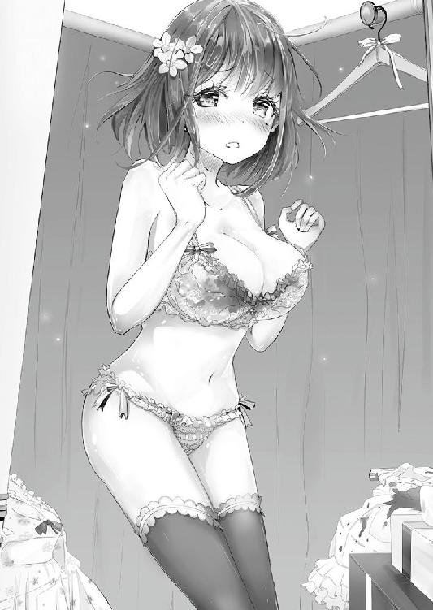

| JSかぐやの華麗なる恋愛哲学（桜ノ杜ぶんこ） | |
| 紙屋あまと | |
| (2014) | |
桜ノ杜ぶんこ
ＪＳかぐやの華麗なる恋愛哲学
紙屋あまと
第一話 かぐやちゃんが呼んでいる。
春。
暖かな日差しが降り注ぎ、清々しい空気で家の中が満たされる。
朝方特有のこの雰囲気は、私の数少ないお気に入りだ。
「......やく！」
許されるならば、この雰囲気の中にあと一時間ほど......。
「......早く！」
あと一時間ほど......浸っていたい。
「鷹子ぉ！」
「........................ちっ」
しかしながら残念なことに、そうはおろさぬ問屋のような輩がいる。
我が『かぐや家』には。
「寝てんじゃないのぉ鷹子！ 早く出て！」
「........................はぁ」
女だらけの朝は、とても騒がしいのだ。
「鷹子ぉ！ 鷹子早く！！！」
ドンドンと、激しくトイレの扉が叩かれる。
「早くしなさいよッ、会社に遅れるでしょ！ 後がつかえてるんだから！」
そう言ってヒステリックな声を上げるのは、長女のかぐや早苗。
今年から社会人になった早苗は、大手出版社に勤めている。
そんな人物がヒス声を上げて早くクソさせろと、小学生の妹相手に毎朝トイレの扉ドンしているなど......姉を採用した会社のお偉いさんも思うまい。
「あんたねぇ！ 毎日トイレ長いんだから、小学校行ってからしなさいよ！ たくさんあるでしょ、個室が！」
愚かな......学校のトイレでクソなどしようものなら、速攻で「ウンコマン」の称号を獲得の上、クラスメイト達から迫害を受けるのは明白。
現にうちのクラスには、既に三人ほど「ウンコマン」扱いの男子がいる。
小学校とはそういう恐ろしい場所なのだ。
歳を取りすぎてそんなことも忘れてしまったのか、長女よ。
「お願い鷹子！ 早く〜!!」
男子と違って、女子は全て個室トイレなのだから、大をしようが小をしようが構わないじゃないかって??
ハハハ。
「た〜〜か〜〜〜こ〜〜〜〜〜〜！！！」
読者の男子小学生諸君。
女子だって同じなのだ。
いつの世も、小学校での大便は大いなるリスクを孕んでいる。
小学校のトイレには、〝音姫〟などという人類最高の発明品は完備されていない。
聞こえちゃいけない物が聞こえ放題、まさにスラム街さながらの無法地帯そのもの。
クソすりゃバレるのだ。
......さて、のっけからクソの話はこのへんにして、そろそろ可哀想な長女のためにトイレを解放するとしようか。
食事中の読者諸君、スミマセンでした。
ガチャリとトイレの扉を開けるや否や、隙間から長くてキラキラした爪、そして血走った眼球がヌゥゥと覗く。
「ウルヴァリンかね君は」
今からその爪で誰かを殺しに行くと言うのか。
「ネイルよネイル！ ＯＬもこういうのする時代なの、お洒落は指先から☆お仕事中も女子力ＵＰ☆、らしいわよ」
「らしいわよ......って、無理矢理やってるのかね」
早苗はミント色の短いスカートと、襟元にフリルの付いたフェミニンなシフォンワンピという小洒落た装い。
こんな格好で会社に行けるとは......時代も変わったものだ。
「無理矢理ってわけじゃないけど、周りの子がみんなやってるから......」
「ふん、下らぬ。早苗という古風な名前のくせして、流行り廃りなんぞに飲み込まれおって。恥を知れ」
「あんたみたいなお子ちゃまには到底分からないでしょうけどね〜、会社ってのはハブにされたら終わりなの。周りに合わせとくのが一番良いのよ」
できるだけ波に逆らわないように生きていかなきゃ、と小さく呟いた早苗。
私はそんな早苗を、憐みいっぱいの目で見つめてやる。
一〇歳以上も歳の離れた姉に対して、ひと握りの尊敬も抱けないというのは如何なものか。
長女である早苗は、姉妹の中でもひときわ末っ子である私との相性が悪い。
お互い気が強く、喧嘩っ早い性格というのもあるが、一番の原因は歩んできたスタイルの違いであろう。
中学後半あたりから、突然髪を染め、派手なメイクをし、変なギャル語を使うようになり、様子がおかしいとは思っていたが。
以降ゴリゴリにギャル化していく早苗を見て......我々妹達が「どうしたお前」という言葉を掛けてやれなかったことは、今でも悔やまれる。
それから高校～大学と、早苗はずっとチャラチャラしていた。社会人となった現在でこそ身なりは多少落ち着いて、今風のＯＬにはなったが......本質はチャラいギャルから一向に変わってはいない。
ほんの僅かでも、姉妹の長として尊敬に値する部分でもあれば救いになるのだが......残念ながら今のところ皆無である。
「はぁ～、やれやれ」
「あんた......小学生のクセに、働き疲れた四〇代サラリーマンと同じ目してるわよ」
失礼な。
「とにかく、さっさとトイレを代われ......!!」
「仕方ないな、思う存分クソするがいい」
本気でやばそうなので、さすがにすっと道をあけてやる。
「毎朝タラタラ、タラタラと、覚えてなさいよ鷹子!!」
吐き捨てるようにそう言って、長女はトイレに駆け込んだ。
無様な女だ。
「そんなだから、彼氏ができても長続きしないんじゃないのかね？」
「余計なお世話よー!!」
確か、早苗は最近彼氏に振られたばかりだった筈だ。
姉の恋愛なんぞにさほど興味は無いが、この調子ならもう大丈夫か。
ギャーギャーと、扉の向こうから聞こえる罵声を気にも留めず、私はリビングへと向かった。
「あ、鷹子おはよう〜」
リビングに入るとすぐ、朗らかな笑顔が出迎える。
四女のかぐや美羽だ。
「鷹子、ミルク飲むよね？」
「うむ」
美羽はまだ中学生だが、とても働き者だ。
肩までのふんわりボリュームのある髪と、制服の上からかけたエプロンがとても母性的で、本人の柔らかい性格を更に際立てている。
大人びたその雰囲気から、家族内では〝団地妻〟の異名を欲しいままにしており、それが本人的には不本意（団地妻と呼ばれるほど歳とってませんから！）らしい。
......そんな美羽だが、女性としてのスペックはかなり高い。
温かい包容力はもちろん、化粧など一切せずともクオリティの高い顔面......要するに素で美人な上、ファッションも大人しい清楚系ときている。
私の予想では、中学でも非常に男子受けが良いのではないだろうか。
妹目線の贔屓を抜きにしても、これほど器量が良い女はそうはいないと思う。
かぐや家の両親は仕事の都合で海外暮らしだが、美羽のおかげで両親不在のデメリットは全く感じない。
家の中のすべての仕事を、ほぼ一手に担っていた。
そういう意味で、団地妻という呼称も言ってみれば褒め言葉なのだ。
「恐らく、美羽には三体ぐらいスペアが存在するのだと、私は思っている」
「なに、ひとをオカルトみたいに言って」
「いやぁ、まさしくソレだよ。オカルト以外に、君の存在を説明する術がない。いまの世界ではね」
「もう〜、変なこと言うならミルクあげなーい」
「う......すまない冗談だ、気を悪くするな」
もう〜、鷹子はおかしな子ね......そう言って優しい溜息をつきながら、私の専用マグカップに入れたホットミルクを渡してくれる。
「ううむ、溢れ出る団地妻の香り......朝の至福だ」
私はカップを傾けながら感慨深く呟く。そして美羽をチラリ。
「もうっ、鷹子！」
怖い怖い、これ以上からかうのはやめておこう。
こうプリプリ怒っているうちはまだ良いが、美羽が本気で怒ると姉妹の誰にも止められないのだ。
「......んく」
コクコク、小さく喉を鳴らしてミルクを充填する。
私の朝食は、この程良く温まったミルクと決まっていた。
あまり朝からバカバカ物を食べると、お腹を壊してしまう。
「あ、ほら鷹子、口の周りにミルク付いてる」
美羽はそう言って身を乗り出し、花柄の可愛らしいハンカチで私の口元を拭ってくれる。
「ぬっ、わっ......じ、自分で拭けるわっ、子供じゃあるまいしッ」
「小学生でしょ、子供だよ」
「そ、そういう自分だって中学生であろう！」
これだから団地妻だというのだ。
さっきトイレでヒステリーを起こしていた長女（早苗）と違い、四女（美羽）はかぐや家においては確かによくできた女だが、それゆえの問題もある。
あまりにしっかりし過ぎているのも、同年代から見れば浮いてしまうだろう。
「気をつけたまえよ」
中学生にして団地妻の貫録が見えてしまうというのは、何かと不利に働く場合も......。
「あ、もう〜鷹子、髪の毛はねてる」
「む、むう......!? 別によい......」
「駄目だよ。こっち来て、梳かしてあげる」
「......う、うん」
まあ、甘えてしまうこちら側もこちら側か。
そんなことを思っていると、激しい足音が二階から降ってきた。
「ん、んん〜！ みゅうちゃ～ん、ネクタイがちゃんと締まらないの手伝って〜っ」
ドタドタと慌てた様子でリビングに駆け込んできたのは、高校生の三女、かぐや縫だ。
「昨日はちゃんと自分でできたのにぃ、なんでだろ......もう、ネクタイの無い高校に行けば良かったぁ」
「はいはい分かったから、こっち来て？」
情けなく愚痴を溢す縫に対して、優しく穏やかに対処する美羽。
どちらが高校生でどちらが中学生なのか分からないような姉妹。それが縫と美羽だった。
縫は天真爛漫で自由奔放という表現が実に合う姉である。
ただ少々、性格が素直すぎるというか......頭が足りてないというか......アホっぽいというか......いわゆるお馬鹿なため、会話をしていても噛み合わないことが多々あるのが問題か。
その上、小学生の私がちょっと強く物を言っただけで涙ぐんでしまうレベルの泣き虫だ。
昔から長女や次女のおもちゃにされて、よく泣かされていた。
普通ならそれは末っ子である私の立ち位置だろうが、私は幼稚園の時点で姉妹全員をあらゆる角度から論破できる話術を持っていたため、ターゲットはいつも縫だった。
逆に言えば、姉達から一番可愛がられていたのも縫であったが。
「あ〜あ〜、くしゃくしゃになっちゃってるよ縫。やり直すから、鷹子と並んで後ろ向いて」
「うん！ ありがとみゅうちゃん」
そう言って縫は私の隣に座る。
「二人してお揃いだね、鷹ちゃん♪」
「こんな格好悪いことでお揃いになどなりたくないがね」
二人揃って、美羽に身なりを整えてもらっている姿は、母親と子供のそれに似ているから。
「えぇ〜？ 私は嬉しいよ？」
「君の方が深刻だぞ縫。私は小学生だが、君は高校生だ。中学生の美羽に世話されるには歳を取り過ぎている」
「そんなことないよ〜この間まで私も中学生だったしぃ、あんまり変わらないよ？」
「そうかね？ それにしてはここ一、二年で急に胸の膨らみが大きくなったような気がするのだが」
「むむ、胸!? え、や、鷹ちゃん！ エッチなこと言うのやめて！」
「いや別にエッチなことでは......女同士であるし」
「お、女の子同士でも、エッチなことはいけないんだよ！」
「いやだからエッチなことでは......」
「もう、二人とも暴れないで。髪も梳けないしネクタイも結べない」
「だって鷹ちゃんが、変なこと......ぉ」
美羽に叱られ、モニョモニョと口ごもる縫。
どうやら大きくなってきた胸のことを、本人も気にしているようだ......そういう時期か。
「案ずるな縫、いくら大きくなったとはいえ、まだ私には敵わんだろう？」
「そおおおだよ！ 小学生のくせに、鷹ちゃんのおっぱい、やらし〜んだぁ」
フォローしたつもりだったのだが、ヤーイヤーイと低レベルな喧嘩を売られてしまった。
無視しておこう。
「はいできた。鷹子も縫もこれで良し」
「うむ、ご苦労」
「わぁ〜綺麗になったぁ。ありがとうみゅうちゃん！」
「どう致しまして」
そう微笑む美羽。
団地妻などとは言ったが、実際この美羽の世話焼きによって回っているかぐや家においては、現状感謝せざるを得ない訳で。
それと言うのも.........、
「早苗姉さん......今日は何時終わり？」
トイレから出てきた長女の早苗と共にリビングへやってきたのは、大学生の次女、かぐや亜也伽だ。
長女と次女......この二人の姉が、あまりに役に立たない問題児なのである。
亜也伽は見た目こそまともだが、その実かなりの変人で強い妄想癖を持っている。
更に、早苗に対する執着が尋常ではなく、暇さえあれば常にベタベタと絡んでおり、その度合いはストーカー並。
更に更に、大学に行きながら『アイドル声優』などという特殊な仕事もしている亜也伽は私が言うのもなんだが、独特の口調と言語表現で他者をやり込める口撃型の女だ。
これでそこそこ人気声優らしく、ファンも多数いるとのことだから驚きを隠せない。
「そうね〜別に締め切り前でもないし、九時くらいには会社出れると思うけど」
そんな亜也伽に対し、いとも容易く帰宅時間という重要な個人情報を漏らす早苗。
愚かなり。
「そう......じゃあ迎えに行くから」
「えぇ!? い、いいわよ別に！ 電車で帰るから」
「いけないわ......夜は危ないし、痴漢に遭うかもしれない......私の車の方が安全」
「いやそれはちょっと......電車でいいってば。あたしを痴漢しようなんて酔狂な輩はいないわよ〜あははは！」
「いいえ、いけないわ......確かに早苗姉さんに手を出そうなんて、特殊な性癖の持ち主だけれども......それでも、私の車で帰るべき」
「特殊な性癖とか言わないで！ 謝って！ むしろあたしに惚れてた元カレに謝って！」
「元カレ？ ああ......あの男。あれはとびきり極上の屑だったわね。別れて正解よあんな屑......本当に屑だわ、あの男は紛れもない屑」
「九割方あんたのせいで別れたんでしょおッ！ デート行くのも食事行くのもくっ付いてきて！」
「ラブホテルにも付いて行ったわ」
「ああそうよね！ そんなだから振られたの！ どこに行くにも小姑みたいな妹が同伴じゃ相手もさぞ迷惑よ！ いざそういう場面になっても萎え萎えだし！」
「うぅぅ......可哀想な早苗姉さん」
「あんたのことよ亜也伽！」
なんとも見るに堪えない不毛な言い合い。
「早苗、亜也伽、おはよう」
そんな二人を、美羽はいつものニコニコ笑顔で出迎えた。
中学生ながら、団地妻は姉全員を呼び捨てにする。
かぐや家への貢献度を鑑みると、それはなんら問題のない事象だ。
「ねぇ美羽〜亜也伽なんとかしてよ、朝から鬱陶しい」
「人のせいにしてはいけないわ......私のことを鬱陶しいと感じるのは、早苗姉さんに私を受け入れる器量が無いだけ。自らの無力を棚に上げ、尚且つ自分にとって不都合なことはわざと知らぬ顔をして打ちすてておく......これこそまさに下衆の所業、鬼畜の極み」
「あ〜〜〜〜亜也伽のセリフが長くなってきたぁ〜〜〜〜もう嫌だぁ」
早苗は亜也伽に絡まれ過ぎると、頭が痛くなる持病があるのだ。
「う〜ん、これに関しては私も出る幕ないかな」
団地妻すら匙を投げる。
それが、かぐや家の長女（早苗）と次女（亜也伽）だった。
上二人がこんな腐った姉達では、相対的に美羽の株が上がるのも致し方無い。
「ほんっと仲良いよね〜さなちゃんとあやちゃんわぁ」
縫の瞳にはあれが『仲良し』に見えるそうだ。
──あとでお勧めの眼科を教えてやるとしよう。
「それは違うわ縫ちゃん......これはね『仲良し』ではなく............『愛』」
こっち（亜也伽）には脳外科が必要な様子。
しかも自分で言っておきながら......、
「..................っ」
亜也伽は少し頬を赤らめている、変態だ。
「だから勘弁してよ、あたしは男にしか興味ないわよ。しかもシスターラブだなんて、ラノベじゃあるまいし論外中の論外」
「早苗姉さん......そう、分かったわ......早苗姉さんの気持ちはよく分かった」
「やっと分かってくれたのね亜也伽。あたし、嬉しいわ」
「じゃあ今日の帰り迎えに行くから」
「話の流れをこれっぽっちも汲み取ってくれてない！ っていうか、亜也伽さ......ただ運転したいだけよね？ 免許取りたてなんだから、人乗せるのは自重した方が」
「マイカー......イズ......マイライフ。悔いは......ないわ」
「事故起こす前提なの!? やっぱ絶対イヤ！ あたし乗らないからッ」
「それはどういうことかしら......死ぬならひとりで死ねと？ そう言いたいのかしら？ 早苗姉さんそんな......いけないわ!!」
どさくさ紛れに、早苗に抱きつく亜也伽。
「ちょっ、亜也伽っ!?」
なにかにつけて早苗に対しては、スキンシップをしたがるのだ。
「ふふふ......今日の香水、割と私好みの香りよ......誘っているのかしら？」
「誘ってない誘ってない!!」
そのまま、亜也伽に押し倒されそうになる早苗。
「ひぃぃぃ亜也伽、ふざけるのはヤメっ！ んんっ！」
長身・黒髪で、色白の亜也伽は......どこか幽霊に似ている。
「はは、まるで悪霊に襲われているようじゃないかね」
「冷静に分析してないで！ 助けなさいよ鷹子！」
「ふわ、楽しそう......!!」
「縫〜キラキラした眼差しであたしを見てないで、助けなさい？」
「はいはい二人とも〜いつまでも遊んでないで。亜也伽だけよ朝ご飯食べてないの、片付かないから早く食べちゃって」
「......わ、分かったわ......御免なさい美羽ちゃん」
「早苗はもう会社に行く時間でしょ？ 社会人一年目なんだから、遅刻なんてもっての外よ、はいこれお弁当」
「う、うん......ありがと、美羽」
しゅん、となる亜也伽と早苗。
「ふむ、さすが美羽」
「みゅうちゃん、すごぉい」
これが平凡な日常においての、我がかぐや家の構図だった。
社会人の早苗、大学生の亜也伽、高校生の縫、中学生の美羽。
「うわぁあ、本気で時間やばい！ いってきまーす!!」
一番最初に家を出る長女の早苗が、そう口にする。
「いってらっしゃい！」
ごく自然に、残りの四姉妹が揃って応えた。
第二話 かぐやお姉ちゃんは顔は悪くない 〜四女編〜
各学校までの通学路を姉妹で並んで歩く。
大学生の亜也伽は午後からの授業ということなので、今日は三人だ。
「縫、高校には慣れた？」
美羽が縫に問いかける。
「うん！ 結構良い感じだよ〜友達もたくさんできたしねー！」
「そっか、良かった。縫は明るいから友達も多そうだよね」
「まあね〜えへへ♪」
姉妹へのこういう母親的な気遣いには、美羽の優しい性格がよく表れている。
「縫、君はいつも能天気でいいな。学生生活の悩みなど、無縁に思えるよ」
「むむ、鷹ちゃんはまだ小学生だから分からないかもしれないけど、私にだって色々あるんだから〜高校生は大変だよ、うん」
「ほほう、たとえば？」
「えっ、たとえば?? ええーっと、うぅ......」
私が問いかけると、縫は困ったようにううん〜ううん〜、と唸る。
「ふん、考えねば出らぬ悩みなど下らぬものよ」
「あ、あるよ！ あります〜！ たとえば、その......ここ、恋の悩み......とかッ」
「ほう......恋とな」
これは面白そうな話だ。もう少しつついてみようか。
「こ、恋！！？ 縫、こ、恋してるの!?」
美羽が頬を桜色に染めて反応する。
「ま....................................まあね」
「嘘か」
「嘘なのね」
「..................すんません、見栄張りました」
高校生にもなって恋のひとつもできていないとは、なんとも情けない姉である。
......と、朝から縫に呆れ果てていると。
「よう、かぐや！ おはよう」
突然男性の声で、背後からそう呼ばれ姉妹一斉に振り向いた。
なんせ我々はみな『かぐや』なのだから。
「あっ、柏木君！」
ハッと反応したのは美羽だ。どうやら美羽の知り合いらしい。
「うおっ、ビックリしたぁ〜三人一緒に振り向くんだもんよ」
姉妹はこういう時に不便である。
「ご、ごめんね、姉妹達なの！」
「へぇ〜かぐやって、姉妹がいたんだ」
男は美羽と同じ中学の制服を着ていた。
クラスメイトか先輩後輩か......どちらにせよ気安いやつだ、登校中に異性へ声をかけるとは。
「う、うん、そうなの!! うちって五人姉妹でっ」
「多っ!? 女五人か、すげぇな」
......何がすげぇのか。意味不明。
「すげぇ、うめぇ、つえぇ、こえぇ、かっけぇ、ハンパねぇ......今時の見事な単細胞っぽいな」
「たた、鷹子！」
「単細胞??」
「ご、ごめん柏木君！ なんでもないの、なんでも！ 気にしないでっ」
家にいる時とはまるで違い、わたわたと落ち着きがない様子の美羽。
「どうりで、かぐやって大人びてるわけだよ〜、そっか五人姉妹ねぇ〜」
ジロジロとこちらを見てくる男......柏木君、とか言ったか。
「ははっ、じゃあこの一番ちっこいのが妹？ ランドセルってことは小学生か」
「ぬ？」
ちっこい、という言葉が引っ掛かる。
「貴様......」
反論しようと身を乗り出した、その時。
「そ！ そうなの〜あはは！ か、可愛い盛りで！」
遮るように美羽が「ごめん！」と小さく謝罪のジェスチャーを送ってくる。
「..................」
仕方ない、ここは美羽の顔を立ててやるか。
美羽には普段の義理があるし......。
「小学生の鷹子と......こっちが高校生の縫」
「美羽の友達？ よろしくね！」
「ちっす」
元気の良い縫に、一応は礼儀正しく頭を下げる柏木君。
「えっとあのっ、友達っていうか、柏木君はその、クラスメイトで......」
「あはは、かぐやが家でお姉ちゃんしてるの、なんか想像できるわー」
「!! そ、そう......あ、あははっ」
「おっと、時間ヤベ！ 悪いかぐや、先行くな」
「あ、うん。柏木君は朝練？」
「そそ。つっても、既に遅刻なんだけど」
「ふふふ、駄目だよ〜エースが遅刻なんてしちゃ」
「はいはい、分かってるよ。それじゃ、また教室でな〜かぐや」
「うん......」
小さく手を振る美羽。
ほのかに頬が赤いのは、私の気のせいでは無さそうだ。
「あいつはやめとけ、人のことをちっこい扱いするような奴、どうせヤリチンだ」
「柏木君はヤリチンじゃないから！！！」
食い気味で声を荒げる美羽。
似合わない大声を出したためか、登校中の生徒達の視線を釘付けだ。
「あまり感心せんがね、そのような言葉を大声で言うのは」
「........................」
トマトのように顔を真っ赤にした美羽は、それっきり黙り込んでしまったのであった。
通学路途中の分かれ道で縫は高校、美羽は中学校、私は小学校へと各々向かう。
私の通う咲蘭小学校はかなりボロい木造校舎だ。
木の匂いのする廊下を進み、自分の教室に入る。
......と。
「鷹子ちゃぁぁんーーーー!!」
教室に入るなり、私に飛びついてくる男子有り。
「どうした、あきら君」
「昨日怖い夢を見たんだ〜！」
「ほう、どんな夢かね？」
「宇宙人が来て、僕から鷹子ちゃんを攫っていく夢」
「............ぬぅ」
泣きべそをかきながら情けない声をあげる男子は早乙女あきら君。
私の婚約者、兼ＡＴＭだ。
「君......もう小学生だろう、親が泣くぞ」
「ご、ごめん〜」
「情けない男だ。よもやおねしょ等してはおらんだろうな？ 流石にそれは私も泣くぞ」
「だ、大丈夫だよ！ さすがにおねしょはもう卒業したし!!」
「本当かね？ いくら婚約者とはいえ、あまり私を失望させんでくれよ」
「分かってるって、僕は鷹子ちゃんに相応しい男になるんだからっ」
「ああ、頑張ってくれ」
あきら君は私のためなら何でもする......という条件で、将来を誓い合った関係。
私がしている左手薬指の指輪がその証だ。
去年の夏休みに縁日で買って貰ったオモチャの安物だが、小学生の私達にはこれで十分だと認識している。
もしあきら君との関係が大人になるまで続いたら??
そしたら、私はあきら君と結婚することになるだろう......それが婚約というものだ。
まあ当然、給料三ヵ月分の本物の指輪を請求した上で、だがね。
「その証拠に、今日はかねてから御所望のものを持って来たよ鷹子ちゃん！」
「ぬ......？」
「鷹子ちゃんが欲しがってた少女漫画、隣町の本屋で見付けて来ました!!」
「なんと!?」
「ギリギリだったけどね〜はい、これ」
そう言ってあきら君が、ガサゴソと黒のランドセルから取り出したのは......。
「うぉぉぉ、こっ......これはまさしく！ 『キスにお願い』の第一巻!!」
「カマゾンでも売り切れ中でしばらく入手不可のこの品を、君如きが手に入れたと言うのかね!?」
「婚約者だからね」
「おおお、婚約者ッ！」
今日ほど君を、頼もしく感じた日はないぞ、あきら君。
「一体、これをどこでッ」
「なんだかんだ言っても、最後に頼りになるのはネットより自分の足さ」
「足!? 自らの足を売ったと言うのかッ、そんな闇の売買に手を染めて君は......!!」
「違うよ!? そんな物騒な取引じゃなくて、隣町の小さな本屋にあったの」
「おお、そんな穴場にッ。さすがは私の婚約者だ、よくぞやってくれた」
「鷹子ちゃんのためなら、おやすいごようだよ！」
えへへ、と照れたように笑うあきら君。
「ふむ、おやすいついでに、もうひとつ頼み事をしても良いかね？」
「頼み事？」
「うむ、少しばかり調べてほしいことがあっての」
『とっても綺麗だよ、かぐやちゃん』
「う〜ん、嘘つきぃ......っ」
『嘘なんかじゃないさ、僕が会ってきたどんな女性よりも君は可憐で美しい』
「信じて......いいの？」
『勿論さ。おいで......かぐやちゃん、君を僕のものにしてあげる』
「駄目っ、こんな所で、人に見られたら......」
『大丈夫、誰も見てないよ。いや......ひとりいた』
「ひとり??」
『僕はもう君しか見えない、君の全てが見たいんだ』
「ああ、ダメ、そんな......！」
.....................。
「ゴミゲーだな、これは」
就寝前のラフな格好で、ベッドに寝転びながら恋愛ゲームを楽しむのは本来至福の時間だ。
しかしゴミゲーを掴まされた時の気分は最悪。
「そもそも設定が甘い、甘すぎる」
どれだけ女馴れしているのだ、このキャラクターは。
僕が会ってきたどんな女性よりも??
私が初めてじゃないのか......。
君を僕のものにしてあげる??
控えよ、独占欲の化身め。
君の全てが見たい？？？
昭和か。
「はぁ......」
呆れ果てた私は、携帯ゲーム機をベッドの上に投げ出した。
「ヒロインの名前が自分と同じという理由だけで買ってはみたが、大外れも良いところだ」
貴重なお小遣いを無駄にした。
この出来では、買い取り価格の暴落は避けられまいが、週末中古ショップへ売りに行こう。
「ふむ、口直しが必要だ」
私はランドセルを開けて、今朝あきら君から受け取った漫画本を取り出す。
「ふふふ、美味しいものは後に回した方がより甘美になるというもの......今日のメインはこれ、『キスにお願い』の第一巻!!」
いざ......ほのかに色づく恋愛の世界へ。
さっきのゲームはゴミだったが、貴様はどんな色を見せてくれる？
桜色か、オレンジか、それとも真っ赤な赤色か。
「ふふ、ふふふ」
......と、その時。
コンコン、と部屋のドアがノックされる。
「誰かね？ 今はちと取り込み中での、また後で......」
ガチャリ。私の返答を意にも介さず無情にも開くドア。
「お、おい」
「鷹ちゃん、今ちょっと良い〜？ 入るねー」
そそくさと部屋に侵入される。
「縫、君は私の言葉が理解できないのか」
「ごめん、どうしても相談したいことがあって......」
パジャマ姿の縫が、どこか元気なさげに立っていた。
「はぁ、やれやれ......一体何かね？」
「鷹ちゃんの部屋、相変わらずゲームと本ばっかりだね〜」
「.........おい、私の貴重な時間を無駄にさせてくれるな。さっさと用件を言いたまえ」
「う、うん......あのね、実は」
「............」
「姉妹として......ううん、同じ女性として、真面目な話をしたいの!!」
高校生の姉が、小学生の妹に言ってのけた。
「申し訳ない、歳の離れた姉とそのようなシモの話をする趣味は無いのでお引き取りを」
「待って待って！ シモの話じゃないから！ 誤解しないでよぅ〜」
半べそをかきながらすがり付いてくる。鬱陶しいことこの上ない。
「分かった分かった。話を聞いてやるから、離れないか。高校生にもなって情けないな君は」
「ううう......」
グスングスンしながら、少し離れる。
「で？」
「みゅうちゃんの、ことなの」
「美羽の？」
美羽のこと。嫌な予感が頭を横切った。
「そう!!」
先程までのベソはどこへやら。
急にキラキラした瞳になる縫......情緒不安定な奴だ。
「今朝の見たでしょ？ みゅうちゃん......みゅうちゃんきっと......」
ああ、神様......この馬鹿な姉をどうにか。
「きっと......!!」
どうにか、してくれ。
「きっと、あの男の子のことが好きなんだよ！！！」
興奮した息遣いで、縫は食い気味にそう言った。
はぁ......と、私はワザとらしく大きな溜息ひとつ。
「だから？」
あえて、ふてぶてしくそう言って返してやる。
「だからって......酷いなぁ〜鷹ちゃんは！ 私達姉妹だよ？ 家族なんだよ??」
「ふむ、家族だから美羽の恋愛を手伝って、あの男とくっ付けてやろうと......君はそう言いたいのかね」
「分かってるじゃん〜さすが、鷹ちゃんは賢いねぇ！」
「君のような単細胞の考えることだからよもやと思ったが......まさか考えうるなかで最低の回答だよ」
「なんで!? みゅうちゃんのためを思っての美しい考えだと思うんだけどなぁ」
「私は余計なお世話だと思うがね」
「鷹ちゃんって得意でしょ？ こういう恋愛事とかさ」
こんなに恋愛系のゲームや本を持ってるんだからさ、と言わんばかりに縫は部屋を見渡してニンマリ。
「人の話を聞きたまえ。胸はデカいが本当に馬鹿だな君は」
「胸は関係ないでしょー!?」
「やれやれ......それで、君は私に何をしろと？」
高校生の姉が、小学生の妹に恋愛事で助けを求めるとは、情けないにも程がある。
「んん〜〜っと.........分かんないッ」
あっけらかんと言い放つ。
「............」
私は呆れて言葉も出ない。
「どうすれば、みゅうちゃんとあの男の子がうまくいくのかなぁ〜」
「知らんがな......」
「冷たいよ、鷹ちゃん！」
やれやれ、うるさい女子高生だ。
「そんなの本人に聞くのが一番手っ取り早かろう、キスでもエッチでも、なんでもすれば良い」
「えええ、エッチ!?」
「やれやれ、仕方ない。君を追い出すより自分から出た方が早そうだ......ほら、行くぞ」
「い、行くって？」
「美羽のところだ」
「美羽、ちょっと良いか？」
美羽の部屋の前で、そう声をかける。
「鷹子？ ちょっと待ってね」
すぐに中から美羽の返答。
さっさと終わらせてしまおう、こんな面倒なことは。
「ちょ、鷹ちゃんっ、大丈夫なの!?」
「あ？ なんだ縫、今朝のことが気になっているのであろう？ だったら直接聞けば良いではないか」
「き、聞くって......それがしづらいから鷹ちゃんのところに相談行ったのに......」
「君はいつからそんなデリケートな女子になったのかね？ 反吐が出るよホント」
「反吐！？？」
ゴチャゴチャとくだらないやり取りをしているうちに、美羽が部屋から顔を出した。
「お待たせ〜あれ、縫も？」
「あ、あはは〜こんばんは、みゅうちゃん、えへへ〜」
「??」
縫のぎこちなさに顔をしかめる美羽。
「悪い、少し話があるのだが。部屋に入っても良いかね？」
「あ、うん。良いけど」
美羽は風呂から上がったばかりらしく、少し湿った髪の毛を櫛で整えながら部屋へと迎え入れてくれた。
「どうしたの、こんな時間に......って、あれ？」
そう言いながら部屋の壁掛け時計に目を向けた美羽が、ふと怪訝な顔をした。
「やだっ、また止まっちゃってる」
「なんだ？ 時計が壊れているのかね？」
見ると、可愛らしいピンク色の丸時計の針が、完全に静止状態となっている。
「最近調子悪くて、電池換えても駄目みたい。寿命かなぁー」
「ふむ、修理に出しても逆に高くつくからな。新しいものを買いたまえ」
「うん、そうだね」
とはいえ、今どき時間の確認は勿論、目覚ましやスケジュール管理までスマホ一台で賄えてしまう以上、壁掛け時計の必要性もかなり低くなってしまって、壊れたら壊れたまま〜なんて場合もままありそうだが。
「ってごめん、話の腰を折っちゃって。それで何の用件なの？」
美羽が聞いてきた。
「ああ。今朝通学中に声をかけてきた男、柏木君と言ったか......奴について少しばかり聞きたいことが」
「か、柏木君!?」
突然出てきた名前に、美羽の頬が紅潮する。
「ほれ見ろ縫、これは黒だ。美羽は奴が好き、それが分かれば良かろう。夜は長い、あとは二人でゆっくり話してくれたまえ」
そう言い残して部屋を出ようとした。
決まった......これはバッチリ決まった。
「って、待ってよ鷹ちゃぁぁああん！！！」
すがり付いてくる縫。
「な、なんだね？ まだ何かあるのかね？ 私の役目は無事に終わったと認識しているが？」
「導火線に火を付けたまま放置してかないでよぅ〜!!」
「...............縫、鷹子？ これは一体どういうことかしら？」
耳まで真っ赤に染めて、プルプル肩を震わせた美羽が声を絞り出す。
怒っている、明らかに怒っている。
「ひぃぃ、みゅうちゃん怖い〜！」
「ま、待て美羽、私は関係ないっ！ 私はただ縫に言われてっ」
「あ〜私のせいにするんだぁ！ みゅうちゃんに直接聞こうって言ったのは鷹ちゃんなのに、そんなこと言うんだぁ！」
「君が私の部屋に来てコソコソ話そうとしたりするからじゃないかね！」
「それはみゅうちゃんがどうやったらあの男の子と上手くいくか、鷹ちゃんにアドバイスを貰おうと〜」
「アドバイスなら君が美羽にしてやれば良かろう。もっとも、君のような乳だけの女に的確な助言ができるとは微塵も思わんがね！」
「乳だけの女って言うなーーーー!!」
私と縫がギャアギャアと言い合う中、少し状況を理解してきたのか、美羽が小さく口を開く。
「まったくもう、二人とも......いくら姉妹だからって、個人のプライバシーにまで踏み込むのはどうかと思うよ？」
「姉妹だからこそ知りたいんじゃん〜！ もちろん興味本位じゃなくて、みゅうちゃんの恋が上手くいくと良いなって思ってるよ!!」
「そうとは思えんがね」
「...............だから」
美羽はポツリと溢した。
「柏木君は......そんなんじゃないの......」
消え入りそうな声で。
「へ？ そうなの？」
縫はあっけらかんと信じてしまった様子。
「な〜んだ、私はてっきり『そういう仲』なのかと思ってたよー」
「柏木君はただのクラスメイトで、気さくに接してくれるから仲は良いけど、縫が思ってるようなことは全然......」
「そうなんだ〜ごめんね、なんだか早とちりしちゃって」
「もう縫ったら......鷹子まで巻き込んで、変な勘違い」
「嘘だな」
美羽の言葉を遮る様に、私は言った。
「無理に関わるつもりは無いが、目の前で嘘をつかれるのは少々気分が悪い」
「っ!?」
美羽がビクンと可愛らしく反応した。
しっかり者に見えても、中身は中学生......この程度の揺さぶりですぐにボロを出す。
「へ？ 嘘？」
「う、嘘なんかじゃ......っ」
きょとん顔の縫に対し、美羽は慌てて取り繕おうと必死だ。
「こと恋愛に関して、私に嘘をつけると思うなよ、美羽」
「............」
「そんなに怖い顔をするな、美人が台無しだ」
「私なんて、全然美人なんかじゃないよ......お姉ちゃんっぽいとか、所帯染みてるとか、よく言われるし」
「それは気の毒だの......」
「確かにみゅうちゃんは大人っぽいよね！」
「柏木君だってきっと、年相応のもっと可愛らしい女の子が好きだと思う」
「ほう、柏木君が誰を好きなのか、美羽は知っているのかね？」
「そんなの知らない......言ったでしょ、そんな会話ができるような関係じゃないし」
「二人きりで話をすることなんてほとんど無いよ。柏木君は皆に優しいし、私だけが特別だなんて......絶対に無い」
「みゅうちゃん......」
「......ふむ」
手玉に取るには素直過ぎてつまらないぞ、美羽よ。
「美羽、君は顔が良い」
私は真っ直ぐに美羽を見つめて言った。
「い、いきなり何？」
突然褒められて、どう反応して良いか分からない様子の美羽。
「かぐや姉妹の中では無論一番だ、更に言うなら中学内でも上位であろう？」
「そ、そんなの知らないよっ、何かランキングがあるわけでもないし！」
「ランキング？ そんなものあるに決まっているじゃないかね」
「「あるの！！？」」
声を揃えて、縫と美羽が同時にビックリする。
「クラスの男子連中だよ、高校・中学は勿論、最近では小学生にもあるぞ」
「そ、それって......」
「男子は女子の、女子は男子の格を付ける。たとえそれが公にはされてなくとも、仲間内で、更には個人個人の中に」
コミュニティに属する人間なら誰しも。
「誰が可愛くて誰が不細工か、誰が自分に利益をもたらし誰が害をなすか、誰に従うべきか敵対すべきか。人は必ず周りの人間をランク付けする生き物だ。それは大人だろうが子供だろうが変わらんよ」
「うう〜ん、分かりづらいよ鷹ちゃ〜ん」
「君は本当に馬鹿だな縫。スネ夫ものび太もジャイアンには逆らわないし、しずかちゃんは持て囃されるだろう？」
「なるほどそういうことね！」
「いや全然分からないよ鷹子、結局なにが言いたいの？」
「『顔が良い』君にとって、目当ての男子を落とすなど造作もないことだと言っておるのだよ」
「おおおー、つまり、よりどりみどりってこと!?」
「恋愛においては、だがね」
「みゅうちゃんって凄い娘だったんだね!!」
キラキラと目を輝かせる縫、それに引き替え......。
「........................馬鹿みたい」
美羽は呆れをとおり越して、疲れた溜息をこぼした。
「何かね？ まるで信用していない、といった様子だが」
「当たり前でしょ、そんなふざけた話。顔が良ければ誰にでも好きになって貰えるなんて」
「ほう、そうか。信じられないか」
「し、信じません」
「まあいい、無理に信じて貰おうなんて思ってはいないからな」
私はプイっとそっぽを向いて、部屋を出ていく素振りをみせた。
「せっかくの恵まれた容姿を無駄にして、煌めく機会と可能性を損失し続けると良い」
「ちょ、ちょっと鷹子......」
すると美羽は私を引き留めるかのように、虚空へと手をのばす。
「何かね？」
「...............」
身体を半分だけ返し見つめると、何か言いたげに目を泳がせる美羽。
「用が無いならもう行くが。夜分遅くに邪魔をしたな」
そう言ってドアノブに手を掛け......
「ほ、本当に！ 目当ての男子を落と......っ、い、今よりもっと、仲良くなれるの??」
出てきたな、『雌』が。
「ああ、君なら確実とまではいかなくとも......そうだな、九〇％以上の確率でハッピーエンドに導けるぞ、私なら」
「九〇％!?」
目を見開く美羽、こいつはもうノリノリだ。
「私が教えてやろうではないか」
「『顔が良い』というのは恋愛において圧倒的なステータスであり、『顔が良い』だけで恋愛は物凄くイージーモードになる、ということを」
「............」
美羽の目に浮かんだ淡い期待。
私はそれを、見逃さなかった。
そして、次の日。
「......遅い」
縫を呼び出した私は、ある場所にいた。
美羽の通う花蘭中学校。
かつて縫や亜也伽、早苗が通い、いずれは私が通うことになる中学校だ。
その校門前で、縫と落ち合うことになっている......が。
早五分の遅れだ。
「お〜い、鷹ちゃ〜〜ん！」
私がイライラし始めたところでようやく、遠くに縫の姿を発見。
「こっちだ縫、あまり大声を出すなっ」
「え?? なに〜?? 聞こえないよ〜」
「はよ来んか!!」
ただでさえ中学校の校門前で赤いランドセルは目立つのに、騒いだりしたら......。
「あははっ、なにあれ可愛い〜♪」
「クスクス、お姉ちゃん待ってるのかな？ 偉い偉い」
「............ぬう」
こういう風に、帰り際の女子中学生達から笑われてしまう始末。
「ごめんごめん、ちょっと遅れちゃった〜♪」
ヘラヘラしながら、縫が御到着。
「ちょっと遅れちゃった〜♪ じゃなかろう！」
「ほえ？」
「時間くらい守りたまえ！ もともとこれは君の案件だ！」
「ご、ごめんよ鷹ちゃん」
「私はわざわざ、君に付き合ってあげている、という状況を理解したまえよ」
「それは分かってるけど〜なんだかんだ鷹ちゃんも楽しんでる様な気が......」
「何か文句でも？」
「な、何でもありません!!」
ビシッと背筋を伸ばす縫。
現金な奴だ。
はたから見れば、小学生の命令に従う高校生というおかしな構図だろう。
「でさでさ〜鷹ちゃん！ ここに集合したってことはアレだね！」
「ああ、アレだ」
「みゅうちゃんの恋愛を手伝うんだね！」
「昨日は結局、曖昧な返答で終わってしまったからな、それを確認する意味でも......」
「突撃だね！」
「違う」
なにも分かっちゃいない、お馬鹿女子高生が。
「まずは美羽を知り、恋愛の相手を知り、そして状況を正確に掴む」
「ほほう〜」
「縫、私の足だけは引っ張ってくれるなよ」
「大丈夫だよ！ こう見えて高校生だよ私？」
「だと良いのだがね。行くぞ」
多少の不安材料を抱えて、私は花蘭中学校へと入った。
「いたぞ、美羽だ」
グラウンド入口にある水飲み場付近に美羽を発見。
縫の手を引き、すかさず身を隠す。
「ひとりだね......あんな所で、なにしてるのかな？」
見ると、美羽はひとりでグラウンドの方をボーっと眺めていた。
「見ているのだよ、サッカー部を」
「サッカー部？」
私がそう言うと、縫はじっとグラウンドを見つめた......そして。
「あ〜！ いた、こないだ声かけてきた男の子！」
「しーーーっ！ 声が大きいっ、美羽にバレてしまうじゃないかね！」
「ご、ごめんっ」
「バレてしまったら最後、美羽の機嫌を損ねて......全て台無しになるやもしれん。そのような無様な結果になろうものなら」
「なろうものなら？」
「私はこの件からは手を引かせてもらう」
私が恋愛に関わる以上、失敗などありはしないのだから。
「それは駄目だよ〜昨日あんなに大口叩いたんだからっ」
「なら静かにしていることだ」
「ラジャーッ」
シュタ！ と自衛官のような敬礼を見せた。
なかなかに図太い奴。
「美羽の行動は、情報どおりだな」
「情報??」
「念のため昨日から美羽には監視を付けていたが、昨日もああやってグラウンドの柏木君を眺めていたそうだ」
恋する乙女の様な瞳で、な。
「どこ情報なのそれ!?」
「それは教えられんね。情報源が漏れるのは危険だ」
「そ、そうなの？」
「それにしても美羽め、大人しそうなツラをして結構やるじゃないかね。ストーキングとは、亜也伽もビックリだぞ、くくく」
「亜也ちゃんほど本格的じゃないでしょ!? しかもぼんやり見てるって感じだし、全然可愛いもんだよ」
「ぼんやりだろうが、凝視だろうが、ストーキングには変わりない。美羽もかぐや家の女ということだな」
「どういう理屈なの!? っていうか、他に何か情報は無いの？ あの柏木君の！」
「柏木勇太。美羽のクラスメイト兼、サッカー部のエースをしているそうだ」
「えぇ!? すごい男の子だったんだね」
「あれを見るがいい」
そう視線を誘導した先には、黄色い声援をあげる女子集団がいた。
「みな、柏木勇太のファンだそうだ」
「まるでアイドル......」
「そう奴は、腐れ異性からの絶大な人気を集めるアイドル。優良物件というモノだ、競争率も高い。くくく、美羽も抜け目がないじゃないか、狙いの付け方が立派な雌のそれだぞ」
「鷹ちゃん段々目つきが怖くなってるよ!? だだ、大丈夫??」
「無論大丈夫。それどころか、割とテンションはあがってきているよ」
身内の恋愛などにさらさら興味は無かったが、これはもしかすると......。
「くく、くくく！」
「やっぱり怖いよ鷹ちゃん!?」
ゲームなんかより、全然面白いんじゃないだろうか......ッ！
「あっ、見て見て鷹ちゃん、誰かみゅうちゃんに近付いて来たよ？」
「ぬ......あれは美羽の友達だな。今日はこのあたりにして引き上げるか、深追いは危険」
「鷹ちゃん！ こっちこっち！」
縫を見ると信じられないほど、ギリギリの木陰まで接近していく。
「ぬ......っ！」
なんてやつ。
「（そ、それ以上、近付いては気付かれてしまうぞ!!）」
「（大丈夫大丈夫！ きて！）」
「（ぬぅ......っ）」
人のことを怖いだのなんだのと言っておきながら、自分こそ恐れ知らずのギャンブラーではないか。
致し方なく縫にくっ付いて、二人へと急接近する。
「（あれ、誰かな？）」
「（やつは川上梓。美羽の友達だよ、中学に入ってから一番のな）」
「（そんなことまで調べてるの？）」
「（昨日からの一日で、美羽の周辺情報は調べられるだけ調べたからの）」
「（あたしゃ姉としてあんたが恐ろしいよ......）」
川上梓は美羽とは対照的に、かなり派手目の女子中学生だ。
男からも女からも好かれるタイプで、流行にも敏感な今時の女子といった感じらしい。
そして、この川上梓という女が今回のキーマンであり、美羽にとって一番の障害でもあると、私は踏んでいた。
「ねぇ、美羽？」
二人で息を潜めると......美羽達の話し声が少しずつ聞こえてきた。
「なに、梓？」
「今度の日曜日さ、柏木君たち部活休みなんだって〜」
「へぇ、珍しいね。いつも休日まで練習漬けなのに」
「でしょでしょ?? こんなチャンス滅多にないと思うんだよね〜」
「チャンスって......？」
「美羽ったら〜分かるでしょ？ この機会に〜柏木君をデートに誘おうと思ってるの♪♪」
「で、デート！！？」
「でも二人きりだと下心バレバレって感じじゃん？」
「............」
「だから〜美羽も一緒にさ、ダブルデートしよう!!」
「だ、ダブルデート!?」
「田中君も誘ってさ〜二対二のダブルデート〜♪」
「あ、ああ......えっと」
「タイミング見てさ、お互い別行動に持ち込んで〜二人きりになれたら......思い切って告白、とか！」
「！！？」
目に見えて狼狽える美羽。
「（田中君って誰??）」
息を潜めたまま、縫が私に聞いてくる。
「（どうやら以前、あの川上梓と美羽との間でひとつの話題があがったらしい）」
「（どんな話題？）」
「（サッカー部の中で、誰が一番タイプか）」
「（うわ〜中学生っぽい）」
「（美羽はその時、つい嘘をついてしまった......禿の田中君がタイプだ、と）」
「（なぜ禿!?）」
「（親友の川上梓の気持ちを知っていたから）」
「（川上さんも禿が好きなの!?）」
「（君は馬鹿か）」
「（酷い〜）」
「（逆だよ逆、川上梓の想い人が柏木君だと知っていたのだ）」
「（なるほど、それでみゅうちゃんは嘘をついたんだね！）」
「（ああ、良心の呵責に負けてな。非常に下らんよ。それ以来、美羽は川上梓の前では本心を偽らざるをえなくなった......）」
「（それで田中君のことが好きだと勘違いされちゃってるわけか〜キツいね、みゅうちゃん）」
「（自業自得だと思うがね）」
私達のヒソヒソ話をよそに、二人は会話を続けた。
「ねぇどうかな〜美羽？ 二人で、頑張って告白!!」
「え、えええ〜っっ!?」
突然降って湧いた告白話に、驚きを隠せない様子の美羽。
「美羽が恥ずかしくても、私はするよ？ だからお願い美羽！ 私と柏木君が二人きりになれるよう協力して！」
「で......でも.........」
「美羽も応援してくれるって言ったよね？」
「う、うん」
どう返答すべきか、美羽は迷っている感じだ。
「私も美羽と禿......あ、いや田中君がうまくいくよう協力するからさぁ！」
「（禿言うてもうてるやないか!!）」
咄嗟にツッコミを入れてしまう縫。しかもなぜか関西弁。
「（縫、落ち着きたまえ!!）」
それを何とか抑え留める。
「（ご、ごめんつい）」
「（まあ気持ちは分からんでもない）」
「（あの二人、本当に友達なの......？）」
「（た、多分......）」
二人は続ける。
「分かった、梓に協力する」
「やった♪」
「でも、いきなり告白だなんて、思い切ったね......」
「うん〜、柏木君って結構他のクラスの女子達からも人気高いからさ、誰かに取られる前にって、考えちゃって」
「そっか......うん、そうかもね」
「ついでに美羽も......」
「え？」
「禿に告白しとく？？？」
「いや、私はまた今度で大丈夫。禿だし」
「（みゅうちゃんまで禿言うてるやん!!）」
「（縫、落ち着きたまえ!!）」
もう田中君、ネタ的な扱いだな。
「............で。さっきからそこの木陰で私達の会話にツッコミ入れてくる人達って......美羽の知り合い？」
「うん、後で絞めとく」
「思いっきり聞こえてたーーーーーー!!」
「君が五月蝿いからだぞ、縫」
夕暮れの家路を歩きながら、美羽のお説教タイムが始まる。
「なんで二人が中学校に来てるのかな？ そして平然と私の会話を盗み聞きしてるのかな？ ねぇどうして？」
「みゅうちゃん怖いよー......」
静かに怒る美羽と、子ウサギのように怯える縫。
「愉快愉快」
私はケラケラと笑う。
「あなたもでしょ鷹子！」
「はい......」
そして当然、怒られる。
「それで？ 二人とも昨日の続きで、私にお節介でも焼いてくれようってわけ？」
「まあ、みゅうちゃんにはいつもいつも世話を焼いてもらってるからね〜えへへ」
「そうだな、遠慮するな美羽」
「遠慮します」
「それにしても、あの川上さんって子はいかんね、いかんよ！」
「そうだな、邪魔なので消してしまおうかね」
「消しちゃ駄目！ っていうか、根本的なところで誤解してるよ二人は」
「誤解？」
ポカンとする縫。
「確かに、柏木君はカッコいいし、ちょっと気になってる......っていうのはあるよ」
「ようやく、素直になったの」
夕日の中、少しだけ頬を染めた美羽はどこか大人びて見えた。
「けどね、柏木君のことを最初に好きだって言ってたのは梓の方なの」
美羽は言葉を続ける。
「梓がサッカー部に気になる人がいるからって、私は付き添いみたいな感じで放課後グラウンドに行くことが増えていって、それで柏木君とは色々話したりするようになったの。同じクラスだったしね。
休日も時々、梓と一緒に試合の応援行ったりして......でも、あくまで梓の付き添いって感じで、私が自主的に行ったことは無かったよ」
だから......と、美羽は消え入りそうな声で呟く。
「だから何かね？ いつの間にか芽生えていた柏木君への恋心だけは隠さねばならない、川上梓を出し抜いて柏木君に近付こうなどもっての外だと、君はそう言いたいのか？」
「...............」
私の問い掛けに、黙ってしまう美羽。
「まさかとは思うが、柏木君と川上梓の恋仲を取り持とうなどと考えてはおるまいな」
「!!」
明らかに美羽の顔色が変わる。
「どこまで聞いてたのよ......まったくもう、仕方のない子」
「最初は人の恋愛に、あまり首を突っ込むのもどうかと思っていたのだがね」
「だったら放っておいてくれたら良いのに」
「愛する姉の恋愛だぞ、うまくいって欲しいじゃないか」
「ありがとう鷹子。でも良いの、もう決めたから......私、日曜日のデートで梓を......サポートする」
「君は、本当にそれで良いのかね？」
「............それは」
「自分の気持ちを押し込め、偽善者ぶって友人の恋を手伝う。いつからそんなに器用になったのかね、君は」
「........................」
一瞬沈黙したあと、美羽は何かグッと堪える様子で口を開く。
「今まで側で、応援する振りをしてたんだよ？ それなのに......そんな友達の、好きな男の子を横取りしようなんて......最低だよっ」
「最低、か」
けれど私には、それを最低な行為と分かっていても、どうしてもやりたくてやりたくて堪らない。
そんなドロドロな本心が透けて見えるぞ美羽よ。
中学生にして、立派な『雌』になっているじゃあないか！
「くくく、くくくく！」
「なによ鷹子、気味の悪い笑い方して」
「くくく、確かに横取りなんて最低だ。女友達と仲たがいする典型中の典型だな。笑いを堪え切れんよ」
「鷹ちゃん性格悪ぅー」
「君は少し黙っていろ、縫」
いま良い所なんだ、やっと楽しくなってきた。
リアルの恋愛はこうでなければ......！
「だったら美羽、とことんまで友情を貫くが良い。君はどこまで柏木君と川上梓の関係を許せる？」
「どこまで許せる......って」
「隣で手を繋がれても大丈夫か？ 腕を組まれたらどうだ？ 喫茶店で同じテーブルに着いた時、二人が下で足を絡ませていたら？」
「なっ......！」
美羽の顔がますます赤くなる。
いいぞいいぞ。
「おや？ 二人でトイレに行った振りをして通路に隠れてキスをしてるぞ。だが参ったな〜、美羽の角度からは少しだけ見えてしまっている。もうちょっとうまく隠れてほしいものだなぁ〜それとも何か、二人はイチャイチャするのを君にワザと見せつけようとしているのかも？？？」
「ば、馬鹿なこと......っ」
「二人が戻ってきても、さり気ない仕草が、会話が、有り触れた全てが二人の距離の近さを物語る。美羽には分からない、届かない距離に二人はいるぞ。おかしいなぁ、柏木君はともかく、川上梓は君の親友だろう？ 好きな男は親友に取られ、親友は好きな男に取られて......君に何が残る？ 何もない、何も残らないのだ」
「......っ.........っっ!!」
声にならない声を出す美羽、既に夕日の中でさえハッキリ分かるほどに美羽の顔は赤い。
「出てきた出てきた、君の中の『雌』が顔を出したぞぉ〜、ＧＯＯＤ ＭＯＲＮＩＮＧ♪ 分かるだろ？ 柏木君を好きになってしまった時点で、川上梓とはもう終わりだ。川上梓を切って柏木君を奪い取るか、もしくは両方を失うか......君にはその二択しかない。昨日言った筈だ。私が導いてやろう、ハッピーエンドまでの選択を......!!」
「た、鷹子......ぉぉぉ！」
既に泣きそうな美羽。いくら大人ぶった所で、女子中学生などこの程度だ。
しかし剥き出しの『雌』は、ゲームや本では見せてくれない展開を私に見せてくれるかもしれない。
それが、楽しい！！！！
「本音で話そう美羽、私達は姉妹だ」
「...............」
「君は既に、昨日の時点で私の申し入れを承諾している。私の認識違いかな??」
「そ、それは......」
「私の言うとおりにしろ、君は幸い『顔が良い』のだから。うまく行けば一度のデートで決められる」
「一晩ゆっくり考えてみたけど、やっぱり『顔が良い』から柏木君を落とせるってのは、ちょっと......」
こいつ、もはや『顔が良い』ことは否定しなくなってきたな。
「自信を持て、そして覚悟を決めろ」
「...............」
「日曜日まで時間が無いぞ。やるなら今、ここで、決めたまえ！」
「............っ」
夕暮れの中、美羽は何かを決意したように、小さく頷いた。
「あはははは！！！ 良かろう美羽、君の恋愛......私に任せろッ」
面白い!!
これは面白いぞ！！！！
私は久しぶりの高揚感に、ぞわりと身を震わせる。
自室に放置したままの『キスにお願い』第一巻を読むのは、少し先になりそうだった。
そして日曜日。
ダブルデート当日、集合時間の一五時。
待ち合わせ場所である商店街アーケードの入口に、私は時間ギリギリで到着した。
「はぁ、はぁ、はぁ、待たせたな、縫......はぁっ」
「遅いよ鷹ちゃん！」
走ってきたので、息を切らせてしまった。
運動は苦手だ。
「はぁ、はぁ、なんとか間に合ったよう......だな、はぁ、はぁ」
「ひとりで随分早く家を出たのに、どこで道草食べてたの〜もう！」
ぷりぷりと怒る縫。最後まで見届けるんだとばかりに息巻いている。
「すまんすまん、ところで状況は？」
「みゅうちゃんは一五分前からバッチリ到着してるよ！」
「待ち合わせに絶対遅れないあたり流石だな」
「みゅうちゃんはしっかり者だからね！」
「とはいえ、一五分前は早過ぎないか？」
見方を変えれば重い女になってしまいそうだが......。
「初デートだったらこんなもんだよ！」
「君が言うと急に説得力が無くなるな」
どう考えても、平気で寝坊遅刻とかしそうだ、縫は。
「言っておくが、今日はこの間みたいに騒いでくれるなよ？ バレたら計画そのものが失敗しかねん」
「あれは鷹ちゃんも五月蝿かったからでしょ〜、私だけのせいじゃありませんっ」
「............」
「............」
「お互い、尾行中は黙っておくとしようか......」
「そう、だね......」
はぁ〜、と二人で溜息をつくのだった。
ここで視線を美羽へと向ける。
「みゅうちゃん、なんだか緊張してるねぇ〜、女の子だねぇ〜」
「確かに」
美羽は落ち着きがない様子で前髪をいじったり、周囲に視線を彷徨わせたりしている。
大丈夫だろうか。
この先の展開は全て予測済み。
私の敷いた『確実な成功のレール』の上を歩けば間違いなくハッピーエンドに到達できる。
「頑張れよ、美羽」
「あ、来た柏木君！」
縫が指差した先には、目標の柏木君。
ゆっくり美羽の元へと近付いていく。
「さぁ、始まるぞ」
恋愛プロデュース、開始だ！
「............」
私（美羽）はソワソワしながら、柏木君を待っていた。
服とか髪とか、変じゃないかな？
普段の私服は地味めのものが多いが、今日は女の子らしい白のワンピース。
靴も可愛いのを今日のために新調した。
鷹子に言われたとおりのコーディネートにしたけど、本当に大丈夫かなぁ。
「最後にもう一回確認しとこ」
鞄から手鏡を取り出そうとした、その時──。
「よう、かぐや」
「はぅ!? か、柏木く......！」
慌てて手鏡を戻す。
「早いな、待った？」
「ぜ、全然！ い、いま来たところ！ えへへっ」
「そっか」
やだ、なにこれ私、すごいドキドキしてるッ。
柏木君は特にオシャレしてきてるわけでもない。
カーディガンにＴシャツ、ジーパンとラフ目の格好だ。
でもそれが逆に自然体で、そんな自然な柏木君と二人で会ってる私というシチュエーションにさえ胸が高鳴る。
初めて、休日に待ち合わせしただけで、こんなにも惹かれてしまうなんて。
ダメダメ、ちゃんとやらないと！
鷹子の指示だと、まず最初に柏木君に言わなくちゃいけない事があるんだよね。
よし......！
「あ、あのね柏木君！」
「ん？」
「今日って、四人で会う予定なんだけど」
「知ってるけど」
「他の二人......梓と田中君ね、少し予定があって遅れるみたい」
「はぁ!? 何だよアイツら〜、ったく！」
思った以上の怒気を帯びたその声に、ちょっとビックリ。
確かに待ち合わせに遅れるのは悪い事だけど、そんなに怒るなんて。
なんだか今日の柏木君、機嫌が悪い......？
「仕方ないな、ここで待ってても仕方ないし、二人でその辺ブラブラするか？」
「えっ!? あ、うん！」
こうして、柏木君と肩を並べて二人で歩き出す。
こんなことして、梓にはなんて説明すれば......。
鷹子は心配するな、全て上手く収めてやるって言ってたけど。
二人でこんな抜け駆けして、それを上手く収めるだなんて。
正直想像も付かない方法だ。
でも......。
「今日は良い天気だな」
「う、うん！ そうだねッ」
柏木君と、こんな風に二人で町を歩けるなんて、幸せすぎるよぉぉぉ！
何だかホワホワして、もう夢みたい。
なんて惚けていると。
「なんかこの辺、すげぇ良い匂いするなぁ」
突然柏木君が、そんなことを呟いた。
「えっ!?」
ももも、もしかして私のこと!?
鷹子が勧めてくれた香水ちょっとだけつけてきたけど、こんなに早く効果が??
鷹子ナイスッ！
「あ！ あれだ、あのクレープ屋！」
「へ？」
柏木君が指差す先には、移動型販売のクレープ屋台があった。
な、なんだ......あの匂いか。
「なぁかぐや、腹減ってる？」
「え？ う〜ん」
鷹子の指示でなぜか、お昼ご飯を大量に食べさせられた私は、正直まったく空腹では無かった。
「実は俺、ギリギリまで寝ててさ〜昼ご飯食べてないんだよね。クレープ食って良い？」
「う、うん、いいよ。私はいまお腹空いてないから、柏木君だけ買いなよ」
お腹空いてたから、さっきは機嫌悪かったのかな？
「オッケー！」
柏木君は満面の笑みだ。
クレープぐらいで機嫌が良くなるなら、いくらでも食べて欲しい。
「行こうぜ、かぐや」
「うんっ」
こうして、二人でクレープ屋に並ぶ。
程無くして私達の順番になると、柏木君はチョコバナナクレープを注文した。
「以上でご注文は宜しいですか？」
店員さんが笑顔で聞いてくる。
「はい、以上で」
柏木君がそう答えると、店員さんが続ける。
「いま当店ではカップルフェアというのをやってまして〜、カップルで御来店の場合、クレープをひとつ買うとなんと!! もうひとつクレープが無料になります！！！」
「えっ！ マジでっ!!」
柏木君が嬉しそうに反応した。
「おいかぐや、一個買うともう一個無料だってよ〜！」
目をキラキラさせて言う。
ほんと男の子って、こういうとこは子供だなぁ......可愛いけど。
「なぁ、せっかくだから、かぐやも食えよ！ 無料だし」
「え？ でも私......」
「あんま腹減ってなくてもクレープくらい食べれるだろ？」
というか、このフェアはカップル限定なんじゃ......。
「お二人はカップルですか？」
案の定、店員さんからの確認が入る。
「はい！ カップルです!!」
「いえぇー！！？」
変な声が出た。
カカカカ、カップルぅぅーーーー？？？？！
「本当ですか〜？」
店員さんは少し怪しんだ視線を私達に向けてくる。
「本当本当！ 俺達ラブラブの恋人同士!!」
そう言って柏木君は私の手を取った。
「ひぃぃぃーッ!!」
ヤヴァイ、顔熱くなる！
「（我慢しろかぐやっ、クレープのためだクレープの）」
「（あわわわわっ）」
わわ私クレープいらないぃぃ。
なんてドキドキしすぎて言えないぃぃ。
「わぁ〜彼女さん顔真っ赤ですよ？ もしかして付き合いたてかな??」
「そーなんですよ！ カップルとしては新米だけど、俺こいつのことめっちゃ好きっす！」
「めっちゃ好きーーーー！！？」
顔熱い！ 顔熱い！ 顔熱いって!!
「あはは、それならＯＫ！ はい、おまけのクレープ♪ 二人で仲良く食べてね〜」
「あざーす」
「あああ、あざー......」
私は恥ずかしさで目を回しながら、クレープ屋の隣のベンチに移動する。
「いや〜ごめんかぐや、ついクレープ欲しさにさ〜あははは！」
「...........................」
「あれ？ そんなに嫌だった？ 俺と恋人の振りするの......」
「！！？」
どことなく寂しい表情を浮かべる柏木君。
「そ、そんなことないよ！ ぜ、全然嫌じゃない！ むしろ私なんかが恋人の振りしちゃってごめん、みたいな！」
「なんだよそれ、かぐやって結構面白いのな」
「そ、そお？ あはは......はぁ」
「それじゃ、クレープ食おうぜ」
「う、うん」
柏木君に促され、予想外のチョコバナナクレープを口に運ぶ。
「おぉ！ うめぇ〜！」
「美味しいね」
正直お腹はいっぱいだが、柏木君と一緒に食べるクレープは格別だった。
......が、しかし。
「はぁ〜うまかった！ やっぱりクレープはチョコバナナだよな！」
「う、うん......」
五分後、柏木君が食べ終わった段階で、私はまだ上に盛られた生クリームと格闘していた。
「大丈夫か、かぐや？ 食える？」
「う、うん、食える食える」
昼ご飯、あんなに食べるんじゃ無かったよ〜鷹子の馬鹿っ。
...............。
更に一〇分後。
「..................ぅぷ」
なんとか半分までは食べ進めたものの、私のお腹は既に限界を超えていた。
しかも、柏木君とのせっかくのデートなのに......時間を無駄に浪費しているという焦りも出てくる。
どうしよう、どうしよう〜ッ。
「なぁ、かぐや。やっぱ厳しいだろ、お前」
「え？」
「ほんとに腹減ってなかったんだな、無理させちゃってごめん」
「.........い、いや、えっと、あの」
私の反応が、柏木君の問いを肯定していた。
ああああ、柏木君に気を遣わせちゃってる！
私ったらなんてこと〜〜っ。
「残り寄こせよ、俺が食べてやるから」
「え......え？」
いま、なんて......??
「かぐや、もう食えないだろ？ 俺まだ全然余裕だから......」
だから......って。
「で、でも、まだこれ、食べかけ......っ」
「良いから、そんなの俺気にしないし」
私が気にしますーーーーーー!!
「な、なんだよ、そんなに嫌なのか？」
「いいいい、嫌じゃないよ!! 全然全然嫌じゃ」
「ならさっさと貸せって」
そう言って柏木君は、少し強引に私のクレープを奪い取り......
「はむはむっ、もぐもぐ......んん、んぐ......ほら、終わり！」
あっという間に食べてしまうのだった。
「..................ッッッ」
これって、間接キス......だよね。
ああああ、私いま顔赤くなってない!?
大丈夫かな??
バレてないかな??
「よし、腹も膨れたことだし行こうぜ、まだ時間あるからその辺をぶらぶら〜っとさ」
「あ、うん！」
柏木君に続いて私も立ち上がる。
し、自然にしないと！
うん......間接キスって言っても、一方的なものだし......。
柏木君は気にしてないみたい......あれ？
でも。
「..................」
柏木君の顔も、少し赤......い？
まさかね。
私なんかとのキスで、柏木君がドキドキしてくれるなんて......。
そんなことを、柏木君の横顔をチラ見しつつぼんやり考えていると。
「かぐや、前！」
「え？」
そういきなり言われ前を向くと、猛烈な勢いでこちらに突進してくる人影が見えた。
背丈からそれが子供だと分かる、恐らく小学生くらい......黒いキャップを深く被っているが男の子の様だ。
......と、一瞬認識したところで──衝撃。
「っ!?」
目の前に走ってきた小学生くらいの子供は、なんと真っ直ぐ私に向かって突進してきたのだ。
「きゃっ!!」
ドンッと正面から衝突してきた子供、私はその勢いでバランスを崩してしまう。
「おおっと、危ねぇ」
「あ......っ！」
それを軽々と、私の身体ごと受け止めてくれる柏木君。
うおおお、密着する身体！
惚れる！ 惚れてまう！ 子供ナイス!!
「かぐや、服が......！」
「え？」
しかし、そんなことを思ったのも束の間、非常にまずい事態に私は陥っていた。
せっかく今日のために新調した純白のワンピースに......黒い染みがベッタリと付いていたのだ。
「な、何これ〜!?」
コーラ?? コーヒー??
衝突した拍子にぶちまけてしまったのか、地面に空の紙コップが転がっている。
「ごめんなさい！」
私に黒い飲み物をかけた子供は、軽く頭を下げただけで、そのまま走り去って行ってしまう。
「おい、お前！ 危ないだろッ」
柏木君の言葉も無視するように、そのまま子供は彼方へと消えてしまった。
「なんだよ、アレ!!」
「だ、大丈夫、私なら平気だから」
そう言って、名残惜しくも柏木君の支えから立ち上がる。
「うん、どこも怪我してないし！ 平気平気♪」
「けど、かぐや......服が」
「それは、うん......」
確かに、ワンピースにはデカデカと大きな染みができていた。
「くっそ、あのガキ〜、クリーニング代くらい請求してやれば良かったのに」
「そんなのいいよ、まだ子供だったし。私も前方不注意だったよ」
「あんな突進されたら、誰だって反応できねぇって」
「でも柏木君は、反応できてたよ？」
私を助けてくれたし......という言葉は、飲み込んだ。
「そりゃまあ、俺はサッカーしてるし」
「運動神経良いもんね」
「まあ......って、そんな事はどうでも良い!!」
柏木君、照れてる？
ちょっと可愛い......。
「どうするんだよ、その服」
「あ〜確かにこのままじゃ......」
私は周囲を見渡した。
「あ！」
視線の先に丁度よく、若者に人気の大手ファッションショップを発見。
「あそこで、新しいの買おうかな」
「い、いま着替えるのか!?」
「うん、だってこの染み付けたままじゃ歩けないでしょ？」
「そ、そっか......そうだよな、あははっ」
「??」
柏木君の様子がどこかおかしい気がするけど......何だろう??
「じゃ、じゃあ行こうぜ」
「う、うん」
とりあえず気にせず、私と柏木君はファッションショップに入った。
「え〜っと、どれが良いかなぁ」
さすが大手ショップなだけあり、種類がかなり豊富にある。
「ねぇ、柏木君どれが良いと思う？」
「えっ!? お、俺??」
普段、姉妹や女同士で買い物に行くことがほとんどなので、ついそのノリで柏木君に聞いてしまう。
「お、俺分かんねぇよ......女子の服なんて、普段見ないし......かぐやの好みとか、知らないし」
「そ、そっか......そうだね、ごめん」
柏木君、なんだかちょっとソワソワしてる？
キョロキョロと辺りを見回して、落ち着きがない様子だ。
何を見てるんだろう。
そう思い、さり気なく柏木君の視線を追うと......。
「なぁなぁ、この服なんてお前に似合うんじゃね？」
「えーヤダァ〜露出多いよ〜エッチなこと考えてるでしょ〜？」
「そんなことねぇよ〜」
「うそー、口元ニヤけてるよ〜やらしー」
いちゃいちゃと、服を選ぶカップルがいた。
「..................」
いや、よく見ると男女で入店してるのは......カップルだらけ!?
そっか！ レディースフロアに男性がいる理由なんて、彼女の服選び以外、ないよね!!
ってことは、いまの私達って......周りから見たら......もしかしてだけどッ、もしかしてだけどッッ。
「な、なんかこういうのって、デートっぽいよな......」
ぼそりと呟く柏木君。
「！！？」
やっぱり意識されてたーーー！
私はもう十分そんな気分だったけど、まさか柏木君の方からそんな風に言ってくれるなんてっ！
あ〜〜〜〜〜もう、死んでもイイ！！！
で、でもココはそんな下心はひた隠しにして〜。
「か、柏木君居づらいよね、こういう場所っ。わ、私これにするよ！ ちょっと試着するから待ってて」
私は大人っぽい上品なレースを腕にあしらった、花柄のワンピをチョイスした。
繊細感があって良いかも、うん！
「し、試着？」
「うん、サイズが大丈夫ならそのまま購入できるの、このお店」
「そうなんだ、わ、分かった」
......こうして試着室に入り、汚れたワンピースを手早く脱いだ。
「あ〜下着まで少し染みちゃってる......」
黒い染みが、ちょっとだけ下着まで浸食していた。
「大丈夫か？ かぐや？」
「う、うん！」
突然、試着室の外から声を掛けられドキッとする。

カーテンで仕切られているとはいえ、下着姿の自分と薄い布一枚隔てたところに柏木君がいる。
「..................っ」
そう思うと、胸の奥がキュッと締め付けられてしまう。
ダメだぁ〜顔が熱いっ、こんなんじゃ柏木君に気付かれちゃうよ。
早く着替えよう、うん！
そう思って、脱いだワンピースをまず畳もうとした......その時。
「ん??」
ふと目を向けると、脱ぎたての汚れたワンピースに何か黒光りする点のような物があった。
飲み物の黒染みとは明らかに一線を画する光沢感。
それがカサカサと、微かな音を立てて蠢く。
「............ひ」
まさか......まさか.........っ。
カサカサ、カサカサ。
ま さ か。
認識したソレは、間違いなくコウチュウ目コガネムシ科ハナムグリ亜科に属する昆虫であり、やや大型のハナムグリの一種。
通称.........カナブン。
「む......む......」
「むし......むし、......むしムシむしむしむしムシムシムシムシ......ッ」
天に轟く大声で、
「虫ぃぃぃぃいいいいーーーーーーーーーーーーッッッッッ！！！！！」
私は叫んだ。
それも仕方のないこと、私は虫が大大大嫌ッッッいなのだ。
「いやーーーぁぁぁあああああ！！！！ 虫いぃぃぃぃいいい！！！！！」
「どうした、かぐや！！ 何があった？！！！」
「嫌っ、取って！ 助けて柏木君!! イヤイヤイヤ！ 虫ぃ〜！！！」
「な、何だって？？？？」
「助けて助けて助けてーーー！
怖いダメ、食べられちゃう、刺される殺されるーー！！！」
「なっ！！！？？ あ、開けるぞ！」
シャーっという音と同時に、カーテンが開かれる。
「かぐや!! 大丈......いぃ！？？」
まじまじと、私の方を見る柏木君。
「おおお、おおおい!! かか、かぐやっ、そ、そ、その格好ッッッ」
「取ってぇ〜柏木君これ、取ってぇぇえぇ!!」
「え、ええっ?? なんだソレ？ カナブン......か??」
「ぅぅぅううぅぅ、取ってぇ〜!! 捨ててぇ〜〜!! いやぁ〜嫌なのぉ！！！」
「お、おう！」
柏木君は素早くサッと、カナブンを素手で掴み取った。
「も、もう大丈夫だぞ、かぐや。カナブン取ったから！ あ、安心して......」
「うっ......ううっ、ぐすっ......ほんと？ 大丈......夫......??」
「あ、ああ......そっちは大丈夫だけど......その、前が」
「前......？」
ここでようやく、自分の置かれている状況を把握する。
「え？」
ワンピースを脱ぎ、完全に下着一丁の私。
そして、そのワンピースに付いていたカナブンを処理してくれた柏木君。
「あ......ぁぁっ」
つまり、二人を隔てていた薄い布一枚すら......もう無い。
「あの、ごごごめん！ 俺、覗くつもりじゃなかったんだけど、その、かぐやが心配でッ、結果的に......」
「......ぁ......ぁ......ぁの」
カーテン、閉めて......という言葉は、柏木君に届いたかどうか。
「おおお、俺！ カナブン、表に逃がしてくるからっ。ゆっくり着替えてろ、な!!」
そう言ってカーテンをシャーっと閉めた柏木君は、すごく早い足音で遠ざかって行ったのだった。
「...........................」
ファッションショップを出てから、お互い無言のまま五分が経過した。
なんだか、すごく気まずい雰囲気。
これからどうすれば良いのか。
間接キスに、身体の密着事故、その後のお着替えドッキリイベントに......鷹子じゃないけど、もはや恋愛ゲームの展開だ。
これが本当にゲームなら、楽しんでプレイできるのかもしれないけど。
リアルに起きると、こんなに気まずくなるなんて......。
「はぁ」
つい口から出てしまった溜息が、柏木君の足を止めた。
「悪いなかぐや......今日は俺、すげぇツイてない日みたいだ。かぐやにも嫌な思いさせて、ホントごめん」
私の数歩後ろで立ち止まったまま、柏木君が暗い声でぽつりと零した。
「そ、そんなっ」
柏木君のせいじゃない！
すぐにそう反論しようと、柏木君の方を振り向いた瞬間。
パキンッという音が、足元に響いた。
「きゃっ！」
すると同時に、急にガクンと、私の膝が折れる。
「うわっ!? だ、大丈夫かよ」
さすがの柏木君もこれには反応できず、尻餅をついてしまった私に、慌てた様子で手を差し伸べてくれる。
何か石でも踏んだのか、慣れないヒールの靴なんて履いて来るんじゃなかった。
「あ......っ」
しかもヒール壊れちゃってるし！
ポッキリと無残に折れたヒールが、地面に転がっていた。
「あ〜あ、駄目だなこれは」
「だ、大丈夫！ 歩くくらい全然平気......」
そう言って立ち上がった瞬間。
「わわっ」
フラフラと身体が安定せず、また柏木君に支えてもらう体勢に。
もういいよ、この逆ラッキースケベは......！
「無理だって、こんな靴じゃ......もう歩けないと思うぞ」
「歩けない......」
っていうことはもう......。
「今日は......帰ろうか？」
柏木君は、静かな声でそう言ってきた。
「そっか、そうなるよね」
歩き回れないんだし、当然の提案だと思う。
確かに、今日は凄まじくツイてない気がする。
こんな日に、仮に告白なんてしても上手くいく筈もないし、告白される可能性なんてもっとない。
「他の二人にはちゃんと俺から連絡して謝っとくから。心配すんな」
「......ん、分かった。ありがと柏木君」
私は小さく頷いた。
もう、いいや。
ごめん鷹子。
「じゃあ......」
そう言って、私に背中を向ける柏木君。
楽しかった時間は、もう終わり。
「うん、バイバイ柏木君」
「は？ 何言ってんだよ、このままかぐやを放って帰れるわけねぇだろ」
「え、でも」
「そんな冷たい男だと思ってたのかよ〜、酷ぇな」
なぜか柏木君は、背中を向けたままスッと腰を落とした。
「家までおぶっていってやるから。乗れよ」
言うと、首だけこちらを向けてクイッと「乗れ」の合図。
「え......ええっ！ そんな、わ、悪いよ！」
「んなこと言っても、その靴じゃもう歩けないだろ？ 服屋と違って、靴屋は見当たらねぇし」
「でで、でも......柏木君におぶって貰うなんて、そんな......」
「いいから気にすんな。サッカーで足腰鍛えてるから余裕だって〜ほれ」
背中をユサユサ揺らして、はよ乗れ......と急かしてくる。
「お、重いからぁ！ 私、昼ご飯いっぱい食べてきちゃったし！ ね??」
「そのくらい大丈夫だって」
「私が大丈夫じゃないのぉ〜！」
いやいやと、精一杯の拒否を示す。
「つーか、早く乗ってくれないとこっちが逆に恥ずい......」
「え......？」
柏木君はチラリと周囲を気にする様子をみせた。
確かに「クスクス」という笑い声や、「なにあれ可愛いー」と言ったからかいの声が耳に届いてくる。
「うぅ......」
これは厳しい。
「そ、それじゃお願いしよう......かな」
すごく恥ずかしいけど。これ以上、柏木君に迷惑かけられないし。
でもこんなの想定外すぎるよ、あ〜もう鷹子のバカバカ、昼ご飯いっぱい食べさせてッ!!
こんなことなら、昨日から絶食キメて来るんだったよ〜〜〜〜〜〜。
「オッケー、かぐやの家まで案内してくれよ」
「分かった......」
そしてゆっくりと、私は柏木君の背中に身を預けた。
柏木君におんぶされ、帰り道の河川敷を歩く。
既に日は傾きかけ、周りがほのかに赤く色づいてきた。
家に着くまではあと一五分ほどの距離だ。
「...............」
何だかもう、最悪。
今日は何をやっても上手くいかず、全部が悪循環しているように感じる。
「大丈夫か、かぐや？」
柏木君は優しく声をかけてくれる。
「うん、大丈夫だよ。本当にごめんね」
「かぐやが謝ることなんてないだろ」
「重いでしょ？」
「全然。軽いよ」
「嘘ばっかり」
柏木君の背中にもたれ掛かりながら、ゆっくりと流れる景色を見つめた。
間接キスはするわ、服は汚れるは、裸は見られるわ、靴は折れるわ、おんぶされるわ......本当に散々な一日だ。
まあ、間接キスとおんぶは......ちょっとラッキーだったけど。
総合すると凄いマイナスだよね。
こんな面倒な女......柏木君だって嫌気がさしている筈。
「はぁ〜」
そんなことを考えていると、凄い虚脱感に襲われる。
私は重力に身を任せて、身体の力を抜いた。
すると、ほんのりとリラックスできる気がした。
「柏木君の背中、温かい」
ギュッと、しがみ付く腕に力を入れた。無意識に。
「ちょっ、か、かぐや......！」
「あっ、ごめ、痛かった??」
私ってば、何を......!?
ハッと我に返り、慌てて腕を緩める。
「いや、全然痛くはないんだけどさ......そのぉ」
「??」
「えっと......なんて言うか、あんま強く抱き付かれると......胸が」
「胸??」
そう言われて、少し自分の視線を下げると。
ピッチリと密着した、私の胸と柏木君の背中があった。
「はぅっ!!」
咄嗟に飛び跳ねるように身体を起こした。
「お、おい！ いきなり動くと危なっ!?」
フラフラと揺れる柏木君。
「あ！ ご、ごめんなさいっ、つい慌てちゃって」
「ったく〜ひとりじゃ歩けねぇんだから、大人しくしてろって」
「はい......」
私は再び、柏木君に身体を預けた。
「今日は『ごめん』が多いな、かぐや」
「......ごめん」
「...............かぐや？」
「ごめん......本当に、ごめんっ......っう」
あれ？ なんだろう......私......あれ??
「うぅ......っぐす......ぅぅぅ」
「お、おい!? 泣いてんのかよ、かぐや??」
「ぅぅぅっ......いや、ごめ......んぐ、はっ......ぐす、そんな......つもりじゃ......、どうしたんだろ、私......っ......あ、あれ？ ......っ、あれ......?? うっく......」
何故だか、涙が溢れてきた。
好きな男の子との初デートが、散々な結果に終わって辛いのと。
その好きな男の子にたくさん迷惑をかけて情けないのと。
その他諸々の感情が、堰を切ったように溢れ出してきた。
「ふぁあ......ぅぅぅっ、んん......っ......！」
「か、かぐや......」
泣くなよ......と、柏木君が小さく呟いた。
「そんな......背中で泣かれたりしたら......俺、もう......我慢できねぇよ」
「え??......ぐすっ......我慢??」
「............好きな子に」
「え？」
「好きな子に背中で泣かれたりしたら、我慢できないって言ってんの！」
「好きな子って......誰？」
「はぁ!? ここまで言って分かんねぇのかよー鈍いやつだな、かぐや」
「え？ え、ええっ!?」
柏木君が何を言っているのか、徐々に理解が追い付いてきた。
確かに、鷹子の挑発に乗せられて、柏木君とのデートにちょっとは期待したりしてなかったり......は、あったけど!!
でもそんな......ええ〜っ？！！
「か、柏木君が......私を？？？ そんな、嘘だよ」
「ひっでぇな〜結構前から、なんだぞ」
そうぶっきら棒に言った。
「き、聞いてないよ!?」
「当たり前だろ!! それ言ったら、ここ、告白になるじゃんかよぉ」
「そ、そっか......」
「そ、それで、返事は??」
「へ？」
「へ、じゃねぇよ......告白したんだから、返事！」
「あ......うん、えっと」
「ちょっ、やっぱストップ！ 待ってかぐや！」
「え、うん」
「やべ〜緊張してきた、振られたらどうしようとか、ＯＫだったらどうしようとか、あぁぁ〜もう！」
「くすっ、なにそれ。結局どんな結果が良いの？」
「そりゃもちろん、ＯＫ貰えたら嬉しいけどさ」
「..................」
私の答えなんて決まっていた。
そのために鷹子や縫にも協力して貰ったのだし、完全に思い掛けない展開だけど、鷹子曰く理想の展開......の、はず。
でも......だけど。
「ねぇ柏木君、聞いても良い？」
「何？」
「あの......ね。私の......どこを好きになっ」
『なんでじゃーーーーーーーーー！！！！！！』
身体が硬直した。
私の言葉を遮るように突然あがった大声。
それは紛れもなく......。
「なんでそんな事を聞く!? 好きな相手から告白された、いや、させたと言うべきか。これでチェックメイトであろう、美羽」
「ちょ、ちょっと鷹ちゃん！ 出ちゃ駄目でしょ〜が！」
「た、鷹子!? それに縫まで、ついて来てたのッ！？？」
「当たり前であろう、これは最早、君の恋愛であり私の恋愛だ！ 最後まで見届ける義務があるッ!!」
鷹子はそう声高らかに言った。
「お前確か......かぐやの、妹？」
あああ、柏木君が不審がってる、この状況をどう説明すれば。
「ええと、えと、えええっと〜」
「答えんか美羽！ なぜ素直に柏木君の告白を受け入れない、理由などっ......理由など聞いたら！」
きっとお前は、心変わりをしてしまう......そんな目で、鷹子は私を見た。
それは、自分のプランが失敗するのを恐れているのか、それとも......私を思い遣ってくれているのか。
でも私は、どうしても柏木君の口から、答えを聞きたい。
たとえそれが鷹子の言うように、『顔が良い』という理由であったとしても。
「ねぇ柏木君、ちょっと下ろしてもらっても良いかな？」
「お、おう」
柏木君の背中から下りた私は、なんとかバランスを取って立ち上がる。
そして正面から柏木君と向き合って......言った。
「教えて柏木君！ 柏木君は私のどこを......どこを好きになったの!?」
「いいっ!?」
「チッ」
突然の質問に柏木君は驚き、鷹子は舌打ち。
「正直に答えてほしいの......！」
「そ、それは......」
柏木君はグッと奥歯を噛み締めるような表情。
「顔ー顔じゃー顔に惚れたんじゃー」
「黙って鷹子！」
「いいや黙らんね！ こんな質問は無意味なのだよ美羽、どこの男が真っ正直にこんな質問に答える？ 得られる答えは所詮、優しい・気が合う・一緒にいて楽しい、そんな下らない建前だけ。そんな答えで、君は満足なのかね？」
「満足かどうかは、問題じゃないよ鷹子......」
「いいや問題だ。建前で満足できるバカ女ならいざ知らず、君は既に自分の強みを知ってしまっている。建前の解答を貰った所で、心のどこかでは、顔で選ばれたという疑惑を捨てきれず相手と付き合っていかなければならない......そんな関係は長続きせんよ。
せめて嘘をつかれずに最初から、自分は顔で選ばれたと思っていれば気も楽だし、後悔もしない。
自分のどこが好きか......これ程、これほどっ、男に聞いてはいけない質問は無いぞ！！！ 必ず嘘をつかれる。男は女の内面なんか見ちゃいない！ 見ているのは、カオ・ケツ・ムネ！ 三〇％・三〇％・三〇％なのだよ！！！」
「それは偏見だぞ、かぐや妹!!」
横槍を入れたのは柏木君だ。
「黙っていろ柏木君、君は私のおかげで今日最高にハッピーな結末を迎えられるのだ。涎垂らしながらコンドームでも買いに行っとれ」
「た、た、鷹子ぉ〜!! コ、ココ、コンドームだなんてっ、私達まだ中学生だししし、そそそ、そんなことっ!!」
「お、おいかぐや妹！ 俺は別に、かぐやの顔だけを好きなわけじゃない！」
「私はかぐや妹ではない、鷹子という名前がある」
「五月蝿いな、今そんなこといいだろ別に、鷹子な」
「鷹子ちゃん、と呼びたまえ」
「ぁぁぁ、また好きって！ 柏木君また私のこと好きって言った!! あぁ〜慣れないぃでも嬉しいっっっ」
「ああ、言ったよ！ 言った！ 俺は......かぐやのことが、好きだッ」
「あぁぁぁ......っ!!」
「なんなんだね君達はッ!! 人前でイチャつくんじゃないよ！」
あわあわと、両手で顔を覆ってしまう。
「全く......しっかりせんか美羽、私は妹として情けないぞ」
「だ、だってこんな展開、まったく予想して無かったものっ」
「私は何から何まで想定済みだったがね、君が血迷うまでは！」
ギロリと私を睨んでくる鷹子。
「まあいい......それで柏木君？ 今しがた君は、美羽の顔だけを好きなわけじゃないと言ってくれたが、それでは顔以外で、美羽の一体どこを好きになったと言うのかね？ 言っておくが、恋愛事で私に嘘は通じないのでそのつもりで。発言には気を付けたまえ」
「...............」
柏木君は一瞬黙ったあと、静かに口を開く。
「かぐやは、いつも部活の練習とか試合とか、見に来てくれてて」
「それで？ 練習や試合を見に来る女子は多かったらしいではないか、なぜ美羽を？」
「時々、川上と一緒に差し入れとか持ってきてくれることがあってさ」
「なるほど、確かに日曜の朝早くからせっせと大量の握り飯を作っておる時があったが......柏木君のためだったのか」
「うっ......」
そう言われると、そうなんだけど。
「で、でもあれは、観戦に行く女子みんなで選手たちをサポートしようって話で、私だけが差し入れを作って行ったわけじゃ」
「か、かぐやのやつが一番美味かったんだよ！ そ、それに何より......笑顔が」
「笑顔？」
「差し入れを渡してくれる......時のっ......笑顔がすげぇ、可愛くて......！」
「！！？」
顔が燃えるように熱い。
きっと私、いま真っ赤だ。
「はい結局は顔ー」
「ち、違う!!」
「顔ではないと言うのか？ 君はタイプでない顔の女が好きだと言うのか？ 気持ち悪いな」
「いやタイプだよ！ 顔もめっちゃタイプだって!!」
「はい結局は顔ー」
「う、うぐ」
「た、鷹子......もう柏木君をいじめないであげて......っていうか私、恥ずかしくて死にそう」
「けど、俺は本気だからっ！ マジで好きで、かぐやに対しての気持ちに一切嘘はない！」
そう私と鷹子の両方を見て宣言してくれる柏木君。
「命にかけて、それを誓えるのかね？ 中途半端な気持ちではなく、本気で美羽を想っていると」
「い、命......」
柏木君は少し尻込む様子をみせた。けどすぐに、一歩前に踏み出して。
「あ、ああ!! 誓うさ！！！」
力一杯、そう言ってくれた。
「............」
私はもう、感動で今にも泣いてしまいそうなのに。
鷹子は「やれやれ」と言わんばかりに、呆れた溜息を吐く。
「そこまで言うなら、良いんじゃないかね。君達の好きにすれば」
「鷹子......」
「そもそも私は、嘘をつかれると後々面倒だと言っているだけであって、顔に惚れたという理由自体は、むしろ最も理にかなっているのだから大いに有りだと思うし」
「顔だけじゃないって!!」
「顔が好き、異性を好きになる理由としてこれ以上があるか？ 男にしても女にしても、これほど単純明快かつ絶対的な優劣のつく理由はあるまい。美羽、君は顔が良い。恋愛を掴む上で最強のスペックを持っていた、そういうことだ」
「だ〜か〜ら〜顔だけじゃないって!!」
「そう何度も否定するな柏木君、器の小ささが知れるぞ」
「う、ぐっ」
「まあ良い、何にせよ君達はくっ付くわけだろう？ これ以上長居は無用だな」
「い、いや、俺は返事をまだ......」
「!!」
「見てみろ、美羽の表情が答えを物語っている」
そう言われて、私の方を見つめてくる柏木君。
ドキリと、心臓が跳ねた。
「かぐやの口から、ちゃんと聞きたいんだ」
「え、えぇぇっと、その......私、わっ」
「しっかり答えてやれ美羽、柏木君はそうしたのだから」
そう、だよね、今度は私の番。
私がちゃんと、柏木君の告白に答える番。
......だから。
「よ、よろしくお願いしますっっっ!!」
しっかりとそう言って、深く頭を下げた。
「ふっ、行き遅れた中年女の見合いじゃあるまいし」
らしいと言えばらしいよ、と微笑む鷹子。
「〜〜〜〜〜〜〜〜やったぁぁぁぁぁぁ！！！！」
そして、子供のように飛び跳ねて喜ぶ柏木君。
「これが正しい中学生の在り方だ」
「それを鷹子が言う？」
こんなに小学生らしくない小学生は、他にいないと思う。
「よ〜っし♪ これで一件落着、だね!!」
「いたのか、縫」
「いたの、縫」
「いたよ！！！！！！」
「ノベルの場合、喋ってないと存在消されるぞ」
「何の話！？？」
こうしてギャーギャーと騒いだまま、鷹子と縫は帰っていった。
後に残されたのは私（美羽）と柏木君の二人だけ。
「なんだったんだ......結局」
「ごめんなさい......私にも分からない」
「いや、かぐやが謝ることじゃないよ。俺の方こそごめん、ちゃんとハッキリ......かぐやの好きなところ、言えなくて」
「ううん、良いの。だって人を好きになるって、そういうことだと思うから」
言葉にできない気持ちとか感情とか。
そういうものを、時間をかけて伝えていくこと。
それが、恋愛するってことなんじゃないかな、鷹子。
だから......
「それじゃ、帰るか」
「......う、うんッ」
だから、私も頑張ってみる。
「ほら、背中乗れよ。......み、みみ......み」
「え？」
「......み、美羽」
「〜〜っ!!」
キャーいきなり名前呼びぃぃぃ〜!!
「い、嫌か？」
「ぜ、全然！」
「良かった......」
そう言って向けられた背中に、私は再び身を預けた。
それを「よっ」と軽々持ち上げてくれる柏木君。
男の子......だなぁ。
一歩一歩、夕暮れの中をゆっくりと歩く。
「なぁ、美羽」
そう言いながら、こちらに傾けてきた彼の顔を、私はそっと手で防いだ。
「えっ、ちょ、何だよ？」
日もすっかり落ちかけた一面オレンジの世界だけど、いまは......。
「顔見ちゃダメ」
いま、きっと私の顔......
夕日くらいじゃ隠せないから。
「やれやれ、色々と想定外のトラブルもあったが、終わり良ければ全て良しとするか」
これで私（鷹子）の恋愛プロデュースは完了だ。
家に帰り着いた縫と私は、リビングでささやかな祝杯をあげる。
縫はコーラ、私はジンジャーエールだ。
「ねぇねぇ鷹ちゃん、いくつか聞いてもいい？」
「何だね、縫」
「今日のみゅうちゃんのデートって、どこからどこまでが鷹ちゃんの仕込みだったの？」
「美羽に指示したのは当日の服装と、昼食を沢山食べていくこと。その二点のみだが？」
「それにしては、道中不自然な出来事がいっぱいあったような......」
「ふむ、いいだろう。お馬鹿な君にも分かるよう、説明してやろうじゃないかね」
今日のデートにおいて、私が担った役割を。
「まず待ち合わせだ」
「みゅうちゃんと柏木君だけが待ち合わせ場所に来たよね？」
「あれは簡単だ。昨晩美羽が風呂に入っている間に、脱衣所で彼女のスマホを拝借してな。柏木君へメールを送ったまでよ」
「どんなメール？」
「明日の集合時間を一四時から一五時に変更してほしい。返信はいらない、他のメンバーにはこちらで連絡済み......という旨のな」
「ほうほう、柏木君の集合時間を他のメンバーとズラしておいた......と」
「そういう訳だ。その時ついでに美羽のスマホ内時計の時刻を、一時間遅めに設定し直しておいた」
「それって、何のために？」
「美羽の部屋の時計が壊れていたのを覚えているか？」
「あ、うん。確か鷹ちゃんと私とで一緒にみゅうちゃんの部屋に行った時、だよね」
「そう、つまり現状で美羽が時刻を確認するツールは、自分のスマホに限られる。その時間を一時間ズラしておけば、美羽は時間どおりに集合場所に行ったつもりでも、一時間遅れの柏木君と合流する事が可能になる。もちろん念のため、リビングの時計も一時間遅らせておいた」
「なるほど〜。でもそうすると、柏木君とみゅうちゃんだけ、本当の集合時間から遅れちゃってたことになるけどー。他の二人は......」
「残りの二人については、最後に説明しよう。とりあえず無事に合流できた二人は、ぶらぶらと商店街アーケードを進み、あのクレープ屋に到達、そして最初のイベントが起きる」
「みゅうちゃんがお腹いっぱいで食べられなくて、柏木君が食べてくれたあれだね！」
「美羽に昼食をたらふく食べさせておいたのは、あのためだ。ただでさえ小食な美羽が、満腹状態でひとり分のクレープを食べられる筈はないからな」
「そして空腹の柏木君が、あの屋台の前を素通りする可能性は低かった。クレープ屋台の前は甘くて良い匂いがする」
「どうして柏木君が空腹だなんて分かるの？」
「君は何を言ってる。サッカー部男子など、常に腹ペコだろうが！」
「どんな偏見!?」
「そしてあのクレープ屋が現在カップルフェアをやっていたことも、計算のうち」
「あれで予想外のクレープ追加があったもんね〜」
「それだけでなく、二人をカップルである......と意識させる目的もあった」
「ああいうのって他人から言われると、妙に意識しちゃうんだよね〜」
結果、クレープ屋のあと二人の距離は、間違いなくグッと近付いていた。
「そして次の仕掛けは無論」
「あの子供だね！ すごい偶然とはいえ、あの子供がいたおかげで二人は本物のカップルにみたいショッピングができたんだもん」
「偶然？ 何を言ってるのかね？」
「え？」
「あのキャップの子供は、あきら君だ！！！」
「あきら君！！？ 誰それ！！！！？」
「それはまた、いつか詳しく」
「省いた!?」
「とにかく、彼は私の指示で美羽にコーラをかけた。タイミングは完璧。当然美羽は着替えのために店を探す......と、目の前には都合よくファッションショップがある。あの店のレディースフロアは、休日にはカップルだらけ。当然二人はまたお互いを意識する。そして......追い打ちをかけるカナブン」
美羽が大の虫嫌いであることは、我々姉妹間では周知の事実だ。
「あのカナブンも鷹ちゃんが？」
「ああ。あきら君が美羽と衝突する際、こっそりと裾の部分に設置した。普通にしていれば気付かない程度だろうが、試着室で服を脱げば......さすがに白いワンピースに付着した黒い物体には気付くだろうと踏んだ。くくくっ、案の定、最高のリアクションを見せてくれたよ美羽は」
「大騒ぎだったもんね〜」
「結果、恋愛漫画や恋愛ゲームでは定番の、ドキドキ覗きイベントに発展......あの段階で、柏木君の目には美羽の裸体がくっきり焼き付いた筈。そして最終局面のおんぶイベントへとシーンは進む」
「確か、みゅうちゃんのヒールが折れて〜大変だったよね」
「あれは昨日のうちに私が細工して折れやすくしておいたのだよ」
「なんと!?」
最悪、美羽が怪我をしてしまう可能性もあったにはあったが。
その確率は限りなく低いと踏んでいた。
「予想どおり、運動神経と反射神経に優れた柏木君が、バッチリ美羽を支えてくれた」
まあアレくらいできずして、かぐや家の女と付き合おうなど片腹痛い話よ。
「ここで柏木君は美羽と密着することになる訳だが」
「ドキドキだね！」
「普通以上に、な」
「普通以上??」
「忘れたのか？ 柏木君の脳裏にはまだ、先程見たばかりの美羽の裸体がクッキリと焼き付いている。それを自らの手に！ いま！ 抱いている!! そう考えたらどうだ？」
「ワァオ！」
リアクションが古いな縫......。
「全てはタイミングだ。裸を見た直後の密着イベント、それ即ち......理性の危機を意味する」
「理性の危機!?」
「それを完全に崩壊させたのは、やはりその後のおんぶ展開だろう。歩けなくなった美羽を背に抱えて、夕暮れの帰宅道......ムードも完璧だ。あの展開で、柏木君が場の空気どおり美羽に告白するのは私の既定路線ではあった......が、しかし」
「何か計算違いでもあったの？」
「計算違いと言うか、何と言うか......まあ」
最後の最後に、美羽はとっておきのアドリブを入れてくれた。
「無意識にやってくれたが......美羽は女の奥義ともいえる技を使ってみせたぞ」
「それって......」
全てはタイミングだと言ったが。
「あのタイミングで涙を流せる女は、そうはおらんよ」
女の涙に勝てる男はいない、か。
「我が姉ながら、食えん女よ。くくくくッ」
「あ！ 肝心なこと忘れてたよ!?」
「まだ何か聞きたいことがあるのかね？ 概ね全て説明したと思ったが」
「結局、川上さんと禿の田中君は?? 最後に説明するって言ってたけど、どうなったの??」
「ああ、そうそう。あの二人なら心配はいらんよ。今頃よろしくやっている」
「よろしくって？」
「美羽と柏木君が集合した時の、私の様子を思い出せ」
「あぁ〜鷹ちゃんが遅刻しそうになったこと？ 息切らせて大変そうだったねぇ」
「君はこの私が、美羽の恋愛だけをサポートするのに、あれ程バタバタしていたと思うのかね？」
「??」
「今日、私が手掛けた案件は計二件だ。ひとつは美羽と柏木君。そしてもうひとつは、川上梓と禿の田中君の恋愛だ」
「ええっ!? いつの間に禿の田中君を!?」
「彼には昨日のうちに接触しておいた。なぁに、私は彼に対してこう言ったまでだ......『可愛い彼女が欲しくはないか？』と。お馬鹿な君でもさすがに分かると思うが、この問い掛けに対してＹＥＳ以外の返答を持ち合わせている男子学生など、ゲイかバイに他ならない」
「それはまあ、そうかもしれないけど〜確かにみんな彼女欲しいよねぇ」
「そう！ 男子学生はみな彼女が欲しい、その心理を突いてやった。その上、対象である禿の田中君は、これまで彼女などできたことのない童貞だったからな、二つ返事で私からのプロデュースを快諾してくれたよ」
「じゃあみゅうちゃんと柏木君が会う一時間前に......？」
「そのとおり。本来の集合時間に集まった、禿の田中君と川上梓にも施した。私の恋愛プロデュースをな。まあ、川上梓の好意を柏木君から、禿の田中君に向けるのにちと苦労して、美羽のデートが始まる時間ギリギリまでかかってしまったが、結果的には大成功だったよ」
「いやいやいや、だってサッカー部のイケメンエースから禿の田中君だよ?? 鷹ちゃんそれかなり凄いことだよ!?」
「そうか？ むしろ美羽・柏木君ペアよりも上手くいったんじゃないか？ なんせいま二人はラブなホテルの一室にいるからな」
「ラブなホテルの一室に！！？ なにをしたの鷹ちゃん？！！」
「まあ〜この程度の成果は、私からしてみれば大したことではない。気にするな縫」
「気になるよ!? むしろみゅうちゃんの恋愛よりそっち気になるよ私!!」
「諦めたまえ、それはまた別の話だ」
「くぅぅぅぅ〜残念。ってか鷹ちゃん凄すぎ......」
「ひとつ言えるのは、柏木君にせよ禿の田中君にせよ......所詮男子中学生など性欲の塊、正直この上なくイージーという訳だ」
「なるほど〜結局男の子は性欲なんだねッ」
「ああ。ちなみに......第三話のオチもほぼ同じだから！」
「なにーーーーー！！！」
次話主役である縫の叫びが、かぐや家に響いた。
.........そして。
「きゃあ〜!! 鷹子、ほら見て鷹子！」
「見ておる、見ておるよ、柏木君がネットにボールを蹴り込んだのぉ」
あのデートから暫く。
私は美羽に連れられ、サッカー部の試合を見にきていた。
「ゴールを決めたの！ 勇太君が得点を入れたんだよ！」
「それはめでたい。で......この試合はあとどのくらい続くのかね？ そろそろ帰りたいのだが」
「まだ前半よ〜？ 半分も終わってない」
「なにぃ!? サッカーとはそんなに長いスポーツなのか......あんなにボールを追い続けて、疲れないのかね」
「疲れないためにみんな一生懸命練習してるんでしょうが」
「そういうものかね。それにしても美羽、君はサッカーが好きなのか？」
「え？」
「ルールなどにも詳しい様子だし」
美羽がサッカー好きだったなんて、まったく知らなかった。
「家ではサッカー番組はおろか、スポーツニュースすら見ておらんかったではないか」
「それはその......隠れてちょっとは勉強したし......勇太君と会話できる様に」
「意外に小賢しいの、美羽。いつの間にかしれっと下の名前で呼んでおるし」
こうして、女は男に変えられていくのだろうか、私にはまだ分からない。
「う、うるさいうるさい！ それは良いの！」
美羽はポコポコと音が出そうな具合に可愛らしく叩いてくる。
姉妹でじゃれ合っていると、グラウンドで一際大きくホイッスルが鳴った。
「あ、前半終わった！ 行くよ鷹子っ」
「ほいほい」
半分美羽に引っ張られる形で、ベンチに近付いていく。
汗だくになった選手達が次々とベンチへ戻ってくる。
「ねぇダーリン？ 私はちみつレモン作ってきたの〜♪ 疲労回復に良いから、食べて食べて??」
「デュフフ、ありがとうハニー♪ 愛してるよ〜デュフフフ！」
するとベンチでイチャイチャしている川上梓と、禿の田中君の姿が目に飛び込んできた。
あのデート以来、二人はアツアツのラブラブだ。
「なんか凄いね......あの二人」
「私がプロデュースしたんだ、あのくらい当然」
「そ、そう......」
ふと、禿の田中君がこちらの視線に気付いた。
そしてグッと力強く、親指を立ててみせる。
「ふっ.........幸せになれ、田中君」
私もそれに対して、親指を立てて応える。
「あなた達どういう関係なの!?」
「そんなこと、君は知らなくて良い。それよりほれ、柏木君が来たぞ」
「あ！ 本当だっ」
美羽は一直線に柏木君の元へ。
「団地妻改め、通い妻だな」
「（う、うるさいっ） 勇太君〜こっちこっち！」
疲労した様子の柏木君が、ベンチへ歩いてくる。
「はぁ、はぁ、キッツ〜。美羽、ドリンクある？」
「おやおや、お互い名前呼びとは、こちらも負けず劣らずお熱いものだ」
「お、かぐや妹じゃん！」
「た・か・こ・ちゃんと呼びたまえ、失礼な男だ」
「悪い悪い！ そんで？ 鷹子ちゃんはなんでまた俺の応援なんかに来てくれたの？」
「自惚れるなよ玉蹴り単細胞。私は美羽の付き添いだ」
「姉妹揃って俺に惚れるなよ？」
「惚れるか!!」
スポーツによるアドレナリン効果か、柏木君はいつも以上に軽口だ。
「だ、ダメだよ鷹子！ ゆ、ゆ、勇太君はダメだからぁ〜!!」
「分かっとるわ!! こんな単細胞に姉妹丼などされてたまるか！」
「し、ししし姉妹丼！！？」
「姉妹丼って何だ？」
「なぜ柏木君がハテナで美羽が理解してるのかね？！！」
スケベな姉である。
「あ、そろそろハーフタイム終わりだよ、勇太君」
「おっけ、試合が終わったら、美羽の作った弁当食べて良いんだよな？」
「うん」
「今朝も早くから準備しておったよ」
「も、もう〜言わないで鷹子ぉ」
「あはは、じゃあ美羽のためにも、もうワンゴール取ってきますかね」
「う、うん」
照れた様に俯く美羽。
やれやれ、もうひと押し......してやるか。
「もう一点ゴールを決めることができたら、美羽がキスしてくれるらしいぞ柏木君」
「えっ！！！？」
「たたた、鷹子!? な、何を？！！」
「ふふん、いくらお互い名前呼びになったとはいえ、さすがにキスはまだ未経験だろう〜くくく」
お互い慌てふためくが良い！
焦るが良い！
「........................」
「........................」
しかし、何故か二人とも俯いて黙ってしまう。
え......なに、その反応？？？
「........................えっと」
「........................あ〜そのぉ」
ゴニョゴニョと、歯切れの悪い二人の様子にただならぬ空気を感じ取る。
「まさか......君達......もう」
キス、しちゃったの？
私の知らない所で？
その時、グラウンドの審判から集合をつげるホイッスルが鳴った。
「ああああ、もう行かないと勇太君ッ！」
「おう！ じゃ、じゃあ、行ってくるよ美羽！」
「え？ あ、ちょっ！ おい柏木君こら！ ちゃんと、ちゃんとッ
説明しろーーーーーーーー！！！」
第三話 かぐやお姉ちゃんはスタイルは悪くない 〜三女編〜
私（縫）には、同い年の幼馴染がいる。
近所に住んでいる奈良健くん......愛称は『たっくん』だ。
たっくんと私は幼稚園から高校まで同じで、幼い頃は毎日一緒に遊んでいた。
兄妹同然で育ってきた幼馴染だ。
そういう意味で、かぐや家の姉妹達と同様に、私にとっては彼も『家族』だと思っていた。
流石に中学生くらいからは、お互い同性の友達が増えたため、あえて二人で遊ぶような機会は減ってしまったが、それでも学校で会えば立ち話もするし、登下校で一緒になればお互いの近状を語り合いながら、横並びで一緒に歩く、笑顔で。
私達二人だけにしか分からない、幼馴染の空気感みたいなのが心地良かった。
これから何年経っても、私とたっくんは仲良しの幼馴染。
それは絶対に変わらないのだと、当然のようにそう思っていた。
なのに......なのに..................
最近、たっくんの様子が
おかしい!!
「あ、たっくんおはよー!!」
通学途中にたっくんを発見した私は元気よく親しげに、彼の肩へと飛びついた。
「うあッッ！？？」
突然のことにビックリしたのか、のけ反って目を白黒させるたっくん。
「縫ちゃ......っ......か、かぐやッ、やめろよ......！」
そう言って、振りほどくように私から距離を取る。
いま『縫ちゃん』って呼ぼうとしてわざわざ言い直した??
最近たっくんは私のことを名前で呼んでくれなくなった。
「あ、ごめんね〜たっくん、びっくりしたぁ？」
「俺、友達と一緒だから......」
「あ、うん......」
「じゃ、じゃあ」
よそよそしい態度。鈍感な私ですらはっきりとそれが分かるほどに。
避けられてる......。
「へへへ〜、おい奈良、今の」
「う、うるせぇ！」
私とはろくに目も合わせず、たっくんは一緒に通学していた男子と早足で歩いて行ってしまった。
「...............たっくん」
何だろう、この心にぽっかりと穴が空いてしまったような気持ち。
なんでそんな態度とるの、たっくん？
私が何か、気に障ることでもした??
もしそうなら、ちゃんと言葉に出して言ってよ。
私、馬鹿だから......言葉にしてくれないと分からないよ。
ねぇ......っ、たっくん......！
「......と、いう訳なんだよ鷹ちゃん!!」
「............ん〜〜?? むしゃむしゃ」
「ちょっと！ さきいか食べてないでこっち見てよ鷹ちゃん」
「はぁ？」
「はぁ？ じゃなくて！ こっちは凄く真剣なのにぃ、鷹ちゃんのその態度はなくないかな!?」
「その態度とは？ 私は真摯に君と向き合っているつもりだが？」
「ベッドに横たわりながら、漫画読みながら、さきいか食べながらのその態度が真摯なら、大人になったとき苦労するよ」
「お気遣い痛み入る。だがそれは大人になったときに考えさせてもらうよ。現状の私は小学生なのでね」
「むぅぅぅ、ああ言えばこう言って〜屁理屈ばっかり」
「まあそう言うな。この私が君如きの話を聞いてやっているのだ。それだけでも幸福だと自覚したまえ」
「はいはい、ありがとうございますぅ〜（ブツブツ）」
「で?? 君は一体どうしたいのかね？」
「どうしたい......って、ちゃんと私の話聞いてた？」
「聞いていたよ、あまりに下らなすぎて途中何度か寝落ちしかけたがね」
「ものの二五行の回想中に寝落ちッ!?」
「それほどに下らない話だったということだ、仕方あるまい」
「下らないって、そんなの酷いよぉ〜！」
「下らないから下らないと言ったまでだ。前回の美羽を見ておきながらその体たらくとは、情けない」
「みゅうちゃんを......？ それって、どういう意味？」
「健の前でその乳をブラブラ揺らしてみたまえ、結果はすぐに分かる」
「ちちち、乳をブラブラ!? な、なに言ってるの鷹ちゃんっ、エッチなこと言うのやめてよぅ」
「的外れなことを言ったつもりはないが？」
「思いっきり的外れだよ！ 私が知りたいのは、たっくんがなんであんな態度取るようになっちゃったのか、その理由で」
「............下らぬ」
呆れ混じりの溜息と共に、つい言葉が出てしまった。
「鷹ちゃんにはそれが分かってるの......？」
「あえて言うなら、君のその態度全てが、彼の気に障っているんじゃないかね？」
「存在全てが嫌悪されてるの!? 私が何をしたぁー！」
「なにもしていないのが問題なのだよ。まったく、無意識というのは無関心よりよっぽどタチが悪い」
「無意識？ 無意識って、何が......？」
「君は質問が多いな。ちょっとは自分の頭を使ったらどうかね？」
「自分じゃ分かんないからこうして鷹ちゃんに聞いてるんだよぉ」
「まあ、私の言葉が君に届かないのも無理はない。君と私とでは、あまりにレベルがかけ離れているのだから」
「そんなぁ......」
うぅぅ、と今にも泣き出しそうな顔をする縫。
「......はぁ、やれやれ仕方がない」
「!!」
しかし一転、私が協力的な素振りを見せると、ペカーーーッと明るい笑顔になる。
現金な奴だ......そこが可愛いところでもあるが。
「なになに？ 気が変わった?? 鷹ちゃん協力してくれるの？？？」
「いや、私では役不足ならぬ役超過だ」
「聞いたことないけどその表現!?」
「しかし君より一歩程度進んだ先人の言葉なら、君にも理解できるかもしれんな」
「先人って〜もしかして」
「そのもしかして、だ。行くぞ縫」
どこか腑に落ちない様子の縫を連れて、部屋を移動する。
先日、見事に彼氏をゲットした中学生の元へ───。
「やっぱり、みゅうちゃんかぁ」
「不満かね？」
「いや、不満っていうか。私の悩みとは微妙に噛み合わない気がするんだけどー」
「そんなことはない、少なくとも私よりは適任だ」
......と言いつつ、本当は単にめんどくさいから美羽に押し付けようとしてるだけなのだが。
「まあ彼氏持ちだし、男の子の気持ちとか一番よく分かってるかもね」
そんな私の本心など露知らず、縫は納得してしまう。
扱いやすい単細胞め。
「美羽など私のおかげで、た・ま・た・ま、彼氏をゲットできたにすぎん。しかしまあ、ずぶの素人である縫へのアドバイザーとしては打ってつけだろう」
「うん、分かったよ！」
くくく、お前のそういう単純なところは嫌いじゃない。
「処女に毛が生えたような奴でも、姉妹の役に立てるとあれば幸せなものよ」
話も纏まったところで、縫と一緒に、美羽の部屋へとやって来た。
時刻は夕方五時、普段なら帰宅して自室でのんびりしているであろう時間帯。
「美羽、ちょっと良いかね。邪魔するぞ」
ガチャリと、勢いで美羽の返答を待たずに部屋へ入る......と、
「きゃっ！！？」
「うおッ！！？」
何故か美羽の部屋に柏木君がいた。
「ちょ、ちょっと鷹子！ いきなり入って来ないでよッ、もうっ、もうっ！」
そして二人は、何をしていたのかバッと一瞬で、お互いの身体を突き離したように見えた。
「そ、そうだぞっ、ちゃんとノックしろよ〜鷹子ちゃん、あは、あはは......！」
しかし、真っ赤になった二人の顔を見れば、大方の予想はついてしまう。
どうやら『イチャイチャ』していた模様。
「美羽、柏木君、い、いま何を......??」
「へゃ......!?」
美羽の口から間抜けな声が漏れた。
「べ、べべべ、別に何も......?? 何もない、けど......ぉ?? ね、ねぇ勇太君？」
「あ、ああ勿論さ！ 何もしてないぞ〜あははは、なぁ美羽！」
「ねぇ〜ふふふふ」
「なぁ〜あははは」
「..............................」
怪しい、怪しすぎる。
明らかに『イチャイチャ』していたのに、それを隠そうとするのがまた怪しい。
キスか？？？
キスしようとしていたのか？？？
それとも......まさかそれ以上の行為を......??
「ぬ、ぬぅ......っ」
「鷹ちゃん、すごい顔赤くなってるけど？」
「う、うるさいな！ 君は黙っていろ、相談者の立場だろう!!」
「相談？ 縫、何か相談事があるの？」
「それなら俺と美羽が力になるぜ！」
話を逸らす良いタイミングだと踏んだのか、二人は食い気味でこちらに乗ってこようとする。
「う、うん、実は男の子の気持ちについて聞きたいんだけど」
「なんだ、そんな事かよ〜楽勝だぜお姉ちゃん」
「え、ほんと？ 私全然そういうの分かんなくてさー駄目なんだよねぇ」
縫はヘラヘラと笑う。
「男の気持ちだろ〜余裕余裕♪ で？ どんな奴を落としたいわけ？」
「え？ 落とす??」
「気になる男性がねぇ〜縫もそういうお年頃かぁ〜なんだか嬉しいな私」
「え?? えっ??」
話が噛み合っていない様子の両者、それはそうだろう。
「やはり結構だ、君らに相談することは何もない。行くぞ縫」
「た、鷹ちゃん??」
「え？ どうしたの鷹子急に、相談しに来たんじゃないの？」
「お姉ちゃん困ってるみたいじゃん。相談に乗らせろよー」
「ふん、私は根本から間違っていた。中学生の新米カップルごときに相談することなど、何もないわ。縫の相談事は私がきっちり片付けておいてやる」
ビッと指を差し、馬鹿面の二人に言い放った。
「だ、大丈夫なの鷹ちゃん？ さっきはあんなに......」
縫が若干心配そうに聞いてくる。
「大丈夫に決まっている。そもそも縫、君は恥ずかしいと思わないのかね？」
「何が？」
「高校生にもなって、中学生の妹に男の相談なぞ、情けなさの極致よ！ 恥を知れッ」
「いやそれを言うなら、小学生の鷹ちゃんに解決してもらう方が恥ずかしいような〜」
「黙れ」
「それに、みゅうちゃんに相談するよう言ったのも鷹ちゃんでしょ、先人がどうとか」
「だ・ま・れ」
「は、はい」
縫はシュン......と小さく縮こまる。
「どことなく上から目線の美羽も気に食わんしの......彼氏ができて調子に乗っちゃっておるようだ」
「そんなことないよ〜っ、鷹子考えすぎ」
「だといいがね。あと柏木君も！」
「え、俺!?」
「当たり前のように縫のことを『お姉ちゃん』と呼ぶな！ 美羽と結婚したわけでもあるまいにッ！ その権利があるのはかぐやの人間のみ......控えよ玉蹴り風情が！」
「い、いや待てよ、それは美羽が......」
柏木君はチラリと美羽に視線を移す。
「べ、別に良いじゃない。私のお姉ちゃんには違いないんだし〜勇太君が同じように呼んでも」
「ほう、君の指示というわけか美羽」
「う......」
一瞬浮かべた、ばつの悪そうな顔を私は見逃さない。
「自然自然の流れで、外から柏木君を囲ってしまう気だな」
「うう......」
「団地妻改め、通い妻改めの、囲い妻とな。賢しくなったのぉ〜雌が」
「ううう......」
「だいたい君は縫のことをお姉ちゃん、などと呼んではおらんだろう」
「うううう......！」
「内心では薄々縫のことを馬鹿にしていて、姉扱いする価値もないと思っているから呼び捨てなんじゃないのかね？ えぇ?? そうでもなければ姉を呼び捨てにするなど有り得ん話よッ」
「それそっくりそのまま鷹ちゃんの内心じゃないの!?」
「え............」
バレた。
「うううう、うるさーーーい！！！！」
立て続けの私の責め言葉に、グワァーっと爆発した美羽。
美羽は最近キレやすい。
「別にどうだって良いでしょーー！ そんなことより、せっかく良い雰囲気だったのに鷹子のせいで台無しよ、もうっっ」
「ふん、結局自分が最優先、本性出たなこの雌狸め。柏木君よ、美羽から逃げるなら早めをお勧めしておく。外堀を固められてからではこの先難儀するぞ」
「ま、まあ、そういう美羽も......可愛いかなって」
へへへ、と嬉しそうな笑みを浮かべる柏木君。
駄目だコイツ。
「も、もう勇太君ったら、調子良いんだから〜ふふふ」
そう言ってクスクスと微笑み合う二人。
「ちぃぃぃぃ！」
こいつら揃いも揃ってバカップルだ、話にならん。
あぁ腹立たしい、一体誰のおかげで君達二人が乳繰り合っていられると......！
「ああもう、冗ーーー談じゃない、誰が貴様らの様なビッチに相談するか！ 縫、早く行くぞ」
「び、ビッチって......」
「そんな言い方ないだろ、俺達は別にやましいことなんて」
「そ、そうよそうよ！ 私達はあくまで健全かつ真面目な男女関係を〜」
二人して反論してくるバカップル。
「では聞くが......そもそも柏木君よ、なぜこんな時間に美羽の部屋にいるのかね？」
「へっ!?」
まずいところを突っ込まれた、と言わんばかりの表情を浮かべる柏木君。
「部活は?? サッカー部の練習は?? あ？？？」
「え、や、あの」
ギョロギョロとあちこち視線を動かし、私から目を逸らす。
はっ、所詮は玉蹴り単細胞。脇が甘い、甘すぎる、練乳か貴様。
「そ、それはその〜......今日は、えっと〜」
「ふん、サボりか。呆れるなぁ、女にうつつを抜かして本分を疎かにするなど愚の骨頂よ！ とても健全で真面目などとは思えんね」
「きょ、今日はたまたまだって！ コンディションがあんまり良くなくてさ〜へへへ」
「股間のコンディションは随分と良好のようだが!?」
「いぃぃ!?」
「なな、なに言ってるのバカ鷹子ッ!!」
そういうんじゃないからーと、プンスカ怒る美羽。
「言っておくが、この家の壁は案外薄いからそのつもりで！」
「は？ 壁が薄いって？」
「美羽が何やら大きな声を出せば家中に響くぞと言うことだ、下手したら御近所さんにも丸聞こえだからそのつもりでー！」
「た、鷹子ッッ!!」
「ふん、失礼する！」
吐き捨てるように言って、私は美羽の部屋を後にした。
...............
「あんな連中を一瞬でもアテにした自分が許せんわ。いちゃいちゃイチャイチャしおってからにぃ」
廊下に出た私は、まだイライラが治まらない。
「ビッチビッチ糞ビッチ!! ビッチ中学生がッ！！！」
前回協力して損した、美羽と柏木君がまさか......もうあんな......あんなっ。
「なんか......みゅうちゃんとくっついてたよね、柏木君......ドキドキ」
二人のエロにあてられたのか、モジモジし始める縫。
「あの男、調子に乗りおって。美羽の彼氏になったくらいで、このかぐや家に足を踏み入れていい道理など無いというのに」
「いや別に、遊びに来るくらいは良いと思うけど」
「部活をサボってまで、コソコソと美羽の部屋に上がり込んでいたのが問題だ。柏木君め、美羽のベッドの上でゴールを決めようというのか......ッ」
「ド下ネタやめようよ......」
「何点決めるつもりだッ、ハットトリックかッ」
「だからやめよって......というか」
美羽はチラリと私を見て、言葉を続けた。
「私や鷹ちゃんより、みゅうちゃんの方が数段進んでるんじゃ......」
「なっ、そ、そんなことあるわけ」
「だって、せっかくみゅうちゃんに意見を貰おうとしたのに」
「誰があんなビッチ共の意見なぞ聞くか」
「何をそんなに怒ってるの、鷹ちゃん？」
「怒ってなどおらん！」
「どう見ても怒ってるように見えるけど......もしかして、鷹ちゃん」
「何かね縫、発言には気を付けたまえよ、言葉は慎重にセレクトしたまえ」
「想像以上にみゅうちゃんと柏木君の関係が進展しちゃって悔しいとか？」
「君は人をイラつかせる天才か」
まあ正直、あの二人を侮っていたのは事実かもしれん。
今時の中学生は......進んでる。
「しかし、こうなっては幼馴染関係のもつれ如きで、手間取っている場合じゃないぞ、縫」
「うん......私もみゅうちゃんみたいに、素敵な恋をするためにも......たっくんの件は早く解決しないと！ って、素敵な恋だなんてヤダぁ〜〜♪ 私にはまだまだ早いよぉ〜〜♪♪」
自分の台詞に自分でツッコんで、自分で悶えている。
幸せな奴だ。
「今回の件、本来は私が出るほどのものでもないが......仕方ない、君のために一肌脱ごうじゃないか」
「え、本当??」
「恋愛プロデュースならぬ、幼馴染プロデュースだ！」
早速次の日。
私と縫は一緒に登校し、健が家から出てくるのを待ち伏せた。
「たっく〜ん、おはよー!!」
「え？」
そして健が自宅の門をくぐるや否や、縫に声をかけさせる。
「縫ちゃん......っ!?」
ビックリした様子で目を見開く健。
それはそうだろう。
近所とはいえ健の家は、我々かぐや宅から高校へ行く逆方向なのだから。
通学途中ならまだしも、門を出たところで縫に鉢合わせることなど、通常ありはしないのだ。
縫があえて待ち伏せする以外には。
「おはよーたっくん!!」
もう一度、元気に朝の挨拶をかます縫。
「あ、ああ......お......おはよう」
でもなんでココに？
そんな疑問がありありと健の表情に出ている。
どうやら突撃の効果はてきめんの様子。
健と縫は幼馴染として既に一〇年以上の付き合いなのだ。
今回のプロデュース、今更まどろっこしい策を講じる必要などない。
もはや身内同然の相手には、余計な小細工や回り道などせず『攻め』あるのみ!!
「（行け、縫ッ）」
少し離れた電柱の陰から、指でサインを出す。ＧＯ！ ＧＯ！
「（うん。分かったよ、鷹ちゃん！）」
コクリ、小さく頷いた縫。
「今日は良い天気だねー！」
「ああ、そうだな......」
「一緒に学校行かない?? 最近あんま喋れてなかったしさ〜」
「え......でも」
「いいからいいから♪ 行こ行こ！」
私の知る限り、チャラ男の柏木君とは違い、健は寡黙で誠実な男だ。
わざわざ家までやってきた縫を追い返す理由がないこの状況で、ＮＯを言えるような男ではない。
「もし途中でたっくんの友達が来たら、私すぐどっか行くから！ ピュ〜！ って。大丈夫だよ空気読めるし私っ」
「..................じゃあ、途中まで」
「やったぁ☆」
健はしぶしぶ了承してくれた。
そのまま二人で並んで歩き始める。
横並び......一定の間隔を空けて。
その距離はきっと幼い頃にはなかったもの。
あの頃の二人はきっと仲良く手を繋いで、この道を歩いていたに違いない。
きっとどんな手段を使っても、それを完全に元通りにするのは不可能だ。
でも......
「たっくん......？」
「..................」
自然と、歩幅を合わせてくれる。
縫を置いて行かないように。
歩くのが遅い縫と、それに合わせる健の姿は。
私にもどこか......見覚えがあった。
「ごめんね、歩くの遅くて」
「......別に」
学校に向かって、しばらくそのまま歩く。
これといった会話はとくに無い。
「今日は良い天気だねー！」
「......それ二度目」
「あれ、そうだっけ？」
なんて、他愛もないやり取りばかりが続く。
私は少し距離を取り、二人を観察しながらついて行っていた。
「（よし、そろそろ始めるか）」
基本的にやることは美羽の時と同じ。
「（まずは縫を知り、恋愛（？）の相手を知り、そして状況を正確に掴む）」
そのために今回は縫に対して、とある指示を出していた。
私は自分のスマホから、縫に電話をかける。
コールは三回。縫のスカートの中で、バイブレーションが合図だ。
「............！」
それに気付いた縫が一瞬、私の方を振り向き、確認するように視線を送ってくる。
ほのかに赤らんだ頬。
「（恥ずかしがるな、やれ）」
私は頷いた。
「............っ」
縫は決意したように、一回だけグッと目を閉じ。
そして......
「あ、たっくぅ〜〜ん」
似合わない猫なで声で、健に密着していく。
若干不自然だが仕方ない。
「（目標視察の指示、その１）」
まずは......執拗なボディタッチで反応確認!!
「髪の毛に何か〜、付いてるよぉ??」
「え......？」
「私がぁ〜、取ってあげるねぇ〜〜、フフ」
わざとらしい喋り方で、側面から健にピタッとくっつく。
縫の演技力にはハナからなんの期待もしていなかったが、これほどまでに酷いとは。
「ちょっ、おい!? 縫ちゃ......っ......かぐやッ!!」
しかし、そんなお粗末な縫の演技にさえ健は敏感に反応した。
......幼馴染補正すげぇ。
急に接近されて、どう対応したら良いか分からない様子。
「ご、ごめんたっくん！ もう少しで、と、取れるからぁ......そのままじっとしてて」
「ぅ............」
健はそのまま、真っ赤な顔で固まってしまう。
いいぞ〜〜〜、期待どおりの反応。
健の方はこりゃ確定的だな。
一方の縫は......
「う、う〜ん......もうちょっと」
「は、は、早くしろッ」
「よし、取れたよー！ ほら、糸クズ付いてた」
縫は、あらかじめ私が持たせておいた糸クズを手の平に乗せて見せる。
「きっとパジャマ脱いだ時にでも付いたんだね！」
「そ、そうか......ありがとう」
「いえいえ〜♪」
縫の対応は至って普通。
健を全く異性としては意識していない様だ。
どうやら最初に少し頬を赤らめたのは演技に対する恥ずかしさで、健に対してはこれっぽっちも恥じらいが無い様子。
「（これは、思ったより難しいかもしれないな......）」
健の側につくか、縫の側につくかで、このプロデュースの方向は大きく変わってくる。
美羽と柏木君の場合、向かっているベクトルが一緒であった以上、手を施すのは容易だった。
しかし今回の場合、もし本当に縫のベクトルの終着点が『元通りの幼馴染』であった場合......どちらかの感情を強引に捻じ曲げない限り、決して交わることは無いのだから。
「あ、たっくん！ 糸クズどころじゃないよ後ろ髪はねてるよ〜寝癖！」
「え？」
「（ぬっ？）」
突然、縫の口から出た言葉。
まったく私のプランには無い、本人のアドリブの言葉。
「（いや、アドリブというよりは、素の言葉か）」
健の寝癖に気付いたから指摘した、そんな幼馴染として当たり前の反射と言っていい。
「私クシ持ってるから、直してあげるね！」
そう言って再び、健に密着する。
しかも今度は健の寝癖を直すためにか、何故か正面から首に腕を回す。
自然と、正面から抱き付くような体勢に。
「（っぉお！ 近ッッッ!!）」
見ているこちらの方が恥ずかしくなってしまうレベルのひっつき具合。
「（普通は背後から直してやるのが自然だと思うが、ひとまずこの状況下では......グッジョブ！）」
あれだけ密着されれば、縫の柔肌（主に胸）の感触もはっきりと分かる筈。
「ん〜なかなか手強いぞ、この寝癖！ よいしょ、よいしょ〜」
「..........................................」
もちろん、健はこれ以上ないくらい赤い顔で固まっている......思考停止の状態だ。
シラフでこれができるなら、私の指示したボディタッチなど必要なかったな。
演技も酷いし。
「（これを素でやってのけるその感性には、したたかな雌を感じるぞ縫よ......！）」
秘めた雌の素質は、美羽以上かもしれん！
「はい直ったよ、たっくん。ほんっとだらしないんだから〜もう」
ピョンと健から離れる縫。
その自然な仕草は、私が指示したワザとらしいものより余程可愛げがあった。
「..................お、お」
極度の緊張から解き放たれた健は、ピクピクと軽く痙攣したあと......
「おおお、俺！ 用事あるから!! 急ぎの!!」
慌てふためいた様子でそう言った。
「え？」
「悪いッ、ささ、先行くな!!」
「えぇ!? あ......っ」
縫を振り払うように、止める間もなく健は駆け出した。
「た、たっくん!?」
「また学校でー！」
健は相変わらず赤い顔でそれだけ言い残し、ダッシュで去っていった。
「もう、たっくんどうしちゃったのぉ〜！」
健の背中に向けて、縫が叫んだ声は......全く届かず。
逃げるように行ってしまった健。
「うぅぅぅ」
涙が出そうになるのを、縫は必死に堪えている様子だ。
いったい私が何をしたというのだろうか、さっぱり分からない。
そんな縫の心の声が聞こえてくる。
「やれやれ、アドリブとはいえ、あれはさすがに事を急ぎ過ぎだ」
「うぅぅ、鷹ちゃぁん」
へなへなと、その場にへたり込む縫。
溜息をつきながら、私が近付いていくと......
「ちょっと縫、大丈夫？！！」
聞き慣れた声。ちょうど登校してきた美羽が、縫の様子に気付いて駆け寄ってきた。
「鷹子！ 縫に何したの!?」
「何もしておらんよ、勝手に自爆したのだ」
「勝手に自爆って......鷹子ぉぉ??」
「ぬぅ」
まずい、昨日柏木君とイチャイチャしていた時の女の子な美羽と違って今日は完全な姉モードだ。
この美羽はなかなかに怖い。
「大丈夫、縫？」
後ろから縫の背中を抱き支えるようにして、心配そうな声をかける美羽。
「みゅうちゃん......うん、平気だよ」
「最後のほう見えたけど、健くんと何かあったの？」
「...............」
俯く縫。
「鷹子ぉぉぉぉ？？？」
「なんで私!?」
酷すぎる。
「何があったの？ 話してみて、縫」
「......う〜ん、分かんない」
「分からない？」
「たっくん、最近おかしいんだ......なんだか、よそよそしいっていうか、素っ気ないっていうか......」
私が近付くと、なんでかすぐに距離を置かれちゃう......と、縫は寂しそうにうな垂れる。
「喧嘩でもした、とか？」
「それが心当たり無いんだよね......なにか気に障ることでもしたのかな、私......」
「そう......どうしちゃったんだろうね、健くん。あんなに縫と仲良かったのに」
美羽も心配そうな表情をみせる。
「なんか、高校入ってから特に他人行儀な感じ......私のことも苗字で呼ぶし、中学までは普通に『縫ちゃん』だったのに」
「そ、それはさすがに高校生にもなって『縫ちゃん』は恥ずかしかったんじゃないかな、健くんも......」
「なんで？ なんで恥ずかしいの？」
「え、ええっと、それは......」
「私は別に恥ずかしくないよ？ たっくんって呼ぶの」
「ぬ、縫の問題じゃなくて健くん側の問題だから、その、えっと」
困ったように狼狽える美羽。
「た、鷹子、鷹子に聞いてみれば？ そういうのに詳しそうだしっ」
見よ、この手の平返し。自分の弱い分野とみれば、すぐこのザマだ。
「鷹ちゃんにはもう相談したよ......」
「あ！ もしかして昨日二人が一緒にいたのって、この話で??」
「まあな。美羽のチャラい彼氏とは違い、健は寡黙で誠実な男だ。この問題は君が考える以上にピュワァなのだ、汚れた君には分かるまい」
「汚れてないから！ って、勇太君はチャラくないし！」
こういう女が、来年くらいには彼氏に影響されて髪の色を変えたりヘソにピアスしたりするのだ。ギャルビッチめ。
「もう〜喧嘩しないの二人とも」
いつもは美羽のいる仲裁位置に、なぜか縫が立つ羽目に。
「縫になだめられるとは、私も焼きが回ったな」
「そんな皮肉はいいからぁ〜二人とも喧嘩してる暇あるなら力になってよぅ」
真剣に悩んでるのにぃ〜と、縫。
「ふむ......確かにあの健が意味もなく、あんな突き放す態度を取るなど、考えづらい行動だな」
私はワザとらしく顎に指をあてて考え込む（ふり）。
「いやいやいや、鷹子なら分かるでしょ？ あんな見え見えの......」
「くらえ小学生パンチ」
握り拳を美羽の口へと突っ込む。
「フガゴゴゴ......ォ！！！」
「（黙っていろ美羽、これは私の案件だ。私のやり方でケリをつける）」
「（わわ、わはったはらぁ！ 手ぇほへてぇ!!）」
「......何やってるの......二人とも」
午前中、最初の休み時間に小学校を抜け出した私は、縫の通う高校......輝蘭高校を訪れていた。
今日はこのままサボリを決め込むつもりである。
真っ赤なランドセルを背負い、あえて目立つ装いで高校内部へ侵入。
縫のクラスがある一年生の教室へと足を向ける。
今は一刻も時間が惜しい。
今回は短期決戦だ。
これ以上、縫と健の溝が広がる前にケリをつけないと、取り返しのつかないことになり兼ねない、そんな気がした。
「高校生、か」
大学生〜社会人にもなれば、人は概ね自らの身の丈を知り、それに合わせて行動するようになるが、高校生はそれができない最も危ない時期といえる。
それでいて、中学生よりも見栄と背伸びが大好きだからホントどうしようもない......。
けど、そんな微妙な時期を乗り越えて、みな大人になっていくのだ。
縫も、健も。
連中の人生で恐らく最も感情の不安定な、高校生という時期。
今だからこそ、二人の関係性をしっかりと明確にしておく必要がある。
その舵取りを、私がしてやる。
「......まずは縫と合流せねば。確かこの辺りのクラスだった筈だが......電話してみるか」
ちょうど高校も休み時間に入ったらしく、廊下には数多くの生徒がいて、思い思いの会話に勤しんでいる。
遊びの話、勉強の話、異性の話、話題のＴＶ番組の話、様々だ。
「ぬ？」
しかし私が目の前を通ると、どんな会話であろうとそっちのけで、注目すべきは絞られる。
大きなランドセルを背負った、この私へと。
「えぇ、なにこの子！ ランドセルッ!? 小学生なの？？！」
「うっわ〜可愛い♪ この小さい子、どうしたの?? 迷子かなぁ？」
「やばいやばいやばい!! 天使だって、天使いるって!!」
「きゃぁぁ〜♪♪ 可愛い可愛い!! 抱き締めて良い？ ねぇ良いでしょ〜♪」
きゃあきゃあ♪ と、私の周りに群がってくる女子高生達。
えも言われぬ優越感が、私の背筋を駆け上がる。
くくくくッ！ これだから高校はやめられん！！！
中学生は、まだまだ小学生あがりの小便臭い連中が多いせいか、私を見ても中途半端にからかってきたり、クスクス笑われたりすることが多くて、あまり好きではないが......高校、特に女子高生は違う！
ほんっっっとうに小学生が好きなのだ。
しかも集団で好きなのだ。
つまり......私はここではスーパーアイドル!!
「きゃああああ♪ 君お名前は？ 歳は??」
「ちょっと押さないでよ、私が先よ〜！ 本当に可愛いわぁ♪♪ わたし、飴持ってるんだけどいる？」
「食べ物で釣るなんてズルいわよッ、ねぇ写メ撮っていい？ ってか一緒に撮ってぇ〜♪♪」
そんなにも小学生が可愛いか、この腐れ高校生共。ふはははは!!
崇めよ、もっと崇めよ！
「たっ、鷹ちゃん！！！？？」
廊下の騒ぎを聞き付けたのか、縫が教室から飛び出して来た。
「お、来たな縫。ちょうどいま電話しようと〜」
「キャーなにこの子！ 縫の妹?? ヤダ、ウソ、かっわイイ〜〜♪♪」
「ふふふ、お姉ちゃんのお迎えかな?? 一人でここまで来たの？ 凄いねぇ〜♪ あ〜もう可愛いぃぃぃ！」
わー、きゃーと、私に降り注ぐ日本のニュー文化「ｋａｗａｉｉ」の声。
「ちょっと、鷹ちゃん！ 何しに来たの!?」
慌てて縫が駆け寄ってくる。
私は胸を張った。
「あい・あむ・スーパーアイドル!!」
「鷹ちゃんが高校満喫してるーーーーーーー!? って何で！！？」
「縫、迎えに来たぞ」
「迎え？」
「場所を変えよう、ここでは目立ち過ぎる」
「いや明らかに自分から目立とうとしてたでしょ......わざわざこんな所まで入って来て、先生に見付かったら怒られるんだからぁ」
「私はまだ小学生だ、怒られるのは君一人だよ」
「計画的っ!?」
「御託はいい、行くぞ」
「行くって......どこに？」
「いいから、ついてこい」
私は強引に縫を引き連れ、屋上へとやってきた。
「いやはや高校生というのは、なぜあんなにも小学生に熱くなれるのか不思議でたまらんよまったく」
「そんなこと言って〜みんなに可愛い可愛い言われるの楽しんでたくせにぃ」
「女子高生にとって小学生女児は『可愛い』以外の何者でもないからな。私も悪い気はしないし、ウィンウィンじゃないかね？」
「それを策略的にやるのはどうかと思うよ......」
「些細な趣味だ。放っておけ。で......本題だ、今朝の続きをやるぞ」
「今朝の続き??」
ポカンとアホみたいな顔をする縫。
「まず最初に質問がある。健は弁当派か購買派か、分かるかね縫？」
「へ？」
「昼食の話だよ。いつも弁当持参なのか、それとも購買でパンやおにぎりを買っているのか、健はどちらだと聞いている」
「えっと、たっくんちはお母さんも朝早くからお仕事だから、お昼はいつも購買だった筈だよ？」
「それは良かった」
「それが、何かあるの？」
「ふっ」
私はビッと指を二本立てて、言い放つ。
「目標視察の指示、その２だ」
「その２？」
「幼馴染の手作り弁当で誘いをかけるッ」
女子の手作り弁当、それは思春期男子にとって抗いようのない魅惑の必勝アイテム!!
「な、なんでお弁当??」
「幼馴染といえばお弁当、お弁当といえば幼馴染だと、私の知識が告げているからだ」
主に漫画とゲームの知識だが。
「そ、そうなの？」
しかし縫はお馬鹿だからそれで納得してしまう。
「ということで、これがその弁当だ」
そう言って私は、ランドセルから可愛らしい弁当袋を取り出す。
いかにも女子が作ってきそうな、ピンクの花柄袋に包まれた小ぶりの弁当箱だ。
「この必勝アイテムを授けよう......受け取れ、縫」
「ど、どうしたの鷹ちゃん、このお弁当!? もしかして鷹ちゃんが作っ......」
「馬鹿を言え、私が料理などするものか」
将来結婚をしても料理だけはしないと心に決めている。
「じゃあこのお弁当は？」
「弁当箱と包みだけ、中身は空っぽだ。ここに来る途中雑貨店で購入した」
「何そのダミー!?」
「ダミーで十分。重要なのは君が健に弁当を作ってきたという行為そのものなのだから」
「ちょっと、どういうことか全然......」
「分からなくていい。君はただ弁当を渡すだけでＯＫだ......あ、これ領収書、経費として立て替えておいたからちゃんと後で支払ってくれたまえ」
こう見えて小学生のお小遣いには限りがある。
「..................」
縫は状況をまったく掴めていない様子。
だが、それでいい......
変に意識するより、なるべく素の方がリアルな幼馴染感が出ることは実証済み。
「縫、君はこれから、この弁当を渡しに健のところへ行け。そしてこう言うんだ」
「お弁当を作ってきたから、今日の昼ご飯を一緒に食べよう......と。できるか？」
「できるけどぉ〜いきなりお弁当なんて渡したら不自然じゃない？」
「朝、渡しそびれてしまったことにすればいい。待ち伏せしていた理由にもなるし。あと、手作りであることを強調しろよ」
「うーん......分かった......」
いまいち腑に落ちない、といった顔だ。
「いいか縫、私の言ったとおりにやれば間違いない。健との関係を修復したいなら、余計なことは考えるな」
「う、うん......了解、鷹ちゃんの言うとおりにする」
「良い子だ」
今朝のような刺激の強い攻め方では、健に逃げられてしまう。
なら、攻めを攻めと取られない程度の、軽く甘い誘いであれば警戒心も和らぐ筈。
「でも空箱なんでしょ？ どうするの、もし......」
「それも心配しなくて良い」
なぜなら、私の予測では、
健は恐らくこの誘いに......
「いや、遠慮するわ」
ノッてはこないから。
「えぇ〜〜どうして？？！」
縫は健に詰め寄った。
幼馴染として、内心ちょっと自信があったのだろう。
弁当を受け取ってくれる、という自信が。
「だって、貰う理由がないし」
「え〜っ、手作りだよ!? 幼馴染の手作り弁当だよ!?」
「いや、だから？ 昼ご飯なら自分で買うし......」
「..................」
「あと一緒に食べるのも、ちょっと......俺、友達と一緒に食うから」
「....................................」
茫然自失の縫、思った以上にダメージがあるようだ。
「（よしよし、プランどおり）」
教室の入口でニヤニヤしながら、中を窺う。
「あ、縫の妹また来てる〜！ 何度見ても可愛い〜♪」
「どうもどうも」
「抱き締めたくなるよねー髪サラサラ、お肌プニっプニ♪ あ〜大好き♪♪」
「どうもどうも」
ファンのみんなを適当にあしらいながらも、二人の動向に意識を集中させる。
「....................................」
余程ショックだったのか、縫は手に弁当袋を持ったまま、固まったように動かない。
すると、
「なになに？ どうした〜痴話喧嘩??」
「かぐやさんが奈良君にお弁当？ あの二人って付き合ってたの!?」
「こないだ二人一緒に登校してたって、噂聞いたぜ」
「マジかよ〜俺地味にかぐやのこと狙ってたのに、やっぱ奈良かチクショー！」
「まぁ、あの二人なら、ありえるよねー」
にわかにざわめき立つ教室。
あちらこちらで、二人に対するヒソヒソ話が発生し、クラス中の視線が徐々に集まる。
これだ、これを待っていた。
「え、え？」
事態に気付いた健がオロオロとし始めるが......もう遅い。
「（教室という籠の中、今度は逃げることもできないぞ。さぁ）」
お前達は、どんな色を見せてくれる??
私が黒い期待に、胸を高鳴らせた......その時！
「ブワッ」
え？
「うぐぐっ、うげっ、っっぁぁあ」
「（ぬ......縫？）」
縫が突然、大粒の涙を目から溢れさせた。
「（お、おいおい......そんなのプランにないぞ!! まさかっ......また暴走!?）」
まったく予想だにしない縫の行動に、悪い予感が背筋を駆けた。
「う......うぐっ......たっくんが......お弁当いらないって......えぐっ」
「か、かか、かぐや、おい？」
どうしよう、どうしよう、と目に見えて狼狽える健。
まったくプランにない縫の行動に、私の思考回路もグチャグチャだ。
縫のやつ、いったいどういうつもりだ......。
「うぅぅ、たっくん......の......バカぁ......うぐ」
「............わ、分かったよ！ 弁当貰うから......そ、その代わり一緒に食うのだけは、ちょっと......」
「ふぇぇ、やっぱりぃぃ......たっくん、嫌々なんだ......ぁ、うぐぇぇ」
縫はポロポロ泣き続ける。
「嫌々なんかじゃないって、嬉しいよ。久しぶりに縫ちゃ......かぐやの作った弁当、食べたいし」
「うぐっ、ごめんねェ......わたし、めんどくさい幼馴染だよね......もう、幼馴染やめるね」
縫よ、幼馴染というのは簡単になったりやめたりできる肩書きではないぞ。
それこそ恋人よりも。
「そんなこと言うなよ」
「だってぇ......今朝もたっくん、すぐ逃げたしぃ......」
「あれはその......と、とにかくほら、ハンカチ。顔拭けって......涙と鼻水でぐちゃぐちゃだぞ」
「うべぇぇぇぇぇ」
「怖ぇよ」
健は自分のハンカチで縫の鼻を押さえてやる。
「あはは......あれはどう見ても恋人ではないでしょ〜」
「そうね〜なんか兄妹みたい。奈良君がかぐやさんのお兄さん、って感じ」
「奈良〜あんま女子イジめんなよ〜ははは」
「そうだよ〜お昼くらい一緒してあげなよ〜かぐやさんが可哀想じゃん」
二人を見ていた周囲の取り巻きから、そんな声が次々と上がる。
「（ど、同情されてどうする！）」
この弁当渡しの裏の目的は、健が感じている恥ずかしさを縫にも体感して貰うこと。
健をターゲットにしたと見せかけて、実は縫も一緒にターゲットにした実験だったのだ。
周囲の目がある中で健に弁当を渡せば、さすがに縫も友達からツッコまれたりからかわれたりするだろうと......
それを機に、これまで『幼馴染』の傘に隠れて行ってきた数々の恥ずい行動、そしてその行動が健に与えてきたある意味生殺しのような感覚......（ヤルのか、ヤラねぇのか、的な??）を理解してくれれば良し。
これまで胸の奥底で眠っていた、健に対する恋心でも目覚めてくれれば尚良し！ 面白い!!
......なんて、思っていたのに。
まさか、そんなことは一切気にせず『ただ、ただ、悲しくて泣く』だなんて。
「（想定外も甚だしいッッッ！！！）」
くそ、縫のやつ本当に健のことを大事な大事な幼馴染としてのみ認識しているのか??
少しでも異性として意識しているなら、照れたり何なりあるだろうに......！
「うぅぅぅ......鷹ちゃぁぁん」
「ぬっ!?」
涙だらだらのツラで、恨めしそうにこちらを見てくる縫。
ば、馬鹿が......バレたらどうする、こっちを見るな！
私は教室のドアに姿を隠し、そのまま退散することに。
まさかこの私が、こんな負け犬のように逃げ帰ることになるとは......屈辱だ！
「あ、ちびっ子ちゃんもう帰るのー？ バイバ〜イ♪ やっぱり可愛いぃ♪」
「あ、どうもーまた来ます」
それもこれも、全て縫のせいだ。
好き勝手に動いてこちらのプランを台無しにする。
リアルの女子はゲームや漫画とはまるで違う。
前回の美羽がいかに従順であったかを今更悟るとは......
「きゃぁ〜天使ちゃ〜ん♪ また来てねぇ〜お姉さん達はいつでも待ってるわよ♪」
「あ、どうもーまた来ます」
ファンに適当な相槌を打ちながら、私は高校を出た。
「はぁ......やれやれ」
高校からの帰路を辿りながら、深く溜息をつく。
これは思った以上に手強い。
縫は美羽と違って、なかなか予想外の行動に出る傾向がある。
長年姉妹をやっていても、知らない側面があるのは面白いものだが......私の計画を台無しにされるのはもう勘弁だ。
と、なると......より確実性の高い作戦が必要になるな。
「............よし、それなら」
飛び道具を使うか。
私でも当事者（縫）でもない第三者の介入で、キャストの行動を制限するこの手法は、私の得意とするところだ。
前回、美羽の恋愛プロデュースでは、あきら君にお願いしたこの役目。
美羽にコーラをぶっかけたあきら君（飛び道具）のおかげで、あの時の美羽達の行動範囲はファッションショップへと限定された。
同じように、縫の行動を制限できれば......次は私のプランどおりに展開できる筈。
しかし、今回は誰でも良いというわけではない。
女性......しかもできるだけチャラい女が望ましい。
となると、思い当たるのは一人だけ。
恐ろしく気は進まないが、健と縫の溝が深まる前に修復する短期決戦には、奴以上の適任はいまい。
幸い、奴には数えきれない程の貸しがある。
「......ここでその一部を返して貰うとしよう」
私は自らのスマホを手に取った。
「もうっ、鷹ちゃんのせいでどんどん状況が酷くなるよ！」
激昂した縫の声が、私の部屋に響く。
「クラスメイト全員に絶対変な子だって思われたぁー！ いきなり泣き出す情緒不安定な女だって思われたぁー！」
「そんなのきっと最初からだ。今更気にするな」
「気にしますッ！」
夜九時。
小学生はそろそろおねむの時間なのだが......
一向に改善される気配のない健との幼馴染関係に、クライアントはイライラが募ってきている様子だ。
「結局たっくんもちょっと同情してくれただけで、余所余所しい態度のままだしぃ〜」
「それに受け取ってくれたは良いけど、中身が空っぽなの忘れてて『おい、なんだこれ、馬鹿にしてんのか？』なんて言われる始末っ、もう終わりだよぉ〜〜何もかも！！！！」
縫は頭を抱えて、床を転がり回る。騒々しい奴だ。
「そう熱くなるな、縫」
「私、どうすれば良いの......？ このままたっくんに嫌われちゃうのかなぁ」
「凹むことばかりでもないがね、色々と分かったこともあるし」
「分かったこと??」
「ああ」
私はニヤリと、口元に笑みを浮かべてみせる。
ここからが面白いところだ。
「これからひとつ問い掛けをする。嘘偽りなく答えてくれ」
「問い掛け......って？」
縫が?? の表情をしたところ、畳み掛けるように、
「健とキスはできるか？ 縫」
私は言った。
「.............................................」
突然の問い掛けに、縫は予想どおり固まってしまう。
「.............................................」
「再び問う。キスはできるか、と聞いている」
「..................はい？」
「だから、健とキスできるかと聞いている。三度目だぞ」
「たっくんと？」
「ああ」
「キス??」
「ああ」
「ぷっ、ぷぷっ、ププーーッ、たっくんとキスだなんて、あははは〜っ」
そんなのあるわけないよ〜無い無い！ と言ってゲラゲラと笑う縫。
「なんだ？ そんなに可笑しいか？」
「おかしいよぉ〜！ ぷぷぷっ、あははは〜！ 何の冗談それ、くふっ、やば......ツボ入った、ツボ......ぎゃははっ!!」
壊れたオモチャのように笑い転げる。
「........................」
まあ、そうだろうな。
面白くて仕方ないだろう......だが本番はここから。
「鷹ちゃん、いきなり何てこと聞くのさ〜ほんと、私とたっくんは幼馴染だよ？ 幼馴染とキスなんておかしいでしょ〜」
「一度も考えたことは無いのか？ 健とのそういうシチュエーションを」
「ないない。あるわけないよ〜」
幼馴染という皮に隠れた雌の本性を、
「そうか。なら......」
暴き倒してくれる。
「健に恋人ができても君は構わんということだな」
「......え？」
縫は明らかに一瞬、これまでとは違う表情を見せた。
疑問か、不安か、不信か......何にせよ、
くくくく、私のペースに持っていくには十分なツラだぞ、それは。
「いいか、よく聞け縫」
「............」
縫は黙って、私の言葉を聞いている。
さっきまで笑い転げていた様子とは正反対だ。
「君も健も、もう高校生......立派な大人だ。昔みたいにベタベタベタベタと幼馴染やってられる年齢じゃない」
「それは分かるけど」
それがどう、健に恋人ができる云々に繋がるのか......と、会話を急いているように、縫は少し早口になった。
「ある種のオタクから言わせれば、中学生以上の女はみんなババアだと言う」
「それは全然分からないよ！ 特殊な性癖の人達だよねそれッ!? ってか、何が言いたいのっ？」
......そんなに睨むな縫。
心配せずとも、 これからどん底に突き落としてやるから。
「まあ、何にせよつまり。健も成長したということなのだよ」
「どういう意味？ それがあの素っ気ない態度と関係あるの？」
「大ありだ。健はな、君にベタベタされると困るんだ」
「なんで？？？」
「それを私の口から言わせるのかね？ 後悔しても知らんぞ??」
「え......」
ゴクリと、生唾を飲み込む縫。
重苦しい呼吸が、張り詰めた空気が、縫を包んでいく。
「それでも知りたいか？」
「う、うん、知りたい」
「そうか、なら教えてやろう............女だよ、女」
「おっ」
「女」
「おおっ、女ぁぁーーーーーー？！！」
仰々しく驚く。
「健にはな、最近付き合い始めた恋人がいるのだ」
「!?」
「だから君とばかりベタベタしているわけにはいかないというわけだよ縫」
「そんなっ、嘘だよ、私聞いてないけど！ たっくんに恋人がいるなんて......」
「聞いてないのは当然だろう、君のような面倒くさい女に誰が言うものか」
「私そんなっ......面倒くさくなんて！」
「幼馴染など、男にとっては勝手に女房面する迷惑極まりない存在でしかないのだからな」
「そ、そうなの、かな」
明らかに気落ちした様子の縫。
恋愛感情は無くても、健の幼馴染としてのプライドが人一倍あるのは昨日・今日の調査で明らか。
「しかしまあ、健もある意味、被害者なのかもしれん」
そのプライドをくすぐって、奮い立たせてやる。
「え？ 鷹ちゃん......それって、どういうこと？」
「そうだな、幼馴染である縫には、話しておくべきか」
私は深刻そうに装いながら、言葉を続けた。
「調べているうちに分かったのだが......その健の恋人というのが、かなりタチの悪い女らしくてな」
「た、たっくんが悪い女に!?」
「そう悪い女。そのせいで、他の女と話したりするのを禁止されているらしい」
「束縛女なの!?」
「そのうえ性に卑しく、金に汚く、情に薄い、屑の様な女よ」
「たっくんなんでそんな人と付き合ってるの!?」
「付き合い始めるまでは巧妙にその本性を隠していたのだが、交際が始まった途端やれ責任だの既成事実だのを振りかざし、男に逃げる隙を与えない」
「なにその屑女ッ、絶対友達になれないタイプだよ!!」
縫は怒りを露わにする。
「そうだろう、そうだろう」
「でも変だなぁ〜確かに最近のたっくんの様子はおかしいけどー」
「ん？」
「恋人とか、そういうんじゃない気がするんだよねーそもそもたっくん、女の子自体ちょっと苦手だし。いつも男子だけでつるんでるよ？」
「そ、そお？」
くっ......さすがは幼馴染、妙なところで鋭い。
「過去に好きな子がいたなんて話も聞いたことないし〜女の影がチラついたらすぐに分かると思うんだけど、私」
「ほう〜じゃあ何か？ 君は二四時間三六五日、健のことを監視していると？ 見逃していることなど何もないと言うのかね？」
「そ、それは違うけど〜でも」
「健の全てを知ったつもりでいても、そうとは限らないんじゃないかね？ 君の知らない秘密の一つ二つ三つ四つ、あると思うがね！ えぇ??」
「う〜〜ん、そっかぁ」
多少無理のある説明で、何とか説き伏せる。
「これはあくまで私の予測だが、健自身も......縫に迷惑をかけたくなかったんじゃないだろうか」
ホロリと、美しい涙（目薬）が私の頬を伝って落ちる。
「自分と仲良くしていると、それを逆恨みした屑女からの被害が縫にまで及ぶかもしれないっ、だから健は縫を遠ざけた......あえてね」
「それであんなに素っ気ない態度を......！」
「そういうことだ」
「そんな......いったい、誰なのかなぁ......たっくんの恋人って」
「気になるのか？」
「そ、そりゃ幼馴染として、相手くらいは......」
「そうか。驚かせてしまうと思って、今まで黙っていたが......」
「えっ？」
「実は健の恋人は、私達の知っている人間だ」
「え、えええぇぇぇぇ!!」
「紹介しよう、健の恋人は......この人です!!」
「ちょちょちょ、ちょっと待ってよぅ!!」
「何かね？」
「何かね？ じゃないよ!! え、いるの?? 今いるの？？？」
「いるが？」
「な、なんで!?」
「それは御本人の口から説明して貰いましょう、健の恋人は......この人です!!」
「ままま、待ってぇ！ ここ、心の準備がぁあっ」
「知らんわ」
パチン、と私が指を鳴らすと。
部屋のドアがゆっくりと開いた。
そして、健の恋人───その人が姿を現す。
「なーーーーッ！！！」
縫の絶叫が、かぐや家に響いた。
そして次の日。
「むぅぅぅ〜」
今日は土曜日だ。
普段なら姉妹全員で朝食をとり、その後は各々の予定に合わせて出掛けたり自室に戻ったりと自由に過ごすのが、かぐや家の日常。
「むぅぅぅぅぅぅぅ〜！」
「あら？ どうしたのかしら縫ちゃん、さっきから唸ってばかり」
「............別に」
姉の亜也伽が、縫の様子を気にかける。
「縫にだって機嫌の悪い日くらいあるんじゃない？ そっとしておいてあげた方が......きっと晩御飯にはケロっとしてるよ」
「そう？ ならいいのだけれど」
美羽がフォローすると、亜也伽も大人しく引き下がった。
「亜也伽はもう準備できたの？」
「ええ勿論よ。せっかくのお出掛けだもの、三日前から準備は万端」
「さすがに早過ぎると思うよ」
「それにしても珍しいわね......美羽ちゃんから私にお誘いなんて、どういう風の吹き回し？」
「え、ええっと〜ま、まあ良いじゃない。亜也伽っていつも早苗とばかり出掛けてるから、たまには一緒に買い物でもしたいな〜って」
「ふふ、分かったわ。普段であれば休日は余すことなく早苗姉さんと一緒にいたいところだけれど......今日は特別に、可愛い妹のために使ってあげる......ふふふ」
「あ、ありがとう亜也伽......あはは。じゃあ行こうか？」
「ええ。それじゃ早苗姉さん、聞いてのとおり今日は美羽ちゃんと出掛けてくるわ」
亜也伽は横目でチラリと早苗を見た。
「どうぞどうぞ〜ごゆっくり♪」
「やけに嬉しそうね、早苗姉さん」
「そりゃね〜毎度休日の度に付き纏われてる身としては、こんなに清々しい休日もないもの〜！ あたしはあたしでのんびりさせて貰います♪」
「あら、強がりはいけないわ。早苗姉さんああ見えて、私から付き纏われるのを喜んでいるんじゃありません？」
「んなわけあるかッッ!!」
「もう〜ほら亜也伽、行くよ？」
「ええ。......帰ったらタップリ可愛がってあげますからね」
「大結構だよ!!」
不敵な笑みを残して、亜也伽は美羽と出掛けていった。
「はぁ〜〜やれやれ」
よし。
計画どおり、亜也伽には御退場願った。
あいつは早苗のこととなると見境が無くなる節があり、今回のプロデュースには非常に邪魔な存在なのだ。
だから、美羽との取引により、一緒に出掛けて貰った。
先日この家で彼氏とイチャイチャしていたことを、他の姉妹には黙っておいてやる......という条件で。
亜也伽を誘い、今日一日家を空けさせる......という取引だ。
あと１ピース、それで今回のキャストが揃う、幕を開けられる。
今回はあえて、（？）を付けるとしよう。
「むぅぅぅぅぅぅぅぅぅぅぅぅ〜〜〜〜〜〜〜！！！」
二人が出掛けてからも、何やら唸りっぱなしの縫。
「五月蝿いぞ、縫」
「さっきから何をむぅ、むぅ言ってんのよ縫」
私と早苗が、同時にツッコむ。
「むぅぅ〜だってだってだってぇぇぇ」
「何かマズイことでもあったの？ 悩み事??」
さも迷惑そうに早苗が言う。
「それは自分の胸に聞いてくれないかな......さなちゃん！」
「はぁ??」
「有り得ないんだよ〜〜有り得ないのぉぉぉ〜もぉう!!」
「だから何？ はっきり言いなさいっ」
「だ〜〜か〜〜ら〜〜!! たっくんの恋人がさなちゃんだなんて、有り得なーーーーーい！！！！」
「またその話？ 昨日深夜まで説明したでしょ？ 普通に付き合うことになったって、自然に」
「それが意味分かんないから！ なんで高校生のたっくんとＯＬのさなちゃんが付き合うことになるの?? 不自然でしょ!?」
「全然不自然じゃないわよ〜、私にとっても健くんは年下の幼馴染みたいなもんなんだから〜」
ツラツラと早苗は続ける。
「数年ぶりに会って、お互いの成長に恋心が目覚めることだってあるんじゃない？」
こういう詭弁は女子会・合コンで鍛えた話術でお手の物らしい。
「無いよ!!」
「なんで言い切るのよ......」
「さなちゃんにそういうのは無いよ!!」
「なんか失礼ね......」
その時。
ピンポーン！
かぐや家のチャイムが鳴った、来客だ。
「出たらどうかね、縫？」
「なんで私が？ そんなことより、私はさなちゃんと話があるから鷹ちゃんが」
「君が出た方が良いと思うがね。恐らく相手は、君の幼馴染だ」
「えっ!?」
ビクンと背筋を伸ばした縫は、そのままインターホンへ。
「た、たっくん!? ちょ、ちょっと待ってね、いま出るから！」
そう言った縫は、急いで玄関へと向かっていった。
「じゃ、あたしも準備するわ」
縫に続いて、早苗も席を立つ。キャストが揃った。
「さぁ、始めるぞ」
幼馴染（？）プロデュース、開始だ！
「むぅぅぅ〜」
「...............」
「...............ズズ」
縫が唸り、健が沈黙、私がミルクティーを啜るという奇妙な状況が続いて......早四〇分。
「むぅぅぅぅぅ〜！」
「...............」
「いい加減落ち着きたまえ、縫。せっかく来てくれた健も呆れているぞ」
「俺......帰っていいかな？」
「この状況でよくそんなことが言えるな？ 度胸に感服するよ」
「そうだよ！ 帰るなんて絶対駄目......ちゃんと説明して貰うんだから、全部」
「まあ全ては早苗が来てから、そういう約束なのだろう、健」
「あ、ああ......」
「なら待つしかあるまい、奴が部屋から出てくるのを」
「それにしても遅すぎるよっ、四〇分だよ四〇分?? 自分が呼んだお客様を放って四〇分自室に引き籠るなんて非常識だよ！」
「ま、まあな」
確かに遅すぎる、これでは縫の我慢が限界に達してしまうぞ。
早苗の奴、一体何をして......。
そんな僅かな焦りが出てきた頃、二階から足音が下りて来た。
そのまま真っ直ぐに、このリビングへ......そして。
「はぁぁぁ〜い♪ お・ま・た・せ♪」
かぐや家リビングのドアを開け、早苗が姿を見せた。
「昭和か貴様」
「五月蝿い鷹子!!」
再び現れた早苗は、美しく着飾っていた。
四〇分の時間を費やした理由はコレか。
ふんわりした春らしい白のトップスに、細めの足が際立つ薄ピンクのスキニー。
可愛らしいハートのイヤリングとオーバル調のショートネックレスが良いアクセントになっていて、大人っぽさと上品さを兼ね備えた春ファッションといえる。
少し派手めだが、高校生にはできないファッションという意味ではこの場合ベストなチョイスだ。
メイクもばっちりと決めている。
さすがはファッション雑誌の編集者をしているだけのことはある。
顔や性格、スタイルの貧相さを差し引いても、それを補って余りあるメイクと服のセンスは抜けている。
これなら、昔の早苗を知っていても問題ない。
むしろ過去とのギャップで落ちる可能性すら......
「...............」
案の定、健は口をあんぐりとあけて、生まれ変わった早苗に見惚れている。
「...............っ」
あ、いま生唾飲み込んだ。
「な、なな、ななな」
別の意味で驚いているのは、妹の縫だ。
姉の変貌ぶりはこれまでも何度か目にしている筈だが、その対象が自分の幼馴染とあっては、動揺を隠せないらしい。
「さなちゃん、その本気な格好は......一体」
「あらぁ〜当たり前でしょ〜？ 今日は新しい彼氏とお家デートなんだから♪ 気合入れて当然よ〜ね、健くん♪♪」
「え......っ」
ギョッとするその顔は、火照ったように赤い。
「たっくん！ なに赤くなってんのーッ！ さなちゃんだよ？ 昔あんなにイジめられてた鬼お姉だよ?? 正気??」
無駄だ。
いくら過去に、チャラくてケバい汚ギャル＋いじめっ子のイメージがあろうと、目の前にこれだけハイレベルのメイクとファッションで飾られた早苗がいては、記憶の強制上書き待ったなし!!
これが合コンの場で、目の肥えた若い医者や弁護士相手ならいざ知らず、縫程度の巨乳以外なんの取り柄もない幼馴染にドギマギしてしまう高校生男子には......抗いようもない。
「..................」
ＲＰＧで言えば完全にチャームの魔法にかかった状態......くくく、健は堕ちた。
これが今回、最後の策！
そう、縫の立場が危うくなる相手......敵の出現だ。
お前の大事な幼馴染が、卑しい女の手に堕ちたぞ......さぁどうする？
しかも実の姉の手に、だ。
チャームが解けるまで、一時間程度はあるとみた。
その間、精々心を乱すがいい......縫!!
目標視察の指示その１、で健の感情は概ね把握できた。
続く、目標視察の指示その２、で今度は縫を対象にしたが......見事に失敗。
あの程度の甘い策では、縫の天然暴走に対応できず、あえなくグダグダ。
もはや、明確な恋敵の出現という強制執行以外、手は無いと私は判断したのだ。
それも自分の姉が......とくれば、さすがの縫も釣られる筈ッッ。
「（来いよ縫.........丸裸にしてやるッ！！！）」
「うぅぅ〜おかしいおかしい、おかしいからぁー!!」
「あら〜縫、そんなに取り乱してぇ、いったい何がおかしいって言うのかしら?? 教えてくれる??」
「全部だよ全部、全部マン!!」
「なにそれ!?」
どうやら縫は著しく混乱してしまっているらしい......それも無理はないか。
幼馴染を姉に取られたとあっては、心中穏やかではいられまい。
「どうなってるの、ちゃんと説明してよ、さなちゃん！」
「はぁ、やれやれね......昨日も散々言ったでしょ。説明も何も〜......こういう事だって♪」
早苗はわざとらしく、ベタベタと健に密着。肩や腕に触れる。
「うっ」
これだけ粧し込んだ異性との接触に対し、高校生男子に抗う術などあろう筈もなく。
文字どおり健は固まってしまう。
まだ相手が縫であれば、振り切って逃げる程度の余裕も有ろうが。
今回は相手が年上ＯＬ（厚化粧）に、場所も室内とあって逃げ場がない。
そしてこれから、更に健と縫を追い込んでいく。
「（やれ）」
私は目で、早苗に合図を送る。
早苗は軽くウインクで了解♪ の返事。
「ここだとゆっくりできないし〜あたしの部屋......行こっか？」
いかにも何かあり気な怪しい声のトーンで、健の耳に囁き掛ける早苗。
もちろん、縫にもしっかりと聞こえるように。
「だ、ダメだよたっくん......」
か細い声で、なんとか健を引き留めようとする。
「あら縫、なんで駄目なのかしら？」
「食べられちゃうよ......」
「食べないわよ！ あ、いや、別の意味では〜食べちゃうかもね」
「下ネタまで昭和か貴様」
「五月蝿い鷹子!!」
あんたどっちの味方なのよっ、小声で叫ぶ。
愚問だな。
当然縫だ。
縫のために全てやっている、貴様など所詮私の駒でしかないわ......！
という言葉は、喉の奥に飲み込んだ。
「とにかく、あたしと健くんは部屋に行きます！ 外野は黙ってなさいよね」
そう言って、無理やり健の腕を掴んで二階の自室へと引き摺っていく。
「あっ......」
すると咄嗟に縫も、それを引き止めようと健の腕に手を伸ばすが、
「っ！！？」
縫の手にだけ健が敏感に反応して、軽く避けるような形になってしまう。
「たっくん......」
縫は哀しみ溢れる表情で、二人が行ってしまうのを見ていることしかできなかった。
...............そして。
二人が部屋に入ってから数分、二階からは物音ひとつしない。
「うぅ、二人で何してるのかなぁ」
「そりゃあ、やることやってるんじゃないかね？」
「やることって!? やることって何ぃ!?」
「知らんよそんなの......」
予定どおり縫の心配はピーク寸前、我慢もそろそろ限界だろう。
「う〜〜人の部屋を覗いたりするのは悪いことだって分かってるけどぉ、たっくんの幼馴染としてココは！ たっくんの身の安全を！ う〜」
なにやら支離滅裂な葛藤が頭のなかで繰り広げられている模様。
気になって気になって仕方がないのだろう。
「よし、ここはひとつ私が様子を見てきてやろう」
「ホント、鷹ちゃん!?」
「ああ任せろ」
「わ、私も部屋の所まで一緒に......」
「はいはい」
......こうして、早苗の部屋の前までやってきた私は、ソォ〜っと、ドアを開ける。
そして僅かにできた隙間から、部屋の中を覗き見る。
するとそこには......っ
「ベッドの上で荒々しく絡み合う二人の一糸纏わぬ姿が！！！」
「イーーーーーーーヤーーーーーーーッ!!」
「冗談だ」
「やめて心臓に悪い！」
私は今度こそ、部屋の中を覗き見る。
早苗と健は、何やらコソコソと話をしていた。
耳をすますと......
「（くすっ、健くん......もしかして緊張してる？）」
「（い、いや、別に）」
「（ふふ、高校生にはちょっと刺激が強すぎたかしら、ＯＬの魅力は）」
「（どういうつもりだよ早苗さん、気でも狂ったのか??）」
「（失礼ね！ 鷹子に言われたとおり、ちゃんと恋人の振りしなさいよ）」
あの二人......余計なことをペチャクチャと。
縫に聞こえたら全てが台無しになるというのに。
...............そう、今回最後の仕掛けは、もう言うまでもなく健と早苗の偽交際にある。
早苗はだてに歳を食ってはいない。
子供の頃から異性に媚びまくっていた早苗は、近所に住む男連中の弱みや恥ずかしい秘密を全て把握していた。
それはもちろん、健も例外では無い。
「（今日一日、あたしの彼氏になる......この約束が守れないなら、あんたが子供の頃、縫の○○○見て×××を▲▲▲させてたこと、本人にバラすわよ）」
「（そそそ、それは！！？）」
「（あの子どう思うかしらね〜そんな昔から、誰よりも信頼してた幼馴染のたっくんに■■■■の☆☆☆にされてたなんて知ったら！）」
「（や、や、や、やめてくれっ、それだけはッ、それだけはッッッ）」
「（ああ見えて純情な子だからね〜縫は。多分一生、口聞いて貰えないわね、更に友達みんなに相談して......下手したら高校中で噂になるかも）」
「（ひぃぃぃぃっ）」
「（バレたらあんたの人生終わりよ？ ドン引きされて■■■■野郎の烙印押されて、日本から出て行かなきゃいけなくなるの）」
さすがにそこまではない。
「（おい二人とも、無駄口はやめて恋人を続行しないかッ）」
「（！）」
「（鷹子！）」
私はカリカリとドアの内側を掻いて二人に合図。
「ちょっと鷹ちゃん、どうなってるの!? 二人は何してた??」
後ろから縫が急かすように聞いてくる。
「あ、ああ、いや......別に何も」
「ホント!? つ、次は私が見る」
「結局見るのか」
「し、仕方ないでしょ、たっくんのためだもんっ」
私と入れ替わり今度は縫が、そっとドアの隙間から二人の様子を窺う。
その瞬間チラリと、早苗の視線がこちらを見た。
「ねぇ健くん？ あたしのこと、どう思ってるの〜？ 好き??」
「い、いや別に......」
縫が見ている......ということを把握した上で演技に戻った早苗が、再び健にベタベタし始める。
「またそんなこと言って〜素直じゃないんだからぁ、正直になって?? ね♪」
「い、いや......」
健は健で、対応に困るばかりで「いや、いや」と繰り返している。
拒否したい本心と、バラされたくない秘密の狭間で揺れ動いているようだが、それが逆に『お姉さんに迫られて緊張する高校生男子』の図をよりリアルにしていた。
「むぐぐぐぐっ、さなちゃんおかしいよ、淫乱だよ変態だよ......ぉ」
縫にとっては、二人がイチャイチャしながら寄り添うのをただ見つめるという苦行（？）に他ならない時間だ。
あとは私が見極めるのみ。
縫のこの感情が、本当に真の幼馴染としてのものなのか、それとも......
「ねぇ〜健くん？ そろそろ......ね？」
「えっ??」
「ふふふ〜それぇ！」
「!?」
早苗はいきなりベッドのシーツを引っ張り、バサッと健に被せる。
そしてその中に、自分も潜り込み......なにやらモゾモゾとし始めた。
「あは〜ん、健くぅん〜〜そこは駄目よ〜〜〜っ」
「なっ、やめ......！！！！」
シーツの中で蠢く二人。
中で何をしているのかは窺い知れない。
明らかに不自然だが、今の縫にとっては効果覿面だったようで、
「ギリギリギリギリッ」
めちゃめちゃムカついて歯軋りしてる！
「ちょ、早苗さんっ!?」
「うふ〜ん、健くんのすごい〜カチカチよカチカチ」
何がカチカチなのか。
「このまま二人で最後まで......しちゃう??」
色っぽい声で、妖艶に。
何をしちゃうのか。
それは分からないが、とにかく自分にとってＮＧな行為であることは直感したのだろう。
「ダメーーーーーーーーー！！！」
縫が、勢いよく飛び出した。
「縫!?」
「縫ちゃん!?」
バンッとドアを開け放った縫が、二人の元へ駆け出す。
どうやらもう我慢ができなくなったらしい。
近付くや否や、二人に被さったシーツを力尽くで剥ぎ取った。
「ちょ、ちょっと何すんのよ縫！」
「何すんのはこっちの台詞だよさなちゃん！ たっくんに変なことするのやめて!!」
「あたしはただ、健くんとこのルービックキューブをやってただけよ！ こうカチカチって〜」
「紛らわしいルービックキューブもやめてッ!!」
「あんた一体なにと勘違いしてたわけ?? 普段下ネタ苦手だよ〜ってツラしてて、本当は一番そういうの好きなんじゃないの??」
「ち、違うもん、嫌いだもんっ、意味分かんないし！」
突如勃発した姉妹喧嘩に、為す術なく様子を見ている健。
そんな健にも、すぐに火の粉が降りかかる。
「ねぇ、たっくん。そもそもたっくんは、こんな年増のどこがいいの？ たっくん年増好きだったの??」
「いや、そんなことは......」
「さなちゃんもさなちゃんだよ！ いい歳して高校生に色目使うだなんて」
「別に良いでしょ〜恋愛に歳は関係ないし」
「いくら同年代に相手にされないからって、そんなの惨めすぎるよ!!」
「なっ、なぁんですってぇぇぇ!!」
このままじゃ姉妹喧嘩どころか、姉妹乱闘になり兼ねない。
少し冷静に、クールダウンさせないと。
「おい早苗、ちょっと......」
私は早苗をちょいちょいと手招きして呼びつける。
「なぁに〜鷹子？ いまイイトコロなのにぃ」
「いいから来い！ さっさと」
「はぁ〜い、分かったわよ。ちょっと待っててねぇ〜健くぅん」
「............」
「べぇ〜だ!!」
固まったままの健と、あっかんべーの縫から離れて、早苗はこちらにやってくる。
「（早苗よ、私も念のため......ひとつ言っておくが）」
私は早苗にだけ聞こえるよう小声で耳打ち。
「（何よ？）」
「（健の事......本気になるなよ？）」
「（なるか!!）」
全ては縫と健のため、最初にちゃんとそう説明した筈なのだが、このまま縫との喧嘩がヒートアップすれば早苗まで予想外の行動に出るかもしれない......そんな懸念があった。
「（冗談じゃないわ、相手は高校生よ？ いくつ年下だと思ってんのよお馬鹿ッ）」
「（そうか、ならいいのだが。あまりの欲求不満に味見くらいなら誰彼構わずやってしまうのかと）」
「（まあ......味見くらいなら別に......）」
「（やるんかい！）」
もう少し節操を持ったらどうだ、長女よ。
「なにコソコソ話してるのー......怪しい」
縫が訝しげな視線を寄こす。
「いやなに、早苗の鼻から鼻毛が伸びていたものでね、注意してやったのだよ」
「そうそう、あたしよく出ちゃってるのよね〜合コンでもたまに注意されて〜って、出てないわよ！！！」
「なんとも昭和の香り漂うノリツッコミだ」
「鼻毛出ちゃってる人との交際なんて、幼馴染の私が認めません！ 今すぐたっくんと別れてください」
「だから出てないって......つーか、仮に出てたとしても、なんで縫にそんなこと言われなきゃいけないわけ？ ムカつくんだけど」
演技とはいえ、ここまで縫に敵対されたことで、早苗の本質もジワジワ刺激されてきたようだ。
早苗は元々、異性には媚び、同性には嫌われる性格をしている。
健（男）に媚びて、縫（女）に反感を買うこの状況は早苗の私生活ありのままだが、 よもや家族絡みでお目にかかる羽目になるとは......こいつは傑作だ。
「あたしと健くんが付き合おうが、イチャイチャしようが、あんたにとやかく言われる筋合ないんだけど？」
「そ、それは......」
縫は言葉に詰まる。
「なんの権利があって健くんの恋愛に口出しするわけ?? えぇ!!」
「わ、私は......」
「健くんも迷惑なんじゃないの？ 高校生にもなって縫みたいな、私生活に介入してくる女がいたら」
彼女すら作れないわ〜ねぇ、健くん？ と早苗。
「...............」
早苗の言葉に反論できず、黙って俯いてしまった縫。
いくら言葉がキツい早苗を使ったとはいえ、やり過ぎた......か？
もしこれで、縫が失意のまま敗北を認めてしまったら、全てが終わる。
......と、そんな懸念が脳裏をよぎった......その時。
「早苗さん、もうやめよう」
これまであまり喋らなかった健が、口を開いた。
「縫ちゃん、俺......」
しかし、
「私！！！」
その健の言葉をも遮って、
「私、私は......ッ」
俯いたままの縫が、精一杯の言葉で
「わた......しは......たっくんの......たっくんの......」
紡いだ。
「たっくんの幼馴染だもん！！！！」
「縫......ちゃん」
健がポツリと、縫の名前を溢す。
「私はたっくんの幼馴染なんだから、たっくんが悪い女に騙されないよう見守る責任があるの！」
悪い女......というのは私が使った表現だが、縫にとっては確かにそのとおりだったようだ。
我ながら言い得て妙だったと嬉しくなる。
「そ、そんなの幼馴染の役目じゃないでしょ!? って、笑うな鷹子ッ」
その悪い女、が反論する。
「役目だもん！ 私の役目だもん！ たっくんが何と言おうと、私がたっくんを守るの!!たとえさなちゃんが相手でも絶対に負けないんだからっ」
「それはあんたの自己満足でしょ〜縫。健くんの気持ちはどうなのよ？」
「たっくんの気持ち......？」
「そうそう。健くんはあんたみたいな地味〜な幼馴染より、あたしみたいに華やかで気品ある女の子がタイプなんだって〜」
「華やかで気品ある......？」
縫ポカン。
「女の子?? 女の『子』？？？」
私もポカン。
「姉妹揃ってポカンとしてんじゃないわよッ!! とにかく......！」
「健くんは、あたしと一緒にいる方が楽しいんだってさ〜フフフ♪」
「いや、それは無......グファッ!?」
早苗からみぞおちキックをくらう健。
「ほらぁ〜健くんは言葉も出ないほど、あたしと一緒が嬉しいんだって〜どうする、縫？」
「うぐぐぐ......っ、そんなの......そんなの嘘だもん!!」
「嘘って、何を根拠に!?」
「たっくんの好みは、さなちゃんとは全然違う。むしろ真逆と言っていい......もっとこう清楚で、お淑やかで」
「清楚じゃなくてごめんなさいネ！」
「あとこう......バイーン！ でボイーン！ でグラマ〜な感じなの！ 私知ってるんだからっ」
「いぃ!?」
今度は健が慌てた様子で反応する、どうやら図星の様子。
「中学の頃、たっくんの家に遊びに行って......その......たっくんの部屋で、見付けちゃったんだから！ べべ、ベッドの下からエッチな本!!」
「ぬ、縫ちゃん、いつの間に!?」
「たたた、たっくんの、そういう好みだって把握してるんですからね！ ず、ずっと一緒にいた幼馴染だから!!」
幼馴染だから......と、縫は言葉を続ける。
「幼馴染だから、悪い女に騙されそうになったら守るし、逆にたっくんが何か悪いことしそうになったら全力で止めるし、もし困ったことがあればどんなことしても助ける！ でも幼馴染だから、素っ気ない態度取られたり、冷たくあしらわれたりしたら......嫌！ 今まで当たり前にできてたことができなくなるのは、もっと嫌！ それが幼馴染なのっ！！！」
縫は、これまでの思いの丈をぶつけてくる。
「縫、あんた......もう高校生にもなって、なに母親みたいなこと言ってんのよ......一体いくつまで一緒にいるつもりなの？ 健くんはね、いい加減あんたのそういう態度にうんざ......」
「これまで、ずっとずっと一緒だったんだから、これからも、ずっとずっと一緒だもん！」
早苗の言葉を遮るように、縫が叫んだ。
「こちとら同世代の幼馴染、さなちゃんとは年季が違うの!! 幼馴染の縁は、そう簡単に切れやしないんだから！！！」
早苗顔負けの迫力で、縫はそう言い放った。
「..................」
思わず早苗も押し黙る、これほど縫に面と向かって反抗されたのは初めてなのかもしれない。
そして......
「あ〜あ、やってらんないわよぉ」
早苗はやめたやめた、と健から離れた。
「こんな厄介な幼馴染がくっ付いてるなんて、妻子持ちの男より面倒」
「さなちゃん......？」
「健くんはあんたにお返しするわ。あたし、恋愛絡みの面倒事は会社だけでお腹いっぱいなの」
「さなちゃん、それってたっくんと別れるってこと？」
「え？ あ、あぁ......そうそう、別れる別れる！」
白々しく言う早苗。
付き合ってる設定を忘れてたんじゃなかろうな。
「たっくんは、それで良いの？」
縫は不安そうに健にも確認する。
「良いの？ っていうかそもそも俺と早苗さんは付き合って......」
「健くぅ〜ん、子供の頃の思い出話でもしよっか〜!!」
「うぐっ、わ、分かったよ！ 別れるからッ！」
早苗の脅しに、健はしぶしぶ屈する。
「はいこれで終わり。あたしと健くんは、もう何の関係もないから〜それで宜しく」
「念のために聞いとくけど、たっくん......本当にさなちゃんが好きで付き合ってたわけじゃないんだよね?? 無理やり誘惑されて仕方なく......だよね？？？」
「あ、ああ、そんな感じ......かな」
「良かった〜幼馴染の勘、バッチリ当たったよぉ〜無事に解放されて良かったね♪」
「ああ、まったくだ」
縫のなかでは、色々それで解決してしまったらしい......流石、かぐや家随一のお馬鹿キャラ。
「（ったく！ なんであたしが高校生のガキ誘惑しなきゃいけないわけ？ そして振られなきゃいけないわけ？）」
「（高校生にまで振られてしまうとは情けない）」
そりゃ合コンで医者とか弁護士なんて狙っても、到底無理なわけだ。
「（きぃぃぃぃぃ）」
「（まあそうヒステリーを起こすな早苗。結構ノリノリだった様に見えたが？）」
「（冗談。高校生なんて子供すぎて全然そういう対象じゃないっての。七年早いわ！）」
「（リアルだな......）」
「（こちとら色々と切羽詰まってるもんで！）」
「（更年期障害か？）」
「（違うわ!!）」
ヒス気味の早苗をよそに、縫と健は完全に二人の世界へ入っていた。
「ねぇたっくん、さなちゃんと......その、キス......とか、しちゃった？」
「す、するわけないだろっ！ そんなこと」
「そっか......してないんだ。ちょっと安心」
「なんでお前が安心するんだよ」
「それはその......あれ？ なんでだろう......」
「お前なぁ」
誰がどう聞いてもイチャイチャしてるような会話だが、これも幼馴染の範囲内なのだろうか。
「そ、そもそも、たっくんが悪いんだよ！ 私のこと避けたり、冷たい態度とったり、挙句の果てにさなちゃんと付き合い始めたり......」
「だから最後のはちょっと事情が......」
「そうやって言い訳ばっかり」
「縫......ちゃん」
健はグッと目を閉じ、なにか決意を固めたように立ち上がった。
そして......
「ごめん!!」
物凄い勢いで、縫に頭を下げる。
「たっくん......？」
「最近態度悪いのとか、自分でも分かってた。けど、どうしても駄目なんだ」
「駄目って何が？ 何が駄目なのか教えてくれたら、私直すよ??」
「それはできない......多分」
「できないって、どういうこと?? 直せないほど酷いの、私？？？」
そんなの心当たりが無いけど、と悲しそうに俯く縫。
「もしかして目？ 目が嫌い？ それなら整形すれば直せるかも......っ」
「違うよ」
「それとも鼻?? 常に鼻くそ付いてるとか?? それならすぐ直せるよっ」
「違うって！ そうじゃなくてッ」
健は、一瞬言葉に詰まる様な素振りを見せたが、そのまま続ける。
「ちょっと前から、縫と一緒にいると高校の友達にからかわれるようになったんだよ」
「からかわれるって、どうして？」
本当に分かっていないのか、縫のやつ。
「当たり前じゃないかね。高校生にもなって、仲睦まじく一緒に登下校などしていたら。変に勘繰られても仕方ないというもの」
呆れ果てた私は、横からフォローを入れてやる。
「でも鷹ちゃん、私とたっくんは幼馴染だよ？ 今まで別に、それが普通だったのに」
「普通じゃねぇって！」
縫の言葉を振り払うように、健は叫んだ。
「たっくん......」
「高校生にもなって、そういうのはさ......だからっ」
ギュッと手の平を握り込んだ健。
勇気を奮い立たせる様子が、私には見て取れた。
「だから......なに??」
「だからぁ......！」
すまん健、ちゃんと言葉で言わなきゃ分からないお馬鹿なのだ、この縫は。
お前も分かっているだろう？
小さい頃から縫を見てきた、幼馴染なのだから。
「男子と女子が、そういう風に......するのは普通......」
手間をかけるな、幼馴染......けど、見直したぞ。
「こい、こい.........恋人同士でやるもんだろうがーーーー！！！」
そう、言ってのけた......ハッキリと。
「恋人、同士??」
奥手な健にとっては告白にも匹敵するであろうその言葉。
やればできるじゃないか、健。
「一緒に帰ったり、休み時間に二人で喋ったりしてると、周りから勘違いされんだよ......っ、やれかぐやと付き合ってるだの、どこまで進んでるのかだの」
そこでようやく、何を言われているのか気付いたらしく、縫は......花を散らしたようにパッと頬を染めた。
「どどど、どこまでって!?」
「キスしたのかエッチしたのか、聞かれるのはそんなのばっかで......！」
「ききキッス!? えええエッチ！？？」
まあ、高校生男子はそんなものだろう。頭の中はエロばっかり。
「俺だって縫とこれまでどおり幼馴染やってたいけどさ......周りからそんな風に色々言われると、変に意識しちゃって。でも......俺が間違ってた。自分のことばっかで、縫をそんなに追いつめてたなんて、それこそ幼馴染失格だよな」
そう言って、涙声で俯く健。
「ううん。私の方こそ、たっくんがそんな風に気まずい思いしてたなんて全然気付かなくて、ごめんね」
「縫は悪くないって。悪いのは俺だ......俺がちゃんとしてれば、縫に辛い思いをさせずに済んだ」
「......たっくん」
「周りからどう見られてるとか、そんなくだらない見栄と意地で、大事な幼馴染を失うところだった」
「これからは堂々と、自分の気持ちに正直になるから......だからもう一度、俺と幼馴染、やってくれるか？」
「うん!!」
大粒の涙をためてキラキラさせた瞳で、縫も答えた。
幼馴染の絆は、そう簡単になくなったりはしない。
確かに縫の言ったとおりのようだ、私もまだまだ勉強が足りないな。
「ふっ......健も、いつの間にか随分立派な男になったじゃないかね」
「あんたナニ目線なのよ......てか、蚊帳の外すぎて元カノとしては面白くないんですけど〜邪魔してやろっ♪」
「待て。君の役目は終わりだ、大人しく下がっていろ」
今の二人に水を差すのは、あまりに無粋だ。
「ぅ......分かったわよぉ」
私の剣幕に圧倒されたのか、思わずたじろぐ早苗。
小学生妹にビビる社会人姉......かっこワルイ。
ともあれ、これで一件落着か。
「ただその、縫にお願いがあるんだけど」
まだ何か気になっていたことでもあるのか、健がポツリと呟いた。
「お願い？ なぁに？」
いつもの純粋無垢な感じで問い返す縫。
「えと......通学中の......制服の時はまだしも、体育の時とか......」
「体育の時？」
「お前、体育終わりで俺を見付けると、体操服のまま駆け寄って来たりするじゃん？ あれ......できればやめてほしい」
ああ、なるほど......。
「確かに、縫を幼馴染以上に意識してしまうには、至極真っ当な理由だ」
「どういう意味、鷹ちゃん？」
「だから、体操服で飛んだり跳ねたりするのをやめろという話だ」
「飛んだり跳ねたりしたら、何か不都合があるの？」
「ん」
お前が答えろ、と健に顎を向ける。
「う......」
「たっくん？」
「そ、その......む......が」
健はゴニョゴニョと口ごもる。
「はっきり言ってよたっくん！ 私達、幼馴染でしょ？ もう遠慮はなしだよッ」
「そうだぞ、そもそも君がはっきりしないからこんな面倒なことになったんじゃないかね？ くくく、ズバッと言いたまえよ、ズバッと」
「そ、その......胸が」
「胸が？」
「は......弾んで......見てられない」
..............................
「えっ、えぇぇえ!!」
ようやく何のことか理解した縫は、バッと両手で胸元を隠す。
しかしその弾みでまた、ポヨンと柔らかそうな肉が揺れた。
「ぐっ......」
それを見た健の頬が、また一層と赤くなり。
「ちょ、ちょっとたっくん！ どこ見てるの!!」
縫の頬もまた、ほのかに赤く染まる。
これはまた、なんとも......。
「馬っ鹿みたい！」
二人のラブラブぶり（？）を目の当たりにした早苗が悪態をつく。
「高校生活のラブ話など、君にとっては二〇年前の出来事だからな、さぞ懐かしかろう」
「そこまで昔じゃないわよ！ あぁ〜もう、早く汚れてしまえ〜〜」
「無様だな君は......まあ、これ以上は我々の出る幕じゃなさそうだし、行くか」
「行くって......ここ私の部屋なんですけどぉー」
「よいではないか、今日くらい可愛い妹に貸してやれ、散々苛めたお詫びに」
「全部あんたがやれって言ったことでしょ!!」
私は早苗の手を引き、そっと部屋から退出した。
........................
「あ〜〜あ〜〜っ！ にしてもイライラする、ああいうピュアなの見てるとムカつくのよね〜」
部屋を出るなり、頭をボリボリと掻く早苗。
「なぜ君がイライラするのかね？」
「だって分かるでしょ?? あいつら、どう見ても両......」
「あ〜早苗、それ以上はやめたまえ」
私は早苗の言葉を遮った。
「何よ......」
だってその先は......今回のプランには無いのだから。
「あの二人は、私達の想像以上の関係なのかもしれない、ということだよ」
「恋人以上の関係なんてあるの？ まさかずっと幼馴染でいることが、恋人以上だとでも？ 馬鹿馬鹿しい」
「確かに君には馬鹿馬鹿しく見えるかもしれんね」
私も最初はそうだった。
「けど縫を見ていると......恋人以上の幼馴染、なんてのも存在するかもしれないと......そう思わされるのだよ」
「なにそれ、そんなのあるわけないでしょ。男と女なんだから、恋愛以外の付き合いなんてできっこないわ。男女の友情なんて、存在しないのよ」
「君の言うとおり、既に健の方は、縫を意識しつつあるようだし......時間の問題かもしれん」
「ほらね。鷹子だって......いつまでも仲良しこよしの幼馴染じゃいられないってことは分かってるんじゃないの？」
「............ああ。......そうだな」
けど、それでも。
「二人の進むべき道は、二人のみが決定できるのだと、そう思う」
「おはよーたっくん!!」
「おはよー縫ちゃん」
「今日も良い天気だねぇ〜！」
「うん、でも昼から雨になるらしい」
「えぇ〜どうしよ!? 傘持ってきてないよぉ〜っ」
「俺、折り畳みあるけど」
「ホント？ やった〜じゃあたっくんのに入れてもーらおっ♪」
「仕方ないな〜」
二人の間にあったぎこちなさも、すっかり無くなり。
前と同じ幼馴染に戻った縫と健。
その二人を遠目に見ながら、私、美羽、早苗の姉妹三人で通学通勤。
「な〜んか、元通りって感じね」
「それが目的でもあったし、良いことじゃないかね。君の下品なピエロも役に立ったわけだ」
「あんたがやれって言ったんでしょ！ 興味のない高校生なんか誘惑させて、デート用の貴重な休みが一日潰れたわッ」
「デートの相手などおらんくせに。おってもヤリチンであろう？」
「違います、何人か優良なキープ君がいるんですぅ」
「何がキープ君だ偉そうに。私には割と本気で、健との恋人ごっこを楽しんでいるように見えたがね??」
「冗談！ 毛も生えそろってないような高校生風情、あたしが相手にしますかって」
ＯＬと小学生、歳の離れた姉妹の言い争いに、美羽は首を傾げた。
「いったい私と亜也伽の留守中に、何をしたの？」
「え、え〜っと、それは......まあ大したことじゃ、あ、あははっ」
さすがにあの痴態を説明するのは憚られるのか、慌てて口をつぐむ早苗。
やれやれだ。
「説明すると長くなるから、後で縫の奴にでも聞いてくれ。恐らく相当酷い早苗のアレコレを聞けるだろう」
「ちゃんと縫にも説明しといてよねっ、でないとあたしがただの変態になっちゃうでしょうが!!」
「間違いではないが？」
「間違いよ！！！」
ギャーギャーと五月蝿い社会人だ。
「あ、あはは......なんだかよく分からないけど、でも......」
少し前を歩く二人を見ながら、美羽が言った。
「なんか縫も、健くんも、とっても清々しい顔してる気がする」
そして、ホッとしたような笑顔を見せる。
事の詳細を話してはいないが、美羽も美羽なりに姉のことを心配していたのだろう。
「でもあの子達は、いつまであの関係を維持できる......っていうか、維持したい？ と思ってるのかな？」
「とてもうぶで良いじゃないかね、爛れきった君らの関係とは大違いだよ美羽」
「私と勇太君は爛れてないからぁ！」
美羽はブンブンと手を振り、果実のように赤くなって否定する。
するとそこへ、健と一緒に前方を歩いていた縫が駆け寄ってくる。
「ねぇ三人とも、こっち来て一緒に話そうよ〜久しぶりに近所の幼馴染みんなで」
「幼馴染は君と健の二人だけだろう。我々はただの『近所に住む他人』にすぎん」
「え〜〜そんなことないよ、鷹ちゃんもみゅうちゃんも幼馴染でしょ。さなちゃんは元カノだから御遠慮ください」
「鷹子ぉ〜〜！ ちゃんとこの子に説明しなさいって！」
「嫌なこった」
私はプイッと早苗からそっぽを向いた。
「まあでも、さすがに今の縫と健くんを見てたら、私達が幼馴染を名乗るのはちょっと違うかな〜って」
「う〜ん、そお？」
どこか不思議そうな表情を浮かべる縫には、まだ分かっていないようだ。
「結局自分と健の関係に、誰かしらの割り込みが入ることをあれ程拒絶しておきながらの一緒に仲良くしよう宣言。それつまり」
「小学生の私と、彼氏持ちの美羽は、安全圏だと馬鹿にされているのだよ」
「どんな解釈の仕方なの!? 酷いよ鷹ちゃんッ」
「言い換えれば舐められているとも言える。酷いのは貴様だ縫......だがしかし。ひとつだけ今回のプロデュースでの収穫をあげるとするならば」
「......するならば？」
「美羽とはまた違った、姉妹の本性を見れたということか。長年の付き合いでも分からんものだ。女は成長と共にありとあらゆる生態へと変化......いや進化というべきか、するらしい。まるでポ○モンだな」
「みゅうちゃんとは違った、私の本性......？」
「た、鷹子？ それって一体......」
縫と美羽が、お互いに不安そうな顔をするので、答えてやろう。
「くくく、美羽はクソ小賢しいぶりっ子の雌だったが。貴様にはメンヘラ幼馴染の影を見たぞ縫」
「そんなんじゃないよっ！」
「そんなんじゃありませんっ！」
姉妹の声が、見事に揃った。
「くくく、謙遜するな。二人とも素晴らしい可能性だ」
「鷹子ってほんと、誰にでも喧嘩売るわよね？」
早苗は呆れた様子で溜息をついた。
「君は君で、二人から学ぶことが数多くあるのではないかね？ 呑気にしている場合ではないだろうに」
「は？ どういう意味よ??」
「クサイ演技だったとはいえ、なぜ健が君ではなく縫を選んだのか......分からないのか？」
「そりゃ縫が幼馴染だったから......」
「違うぞ！ 違う、君は馬鹿かっ、深刻な頭だ、脳外科を紹介しよう」
「なんなのよ鷹子、何が言いたいのかハッキリなさい！」
「たとえ君の相手が縫ではなく、美羽だったとしても......健は美羽を選んだ筈、分かるだろう？」
ここまで言えば......と言って私は、縫＆美羽と、早苗を見比べる。
そう、三人の乳を！！！
「結局のところ、所詮男など性欲の塊、貧乳のギャルより、巨乳の幼馴染ということだ」
「どういう意味よそれー！！！」
早く失恋のショックから立ち直るがいい長女よ、そして新たな恋に走れ。
男は他にも、ごまんといる。
......ただ現実、三次元で貧乳好きの男は、......まあいないよ。
鷹ちゃんはあんなこと言ってたけど。
たっくんは違うもん......口ではなんて言っても、そんな......おっぱいの大きさで女の子を判断するような。
エッチな男の子じゃないよ。
鷹ちゃんの言葉を覆すために、私（縫）は今日ある実験を仕掛けることに決めた。
たっくん自身が「やめてほしい」と言っていた、体育終わりの体操服ダッシュ！ だ。
きっとあの時は、何かを誤魔化すために嘘を言ったんだよね??
じゃないとたっくんがそんな......いつも女子の胸ばっかり見てます的な発言するわけないもん！
私の知ってるたっくんは、そんな人じゃない!!
私は、信じてるッッッ。
あ！ ちょうど廊下の先にたっくん発見！
いくぞーーーあえてちょっと過剰に胸を揺らす走り方でぇぇ〜〜〜そいや!!
ダーーーーーッシュ！！！
「たっくーーーーん！」
私は猛ダッシュで、幼馴染の元へと駆けていく。
「たっくーーーーーーーん！」
「!!」
たっくんは私を見つけると、カッと目を大きく見開いた。
自分でも恥ずかしくなるほどにバインバインと揺れる乳房。
見てたっくん、そしておっぱいなんて「なんも意識してねぇ！」って男らしく言って？
そうすれば私達、真の幼馴染なれると思うの、だから
「ブホッッッ」
「たっくーーーーーーーん!?」
たっくんは鼻血を吹き散らして倒れた。
（一巻おわり）
紙屋あまと
自分の小説を出版してもらうという幼い頃からの夢が叶い感無量。
次の夢は、小説家として誰かに『先生』と呼んでもらうこと。できれば『紙屋（かみや）先生』と呼んで頂きたい。紙屋という苗字はカッコイイ。薄くてペラペラだが、カッコイイ。
ＪＳかぐやの華麗なる恋愛哲学
電子版発行 ２０１５年１月５日
著 者 紙屋あまと
発行者 辻 信幸
発行所 株式会社一二三書房
〒１０２－００７２
東京都千代田区飯田橋２－14－２ 雄邦ビル
電話 ０３－３２６５－１８８１
イラスト keepout
©HIFUMI SHOBO
本書の無断複製（コピー）は、著作権上の例外を除き、禁じられています。
●本書は『ＪＳかぐやの華麗なる恋愛哲学』（２０１４年12月20日 初版第１刷）に基づいて制作されました。